| 恋詠クロニクル (一迅社文庫) | |
| 田渕 リョウ | |
| (2014) | |
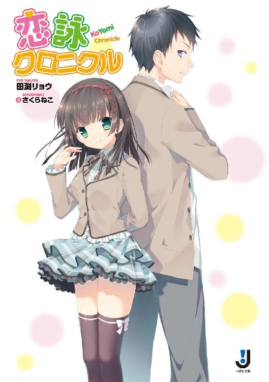
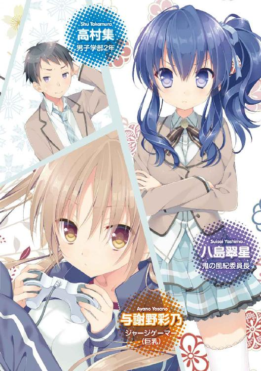
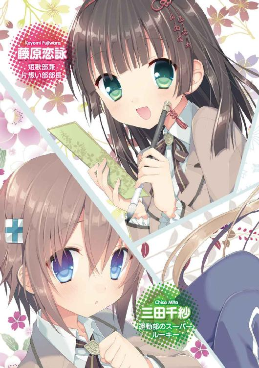
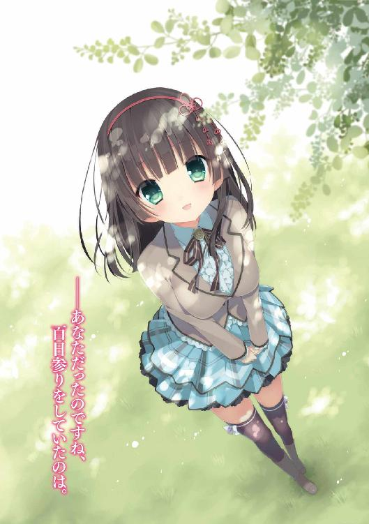
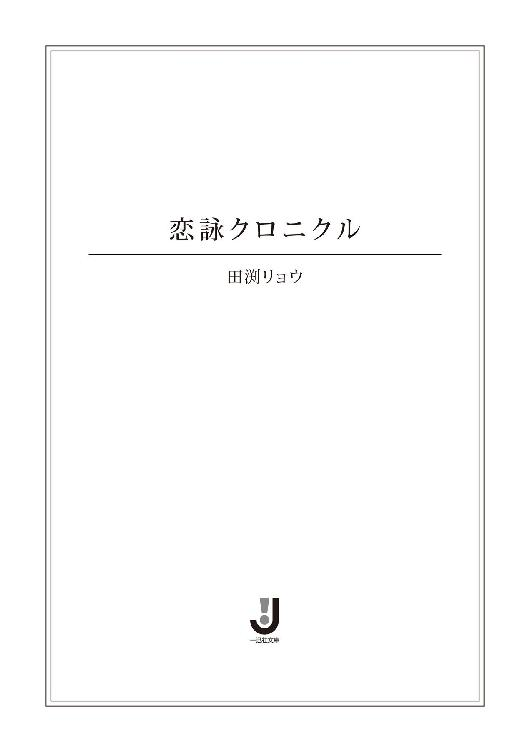
挿画：さくらねこ
デザイン：ナカムラナナフシ
（ムシカゴグラフィクス）
普段、遅刻ギリギリに登校する俺。
しかし今日に限っては違った。
まだ誰も登校していない、早朝の弥勒院学園。
校舎にはほんのりと朝もやがかかり、太陽の光も、薄く引き伸ばしたようにグラウンドに漂っている。
もちろん、俺の他に生徒の姿は見えない。遅刻未遂常習犯が早朝にウロウロしているのは、何かを怪しまれてもおかしくない状況だった。
もし生徒指導の芦屋に見つかれば『貴様、早朝から鶏卵（学校で飼育中）でも盗むつもりか！』と難癖をつけられるだろう。
歩く俺の左手方向には――高さ四メートルほどの、レンガ造りの壁が続いている。
ところどころ苔むして蔦が絡まり、かなりの年季が入っていた。
壁は学校敷地内の端から端まで伸びているが、学校と外界を隔てるものではない。
学校敷地内を〝二分割〟している壁なのだ。
なぜこのような長大なウォールが存在するのか？
名を〝理智の壁〟と言うこの障壁は、弥勒院学園の男子学部と女子学部を隔てるために建造されたもので、明治の世からここに建っている。
もともと弥勒院学園は共学ではなく、男子校の勒院高等学校と、女子校の弥生女子学園、隣り合っていたふたつの学校が合併してできた。
合併の理由は、少子化問題とか運営方針の見直しがあったらしいけど、ありていに言えば〝財政難〟という一言に集約される。
俺は誰もいない昇降口を横切って、〝理智の壁〟沿いに進んでいく。
今、俺が歩いているのは元男子校である勒院高校側の敷地で、現在における男子学部。
当然〝こちら側〟の校舎で学んでいるのは、すべて男子。
そう――弥勒院学園は共学を謳っているものの、校舎や門は〝男子側〟と〝女子側〟に分かれており、授業も完全に別。男女が机を並べて授業を受ける光景は存在しない。
共学の意味があるのか、とツッコみたくなるが、学校行事や放課後の部活動のみ、男女合同で行うことが許可されている。
「ふあ......」
歩きながら、思わずあくびが漏れる。
校舎屋上近くに設えられている時計を見ると、間もなく六時。
普段なら、まだベッドの中でもぞもぞしている時間だ。
先週あたりに桜のシーズンが終わったばかりで、春も終盤に突入している。しかし流石に早朝はまだ肌寒い。俺は少しだけ身を縮めながら、猫背気味で先を急いだ。
と、その時。
まだ朝もやがわずかに漂う歩道、その前方より、ひたひたと何者かが歩いてくる気配を感じた。
「......！」
思わず、理智の壁沿いに生えていた広葉樹の陰に身を潜める。
別に後ろ暗いところがあるわけじゃないけど、今、人と会うのはいろいろと面倒くさい。
俺は息を潜めて、広葉樹の陰から様子を窺った。
（......芦屋......）
早朝の校内を闊歩していたのは、芥川龍之介を若くしたような、古典教師の芦屋。生徒指導担当だけあって、万年遅刻未遂常習犯の俺としては避けたい相手だった。
......まいったな。
これから行う、とあるミッションを前にして、見つかるわけにはいかない。
俺は、重要アイテムが入った鞄を手元に引き寄せ、息を殺した。
距離が近づく。三メートル、二メートル、一メートル。
俺の横を通り過ぎる時も、何かに気付いた様子は見せない。
神経質そうな表情を湛えたまま、芦屋は去っていった。
......やれやれ。
しかしなんでこんな時間に芦屋がいるんだろう。
疑問に思いつつも、俺はゆっくりと木の陰を出ると、さらに先を目指した。
校舎の最も奥まった場所。
そこは理智の壁が途切れ、こぢんまりとした広場になっていた。手入れの行き届いた花壇や、きちんと刈り込まれた芝生があり、一部の生徒たちからは〝奥庭園〟という名前で呼ばれている。
広場は男子学部と女子学部のちょうど中間にあるのだが、広場は鉄柵で囲まれており、放課後まで解放されることはない。
だが今日、俺に課せられたミッションを果たすには、放課後を待たず広場に侵入する必要があった。
「――っ、と」
俺は二メートルの鉄柵をよじ登り、広場の中へと降り立った。
広場の中心には――樹齢何百年を数えそうな、巨大な樹がそそり立っていた。
宿願の樹。
この樹に「恋文」を百日連続で結べば、想いが叶う――。
俺はゆっくりと、巨木へと歩を進める。
遠くから見たことはあるが、ここまで近づくのは初めてだ。
ずっしりと大地に根を張り、四方八方に伸びて繁茂した枝葉。冬を経て、葉っぱは少しばかり寂しくなっているようにも見える。
しかし本当にでかい樹だなあ。首を限界まで後ろに傾けて、やっと頭頂部が見えるほどの高さだ。
「この樹に......結べばいいんだな」
俺は鞄を開けると、中から一通の――「恋文」を取り出した。
こいつを宿願の樹に結んでくれと、友達の望に託されたのだ。
再び宿願の樹を見上げる。
ホントに、でけー。
適度に樹が繁り、風通しもいい。ここが公園ならデートスポットにうってつけだろう。しかし弥勒院学園内でそんな風景を見ることは、まずない。
その理由は、生徒手帳の表紙裏を見ればすぐわかる。
〝本校生徒間による異性交遊は禁止とする〟
それが、校則のトップバッターとして刻まれている。
本校の敷地内でカップルを見るのはまず不可能。
下調べもせずに〝自転車で通える距離にあった〟というだけで弥勒院学園を受験してしまった俺は、入学式で学園長から〝異性交際は極刑ののちに死刑ののちに死罪〟という意味合いのスピーチを聞かされていた。
まあ今のところ彼女も好きな子もいない俺には関係ない。
しかし......望が誰かに片想いをしていたとは意外だった。
そんな素振りは今まで見せたこともないし、誰が好きなのかも俺は知らない。
一瞬、中を見てやるかとも思ったが、それはなぜかはばかられた。
俺は考えるのをやめ、頼まれたことだけを実行に移すことにした。
樹を見上げると......所々に、便せんが結ばれているのがわかる。
青だったりピンクだったりと、その色はさまざまだ。
望は〝結んであるのは黄色の便せん〟と言ってたから、奴以外にもこの樹に便せんを結んでいる人間がいるということだ。
願掛けのようなものなのか......。
俺は黄色い便せんを探して、視線をめぐらす。
（げ......）
見つかった。
ただし、地上八メートルほどの高さに生えた、木の枝の中ほどに。
なんであんな高いところに、あの野郎......。
もう一度注視するが、やはり黄色い便せんはアレだけだ。
うーむ......。
しゃーないなあ、もう。
俺は観念すると、恋文をズボンの尻ポケットに入れ、巨木を登り始めた。
梯子や脚立を探してくるより、こっちのほうが早いだろう。
しかし、一体いつ以来だ、木登りなんてするのは。
木のうろに指をかけ、わずかな突起を足場にしながら、ゆっくりと登る。
朝露でわずかに湿っているのか、手のひらにひんやりとした感覚が伝わってくる。
鼻先に、木の皮の薫りが漂う。
木ってこんな匂いしてたんだよなと思いながら、顔を上げる。半分ほど登ったか......もう一踏ん張りだ。
その時。
「......貴方だったのですね。百日参りを続けていたのは」
唐突に、俺の足元から声が響く。
澄んだ声だった。
びくっと驚いた俺が、視線を地面のほうへと向けると――。
そこに立っていたのは、見知らぬ女の子だった。
見覚えがあるのは、女の子が纏っている弥勒院学園女子学部の制服だけ。
日本人形を思わせるような、ちんまりとしたたたずまい。
浮かべている表情は、どこまでも朗らかで。
柔らかそうな、笑顔だった。
「え？ あ......えっと」
「あ......！」
女の子の瞳が驚きで丸くなると同時に、俺は樹にかけていた手をすべらせた。
次の瞬間、視界がぐるりと半回転し――。
重力の法則に背くことなく、落下した。
その日の朝。午前五時。
俺はベッドの中で健やかに寝息を立てていた。
そこに鈍く鳴り響いたのは、スマホのバイブ。
俺は朦朧としつつ、枕元のスマホを耳に当てる。
『......助けてくれ......』
スマホのスピーカーから野郎の声が流れてくる。
俺はノータイムで切ると、そのままタオルケットを被った。
間髪容れず、再びスマホが震え出す。しぶしぶ通話ボタンを押し、スマホを耳元まで持っていく。
『酷いな集、友達が困ってるのに』
こんな非常識な時間に電話をかけてくるお前こそ酷い。俺は「何か用か」と簡潔に聞いた。
『本当にヤバい。助けてくれ、ヤングライオン高村集』
「誰がヤングライオンだ」
と再び健やかな眠りに戻ろうとした。
だがすぐさまＬＩＮＥに「呪う」「この鬼、悪魔、外道！」「ごめんうそマジで助けて」などと支離滅裂な言葉が射出されてきた。「後生だからとりあえず家に来てほしい」というメッセージに「わかった」と一言返し、もそもそとベッドを出た。
家の連中を起こさないように出かける準備をし、クロスバイクが止めてある地下一階のガレージへ。ガレージからは坂道で、そのまま道路へと繋がっている。
新品のスリックタイヤに替えたばかりの愛車にまたがると、薄闇の中、稲田堤通りを南下し始めた。
自転車で飛ばして五分。セレブっぽいタワーマンションの一室に望は住んでいる。中学生の時からの友達だけど、奴の実家は金持ちで、両親と離れてずっと一人暮らしをしている。
ゆえに病気か怪我か、一人では解決できない不測の事態が起きた可能性もある。だからこうして、心優しき俺が早朝からペダルを軋ませているわけだ。
駐輪場に自転車を止め、エントランスを抜け、四十四階へ。一部屋に億単位の値段がついているだけあって、内装はまるで高級ホテル。廊下にもフカフワの絨毯が敷き詰められており、小汚いスニーカーで歩いていいのかいつも不安になる。
瀬戸邸の前に立って呼び鈴を押す。無反応。
さっき遠隔操作でオートロックを解除したのだから、中に望がいることは間違いない。しかし、俺がここに登ってくるまでの間に、望が謎の殺人鬼の手にかかった可能性もゼロではない。
ゆっくりとドアの取っ手を押し下げると、ドアはカチャリと開いた。
するとそこには。
「来てくれたか......」
玄関に這いつくばっている望がいた。
「......変わった寝方をしてるな」
「好きこのんでこのような醜態を晒しているわけでは......ごほっげほふかはっ！」
望はエビのように背中を丸めて咳き込み出す。
「末期か？」
「本当にヒドイね君は。風邪引いただけだ」
制服を着て、傍らには学生鞄。こいつ、今から学校に行くつもりなのか？
「げほっごほっ......あ......ぐばぁ！」
「......辛そうだな。病院行ったほうがいいぞ」
俺が手を貸そうとすると、
「......それより、託したいものがある」
そう言うと、望はヨロヨロと上体を起こし、傍らの学生鞄から何かを取り出す。
それは長細く折りたたまれた、黄色い便せんであった。
「なんだこれは」
「見ての通り恋文だ」
「他を当たってくれ」
「お前宛じゃない！ ......この手紙を......宿願の樹に結んできてほしいんだ」
「シュクガンノキ？」
「学校の奥に、庭園があるだろ」
「ああ、あのでかい樹か」
頭の中に、ボンヤリと樹の像を結ぶ。
「あの樹に恋文を結び続けると、片想いが叶うんだ」
「......」
「樹にはすでに、黄色い便せんが結んである。それをほどいて、同じ場所に結ぶんだ」
「風邪が治ってから、お前がやればいいじゃないか」
そう問うと、望はやや長めの前髪を揺らしながら首を横に振る。
「ダメだ。百日連続で、一日も欠かしちゃいけない。今日がその百日目......それに、誰もいない早朝に結ぶ必要があるんだ......！」
熱に浮かされた望の目は、いつになく真剣だった。
「......口惜しいことにこのありさま。頼んだぞ......ワイルドパンサー高村集」
望は俺の手に便せんを握らせると、そのまま力なくガクリと横たわる。
俺は仕方なく望を寝室まで引きずり、苦労してベッドに寝かせた。
そして同時に――俺が見ていた光景もグニャリと歪み、まるで掃除機に吸い込まれるかのように、暗い穴へと落ち込んでいった。
「んぐ......っ」
後頭部に微かな痛みを覚えつつ、俺は瞼を開けた。
背中にはやや硬いマットレスの感触と、頭上には白い天井。
加えて、仄かに漂う消毒液の薫り。
どうやらここは保健室らしい。
「気絶してたのか......」
最後に見たのは、天と地が真逆になった光景。
そこから記憶が途切れているということは、俺は樹から落ちた後、気を失ったってことか。
後頭部にコブができている他は、右手に軽いかすり傷。全身の関節がじんわりと痛いけど、あの高さから落ちてこの程度とは......運が良いんだか悪いんだか。
軽く上体を起こして周囲を見渡す。保健室には誰もいない。いつも白衣を着ている、薄毛の保健医の姿も見えない。ベッドの横には、俺の鞄だけが置いてある。
......そうだ、手紙は？ 望から預かった......。
俺は鞄を引き寄せ、中を覗き込む。
黄色い便せんの姿はない。
やっべ、なくしちまったか!? と思ったその瞬間。
木に登る直前、便せんはズボンの尻ポケットに入れたことを思い出した。
少しだけ尻を浮かせて、尻ポケットをもぞもぞと探る。
指先に紙の感触を感じ、おもむろに引っ張り出す。しかし――。
現れたのはヒヨコ色の便せんではなく、手裏剣型に折りたたまれた和紙だった。
「なんだコレ......？」
俺は丁寧に折りたたまれた手裏剣を開いていくと、和紙を広げた。
〝想えども 届かぬ高み 仰ぎ見て 踏み出す一歩 やがては咲かん
――手紙は預かりました。返してほしくば、放課後に宿願の樹までお越し下さい〟
和紙の裏に書かれていたのは、実に達筆な文字。差出人の名前はない。
コレって......俳句......じゃない、確か短歌って奴か？ 意味はよくわからんが......。
それよりも問題は後半の文だ。
手紙は預かったって......。
「ああああっ！」
思い出した！
宿願の樹に登っていた最中――俺に声をかけてきた見知らぬ少女。
柔らかな笑顔の、日本人形みたいな黒髪の女の子。
俺は彼女を見た直後、樹から落ちた。
手紙はあの子が持っていったってことか？ な、なんのために......。
アレは望が〝片想いしている相手〟に宛てた恋文――ラブレターなんだよな、確か。
それが他人の手に落ちたということは――
朝の様子を見るに、奴は奴なりに真剣だった。
知らぬふりを決め込むわけにもいかないだろう。
あの女の子がどういう理由で望の手紙を持っていったのかはわからないが、俺が取るべき選択肢は明らかだった。
とりあえず、入り口にぶら下がっていた〝連絡ノート〟に回復した旨を書き、俺は保健室を出た。
俺が教室に着いたのは午前十時過ぎ。ちょうど、二時限目が終わった休み時間。
視界を埋め尽くしているのはすべて男。潤いはまったくないが、男子学部だからしょうがない。
教室に入るなり、クラスメイトたちから『おっ、重役出勤か高村』『遅刻つーレベルじゃねーぞ』などの冷やかしを受けた。
どうやら俺が気を失い、保健室で休んでいたことは伝わってないらしい。
窓側席の最後尾から二番目、自分の席に向かうと......その後ろの席に、重病人がいた。
「おお、やっと来たか集。姿が見えないから、事故にでも遭ったかと思っ......げふっごふっぶほぉ！」
マスク越しにくぐもった声を漏らしつつ、望は激しく咳き込む。
「お前......何登校してんだよ。病院行けっつっただろ」
「な、何を悠長なことを。今日が百日参りの百日目、おちおち病院などに行ってられるか」
「そういや言ってたな、そんなこと」
「で、大丈夫だったか？ 誰にも見られずに、恋文はちゃんと所定の場所に結んでくれただろうなッ？」
いやその......誰にも見られないどころか、恋文はなくしてしまったのですが......。
「ムゥッ！ その何かをやり遂げたかのような漢の目！ さすが集、やってくれたか！」
「え？ あ？ うん」
ただ単に視線が泳いでいただけなんだが、なぜか望は都合よく勘違いしてくれたらしい。
幸い宿願の樹には、前に望が結んだ黄色い便せんが、今もそのまま結ばれているはずだ。
確認しに行ったとしても、バレることはないだろう。すまん、すまん......。
「コレで俺の片想いもやっと......げほっごほっンボァ！」
「あ、あのさ望、今日は帰ったほうがいいぞ。その、百日参りとかが実ったとしても、身体壊したらどーしよーもないだろ？ よし帰ろうすぐ帰ろう」
俺は無理に笑顔を作ると、望の胸ぐらを掴まんばかりの勢いで帰宅を提案する。
「ぜーはーぜーはー......そ、そうだな。じゃあ、後は頼んだぞ」
望はそう言うと右手の親指を立て、よろめきながら教室を出ていった。
一体何しに来たんだアイツは......。
俺は席に座ると、次の授業の準備をするべく鞄から数学Ⅱの教科書を引っ張り出す。
しかし、望が片想いとはねえ。
あいつに、そんな子がいたんだな。
アニメや漫画が好きで二次元と三次元の区別がついてない残念な奴だが、見た目はそこそこ男前だもんな。コイバナのひとつやふたつ、あってもおかしくないだろう。
片想い......片想いねぇ。今のところ、俺には縁のない感情だな......。
と、その時。
脳裏に、例の少女の声が響いた。
『......貴方だったのですね。百日参りを続けていたのは』
んんんん？
そうか、あの子は百日参りを続けていたのは俺で、手紙も〝俺の〟ものだと勘違いしているんじゃ......。
すると俺は、さも自分の手紙のように、取り返しに行かなくてはならないってことか？
俺は机の下で、もう一度例の手紙――手裏剣型に折りたたまれていた和紙を広げる。
〝思えども 届かぬ高み 仰ぎ見て 踏み出す一歩 やがては咲かん
――手紙は預かりました。返してほしくば、放課後に宿願の樹までお越し下さい〟
......この短歌には、どんな意味があるんだろう。
問題がワンランクややこしくなった予感を覚えつつ、俺は放課後の到来を待った。
ホームルームが終わって放課後が始まると同時に、俺は過去に例がない速度で教室を飛び出した。
望から預かった手紙には、曲がりなりにもあいつの〝秘密〟が書かれているわけで。その秘密が俺のミスで見ず知らずの他人の手に握られているのは、どうにも居心地が悪い。
庭園に向かう途中、男子学部の敷地内でも、女子学部の制服をちらほらと見かけた。放課後になって初めて、弥勒院学園は〝共学〟になるのだ。
運動部はそれぞれ男子、女子に分かれている部がほとんどだが、文科系部活には男女合同でやっている部も多い。そのため、女子学部とお近づきになりたいという不純な目的で、文化部に入ろうと考える男子も多いらしい。
......仮に仲良くなれたとしても、この学園にいるかぎり交際は許されないわけだが。
男子学部本校舎二階にある二年Ｄ組から庭園まで、早歩きで約二分。
早朝、鉄の柵に囲まれていた状態とは違い、放課後の庭園は数箇所の入り口が開放されていた。
俺は庭園の中に入ると、最深部にある宿願の樹を目指す。
チチチ、と鳥の鳴き声が耳に届く他は、人の声は聞こえない。
遥か遠くから、ブラスバンド部の管楽器が、微かに響くのみだった。
朝は薄もやではっきりと見えなかったが、庭園はなかなかに手入れが行き届いている。
至る所に作られた花壇も手入れされてて、雑草が生えている様子はほとんどない。
誰かがちゃんと世話してるんだろうなあ。
――例えば今、俺の目の前にいる女子生徒みたいな子が。
思わず、俺の足が止まる。
五メートルほど先の花壇の前に、しゃがみ込んでいる女の子がいた。
手にはじょうろを持ち、そこからはちろちろと水が注がれている。
「よしよし。大きくなってきたねぇ。葉っぱがしおれちゃった時はすっごく心配しちゃったけど......もう大丈夫。マリベルもナターシャも、もっともーっと元気になってね」
ショートカットのその少女は、どちらかといえばスポーティーでアクティブな印象を受ける。
「待たせてごめんね、はい、お水だよ。ジュディもハンナもすっごく美人。きっと、素敵な花が咲くんだろうなぁ」
さっきから出てくる人名は、おそらく......彼女が花々につけている名前なのだろう。
ウチにはガサツな姉が一人棲息しているが、絶対にこういった思考回路は持ち得ない。
以前テレビで〝植物に話しかけるとスクスク育つ〟とやっていたのを見て、マユツバだと思っていたのだが......実践している人がいるんだなぁ。
女の子は、なおもニコニコ顔で花たちに水をやり続ける。俺の存在には、いっさい気付いていないようだ。
いかんいかん、つい見入ってしまった。宿願の樹に急がなきゃ。
と、足を踏み出したその瞬間。
踏みつけてしまった小枝が、パキリと乾いた音を立てる。
「......！」
音に反応して、女の子が即座に俺のほうへと視線を向けた。
「はひっ!?」
そこで俺の存在に初めて気付いたらしく、女の子はショートカットを揺らしながら、変な声を漏らした。
そしてその直後――女の子は目を見開いたまま、リトマス試験紙が染まるように顔を赤らめ始めた。
「はえっ!? た、た、高村センパイが......どうしてここに!?」
「......え？ なんで俺の名前知ってんの？」
俺は素早く脳内検索をかけたが、目の前の少女にはまったく見覚えがない。
中学の頃の知り合いか？
さっきこの子、俺のことをセンパイって呼んだよな。ということは、年下ってコトか。
「えーと、ごめん。前にどこかで会ったっけ？」
「あぅ！ いやそのあのっ、私はそのっ、知り合いというか、一方的に存じ上げておりますというかそのっ！」
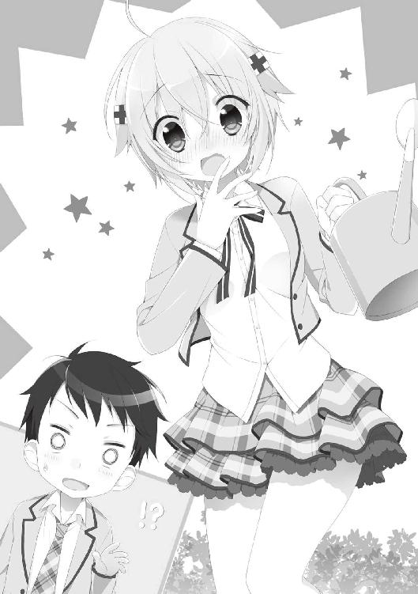
女の子は胸の前にじょうろを持ってくると、首を上下左右にカクカクと揺らしながら言葉を継ぐ。あからさまに挙動不審というか、平常運転からはほど遠い状態だと思う。
「とりあえず落ち着こう、な？」
「は、はひっ！ み、水でも飲んで落ち着きます！」
「いや、なんでじょうろから飲んでるの!?」
「はひぇっ!? そ、そうでした！」
じょうろの注ぎ口を口元に持っていこうとした女の子を、俺は慌てて制止する。
「とりあえず深呼吸したら？」
「し、深呼吸ですね！ ひっひっ、ふー、ひっひっ、ふー」
「それ、出産時の呼吸法だよね......」
「うえっ!? そ、そそそそうでしたっ、あたしその、そそっかしくて！」
そそっかしいとはちょっと方向性が違うと思うけど、テンパってしまうと、思考が飛んでしまうタイプなんだろうか。
なまじ顔が整っているだけあって、アタフタと慌てているさまもなかなか愛らしいが、話が先に進みそうにない。
だがその時。
俺の背後から、第三者の声が響いた。
「あら？ 千紗ちゃんも来てたんですか？」
「こ、恋詠部長っ！」
目の前のショートカット少女の顔が、ぱぁっと明るくなる。
その声につられ、振り返ると――。
立っていたのは、艶やかな黒髪に、朗らかな笑顔を浮かべた少女。
「また、会えましたね」
間違いない。
朝、宿願の樹で会った少女だ。
ショートカット少女は黒髪少女のもとに駆け寄ると、その後ろに身を隠す。
黒髪少女のほうが頭ひとつ低いので、無理やり身を屈めている状態。まるで子供の後ろに大人が隠れているような感じだ。
俺が口を開こうとする前に、黒髪少女が一礼する。
「自己紹介、まだでしたね。私は藤原恋詠、二年生です。恋を詠む、と書いて〝こよみ〟です」
そう告げると、ニコリと微笑む。周囲の蕾も一気に開きそうな、屈託のない笑顔だ。
藤原恋詠......か。本人の容姿も、名前負けしてない可憐さだ。
「そして――私の後ろにいるのが、同じ部活動の一年生、三田千紗ちゃん」
軽く後ろを振り返りつつ、藤原さんが紹介する。
「ええええと、あのその、み、三田千紗です！ う、生まれた時から三田千紗と呼ばれてます！」
そりゃそうだろうとツッコみたいのをこらえつつ、
「え、えーっと、高村集......です。男学の二年Ｄ組で......」
とりあえず、俺も自己紹介。
そしてさっそく尋ねてみた。
「あのさ、俺を保健室に運んでくれたのって藤原さん？」
無論、樹から落ちた後のことだ。
俺は気を失っていたのだから、自分で歩けるわけがない。
「はい。僭越ながら、私が運びました」
「え？ もしかして、藤原さんが俺を背負っていったの？」
「いえ。落ちたてを台車に乗っけて、朝一で運んでおきました」
野菜を出荷するようなノリで言う。
「ごめん、迷惑かけちゃったな」
俺が軽く頭を下げると、藤原さんは首を左右に振る。
「それはこちらの台詞です。百日参りの最中、驚かせてしまい申し訳ありませんでした」
......いよいよ本題だ。
「あのさ、その〝百日参り〟って奴だけど......藤原さん、俺の便箋持ってるよね？」
正確には俺のじゃないけどね。
「はい、お預かりしておりますよ。大切な恋文ですものね。なくなったら一大事、私が大切に預からせて頂きました」
藤原さんの上着のポケットから、例の黄色い封筒が姿を現す。
預かってた......そうか、彼女は興味本位で手紙を持ち去ったわけではなかったのか、とちょっと安心した。
もし俺が気を失っている時に、手紙を誰かに見られたら――それこそ、風紀委員の連中や、生徒指導の芦屋に見つかりでもしたら、面倒なことになっていたかもしれない。
「預かってくれてありがとう。なくしたと思って焦ったよ」
俺が手紙に手を伸ばすと――。
藤原さんはひらりと身をかわし、俺の手から手紙を遠ざける。
な、なんだ？
「この恋文――返すには、条件があります」
「え？ それはどういう......」
「高村さんも入って下さい。私たちの短歌部に」
「はい？」
タンカブ......？
「もっとも、短歌部とは仮の姿。私たちの本当の名前は――〝片想い部〟。すべての片想いを応援するための集まりなのです」
軽く風が吹き、芝生がそよぐ。
藤原さんの髪も微かに揺れた。
「えーとその藤原さん、言ってる意味がよくわからないんだけど......」
「貴方も、片想いをされているのでしょう？ 百日参りをするほどに」
そう口にするや否や、背後に隠れていた千紗が身を乗り出す。
「え、え―――っ!? セ、センパイ、片想いしている人がいるんですか!?」
「い、いや、その......」
片想いしているのは俺じゃない、と口をついて出そうになったが......風邪で倒れた友人の手紙を、代わりに結びに来ていたことは、咄嗟に言い淀んでしまった。
望は言ってたしな。手紙は〝誰にも知られないように〟結ぶ必要があるって。
「その、ちょっと込み入った事情があってさ......」
「ふむむ、何かワケアリなんですね！」
さっきまで藤原さんの後ろでオドオドしていたはずの千紗は、なぜか前のめりに身を乗り出している。
「片想いということはまだカップルとして成立してないということでチャンスは残っているというわけで諦めるのはまだ早いファイト千紗！ うううううう～」
両手を握り締めて、頭をフルフルと左右に動かす千紗。この子は一体何と戦っているんだ......。
「と、とにかく、その手紙、返して貰えないかな」
「ええ、お返ししますよ。短歌部に入っていただければ」
小首を傾げ、ニコリと微笑む藤原さん。
直視するのが眩しいほどのスマイルビームが俺の網膜に突き刺さる。
そもそも、片想いを応援する部ってどういう活動するんだよ。まったく想像できない。
「安心して下さい。普段は短歌を嗜むまっとうな部です」
「あの、俺、短歌とか詠んだことないし」
むしろ古典は苦手なんだけど......。
だが、目の前の藤原さんはにこやかな笑顔を浮かべたまま。
「試しに、入ってみてはいかがですか？ それが貴方の片想いを成就させる、一番の近道になるかもしれませんよ」
そう言うと、顔の横に黄色い恋文をかざす。
「千紗ちゃんもそう思いますよね？」
「え？ あ、はいっ、恋詠部長！ そうですねっ、入るべきだと思います！ 断然入りましょう！ 俄然入りましょう！ この機を逃す手はありませんよ！」
「うーん......」
俺は少し考える。
勘違いはともかく、望の恋文を取り戻すためには......条件を一旦呑むほうが簡単だな。
ここで押し問答してもしょうがない。入部するだけしておいて、幽霊部員になるという選択もあるはずだ。
「......わかった。入るよ、その短歌部......っていうか、片想い部に」
「本当ですか！」
俺の承諾の言葉を聞くなり、藤原さんの顔がぱぁっと明るくなる。
隣にいた千紗も、両手を合わせてご機嫌な顔。
「よかったですね、千紗ちゃん」
「は、はいっ！ 嬉しいです！ まさかセンパイが入ってくれるなんて......これで三人目の部員の誕生ですね！」
「え？」
「今までは私と千紗ちゃんの二人で活動してたんです」
......それ部活って言えるのか？
部員が少ないとフェードアウトもしにくいし。先ほどの判断は正しかったのだろうか。そう迷っていると――藤原さんは俺の横を通り過ぎ、宿願の樹へと向かった。
「では、新入部員も増えたことですし、片想い部としての役割を、張り切って果たしましょうか」
そう言うと、藤原さんは望の恋文を上着のポケットに収め、樹へと手を添えた。
「ふふ、随分と高いところに結びましたね。それだけ、天に想いを届けたい気持ちが、強かったということですよね」
そう告げた直後、藤原さんは宿願の樹に足をかけ、巨木を登り始める。
「こう見えても、木登りは得意なんです」
悪戯っぽく笑う彼女。
「......ところでそれって、早朝に結ばないとダメなんじゃなかったっけ」
「いえ。樹に恋文を結ぶのは、あくまで形にすぎません。大切なのは〝思い続けること〟なのですから」
藤原さんはそう言うと、さらに宿願の樹を登り始める。本人申告の〝木登りは得意〟という言葉に嘘はないようで、予想していたより遥かにスムーズだ。
「ファイトです、恋詠部長！」
少し離れた場所から、千紗も応援する。
そうこうするうちに、藤原さんは俺の頭の高さを通り過ぎ、黄色の便せんが結んである枝まで到達した。
手を伸ばすと、手際よく便せんを結び替える。
八メートルくらいの高さなのに、まったく恐れる様子もない。
「これでよし......と」
そう軽く微笑むと、藤原さんは登ってきたルートとは逆に、木の幹を下り始めた。
その時だった。
風がふわりとスカートを巻き上げ、藤原さんの足の間から、純白の物体が見えた。
丸みを帯びたお尻を包む光沢のまぶしい布......いわゆるパンツだ。
「あ」
「え？」
俺の声に反応し、藤原さんが地上を見下ろす。
目が一瞬合った。
「いや、その......」
じ、事故ですから、故意じゃありませんから！
そう、心の中で弁明した瞬間――。
「～～～～～ッ!?」
藤原さんは顔を真っ赤にして両手でスカートを押さえた。
その状態で、手を放したら――
「ちょっ......！」
藤原さんの小さな身体がゆっくりと樹から離れ、上体が傾いていく。
「ぶ、部長っ！」
千紗が悲鳴に似た声を上げる。
まずい！
俺は頭上を見上げ、落ちてくる藤原さんの身体を受け止めるべく手を広げた。
「きゃああああああっ！」
「ぐはっ！」
顔面に受けた衝撃で、俺は背後に倒れ込む。
「部長......！ 高村センパイ！」
駆け寄る千紗。
結論から言うと、藤原さんは無事だった。
俺の顔面がクッションになり、藤原さんは無事に地面へと着地した。
――ただし、彼女の股間が俺の顔をまたいでいるという、とんでもない形で。
「～～～～～っ......！」
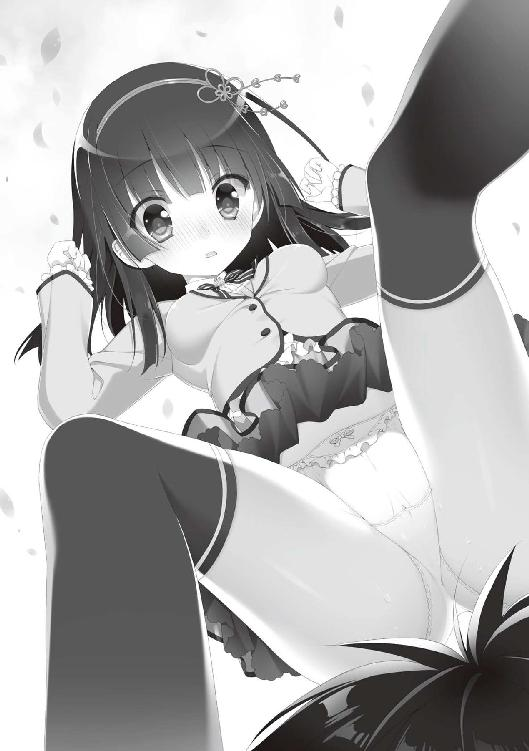
藤原さんはスカートの裾を押さえつつ、弾けるように俺の顔から腰を上げて立ち上がる。
俺はといえば、ダメージをまったく感じていなかった。
なぜなら......すべすべで、もちもちだったから。
一瞬ではあったが、視界は禁断の純白に覆われ、俺の頬は、すべすべでもちもちの太股にぎゅうううっと挟まれていた。
柔らかくて、なんかいい匂いまでした。
痛覚は麻痺し、顔はだらしなく緩んでいたことだろう。
「............っ」
俺は頭を振り、冷静を装いつつゆっくりと立ち上がると、ズボンの尻についた芝生をパンパンと払う。
「......あの、怪我はない？ 大丈夫？」
「......ありがとうございます。助かりました」
藤原さんも何事もなかったかのように、深々と頭を垂れる。
「はい、これを」
藤原さんから、黄色い便箋を手渡される。先ほどまで、宿願の樹に結ばれていたものだ。
明日にでも、証拠として望に渡しておこう。
「ああ、ありがとう」
俺が礼を言ったその時。
藤原さんの黒い髪がユラリと揺れ、笑顔が俺に向けられる。
しかし――藤原さんの目は〝笑っていなかった〟。
「あの、高村さん」
「は、はい」
「――見ましたよね？」
顔はにこやかに笑っているものの......全身から発散しているオーラは、先ほどまでの朗らかさとは正反対の、まったく異質なものであった。
「い、いえ......その......はい」
獲物を圧殺するかのような、殺気に似た波動に思わず頷いてしまった。
なんだ、このプレッシャーは......!?
「私たち片想い部は、つつましく、純粋に、淑やかにを信条としています。決して邪な想いをいだいてはいけません」
「そ、そうですか」
「つつましく、純粋に、淑やかに」
「しょ、承知しました」
ただの事故だからしょうがないですよね......という言い訳すら許さない、心臓を鷲づかみにされたような威圧感。
俺はその時悟った。
この人――藤原恋詠さんは怒らせてはいけない種類の人かもしれない......。
心に留めておこう。
傍らの千紗はといえば、遥か頭上に結ばれた黄色い恋文を、じっと見つめていた。
藤原さんもいつの間にか不穏なオーラを消し去り、元のにこやかな表情で、同じく恋文を見上げている。
「あの片想いは、どのような物語を紡ぐのでしょうね」
......藤原さんも千紗も俺の恋文だと思い込んでいるけど、あれは望のなんだよなあ。
「想いが――形になりますように」
祈るような口調で呟いた藤原さんの言葉を聞きながら、俺も少しだけ、首を縦に振った。
望がどこの誰を好きなのかは知らないが、いい結果になると、俺も嬉しい。
そう考えつつ、俺は気になっていたことを聞いてみた。
「そういや、三田さん」
「千紗でいいです、高村センパイ」
「ああ、じゃあ......千紗ちゃん、さっきも聞こうと思ったんだけど......どうして俺の名前、知ってたわけ？」
聞くと、千紗は肩をびくっと震わせて反応する。
もし犬だったら、ショートカットから耳がピコンと立ちそうな勢いだ。
「え？ それはですねあのですね！ そ、そのうち話します！ そのうちっ！」
千紗は広げた両手を上下左右斜めにバババと動かしながら、引きつった笑いを浮かべた。
......まあ、本人が話したくないなら、いいか。
俺たちのやり取りを笑顔で見守っていた藤原さんは、こちらに身体ごと向き直ると、桜色の唇を動かした。
「明日また放課後、ここに来て下さい。その時に片想い部の決まりごとを、教えますね」
先ほど、藤原さんが発散する威圧感を知ってしまった俺は......否、とは言えるはずはなく、こくりと首を縦に振った。
※ ※
その日の、帰宅後。
俺は学生服のまま、ゴロリとベッドに横になった。
「なんでこんなことになっちまったんだろーなー......」
なかなかに目まぐるしい一日だった。
宿願の樹、百日参り、そして――短歌部の二人。
日本人形を思わせるような愛らしさの藤原恋詠と、人懐っこいわんこみたいな三田千紗。
二人ともタイプは違えども、目を引く美少女だった。
そういや、弥勒院学園に入って女の子と話したの......今日が初めてだ。
この一年と一ヶ月、特に部活にも入っていない俺にとって、学園の女の子と接点が持てるわけがない。
なりゆきで短歌部に......いや、実際には短歌を作る部じゃない。片想いを応援する部とか言ってたな......。
男女交際が禁止されてる学校で、校則に逆らうような活動をするってことか。
下手すりゃ、目をつけられて、停学になりかねない。
藤原さんと千紗は〝俺の片想い〟を応援する気なのかな。
もともとは望の恋文を取り戻すための交換条件だったし、目的を達成した今、部に参加する理由もないんだけど......それはさすがに薄情すぎる気がした。
――あと、藤原さん怒らせると怖そうだしな......。
そんなことを考えつつ、とりあえず明日の放課後、俺は部活に参加することにしたのだった。
翌日。
朗らかな春の日から一転、空は厚い雲に覆われていた。
昨日早退した望は今日も休んでおり、例の黄色い便せんを返す機会はなかった。
まあ、事態がいろいろとややこしくなっているので、望にはしばらく休んでおいてほしいところだ。
俺は潤いのない男子学部の授業を終えると、昨日藤原さんに指定された通り庭園に向かった。
入学してから一度も足を踏み入れたことのなかったあそこに、二日連続足を運ぶというのも妙な気分だ。
庭園に着くと、入り口付近には並んでおしゃべりをしている女子学部の生徒がいた。
落ち着いた空気を壊さない感じで、声のトーンは抑えられている。さすが、一昔前まではお嬢様高校の代名詞だった弥生女子学園を母体に持つ、女子学部の生徒だ。
さらに奥に進むと、しっかりと大地に根を下ろした巨木が目に入る。
その幹に背中を預けるようにして――藤原さんは本を読んでいた。
向こうは、こちらに気付いていない。
これまで女の子とほとんど縁のない生活を送っていた俺が、どのタイミングで声をかけるべきか一瞬躊躇していると――
「あ、高村さん」
ふと彼女が顔を上げて、にっこりと笑った。
俺は小声で応じて、右手を軽く上げた。
樹のそばにいるのは藤原さん一人で、千紗の姿はない。
「来てくれたんですね。ありがとうございます」
藤原さんがちょこんと頭を下げると、サラサラの黒髪がふわりと揺れる。
「そりゃ......昨日、約束したし」
「でも、破ることもできたでしょう？」
確かに少しは〝行くのやめようかな〟とも考えた。
「だけど、高村さんは来てくれました。ということは、高村さんは約束を大切に考えてくれる人、ということです」
その時、藤原さんがぱたんと閉じた本の書名が目に入った。
〝新古今和歌集〟――。
確か、平安時代だか鎌倉時代だかの和歌の本......だよな。古典の授業で、書名だけは聞いた気がする。誰が書いたか、何が書いてあるかなんてまったく覚えてないけど。
「そういや......手紙に書いてた短歌、あれは藤原さんが？」
「はい。まだまだ未熟なのですが......見るのも、詠むのも好きなので」
「いやいや、詠めるだけでもすごいよ。俺なんか五七五のやつとの区別もつかないし......」
「俳句ですか？」
「そうそう」
「高村さんが考えているよりも難しくはないですよ。感じたこと、思ったことを、短い言葉に凝縮するだけですから」
息をするようなものですよと言わんばかりに、藤原さんはにこりと微笑む。
一般の人間にはハードル高いと思うんだけどなあ......。
そう、俺が考えていた時。
後方から駆けてくる足音が響く。
「す、すみません、遅れちゃいました！」
はぁはぁと息をつくのは、体操服姿の千紗。胸には〝三田〟の文字が書いてある。
男子学部の体育ではムサい野郎の足しか見ていないので、スパッツから伸びる足が実に眩しい。
「バスケ部の助っ人に行ってたもので......」
走ってきて乱れた髪を手櫛で整えながら、千紗は申し訳なさそうに口を開く。
「千紗ちゃんはバスケ部と掛け持ちしてるの？」
「え、えーと......掛け持ちというか、バスケ部と陸上部とバレー部とテニス部の助っ人をしています」
我が耳を疑っていた俺の横で、藤原さんが補足とばかりに言葉を継ぐ。
「千紗ちゃん、中学の都大会で走り幅跳びと百メートル走、二百メートル走、八百メートル走、千五百メートル走、百メートルハードル走の記録保持者なんですよね」
「は、はい。あと高跳びも......」
盛りすぎィ！
身体はちんまりとした感じなのに、恐るべき運動神経を備えているらしい。
「それで今年の四月、稀に見る逸材が入学するというので......女子学部の各運動部が、千紗ちゃん争奪戦を繰り広げたんです」
「そりゃま、どの部も欲しがるよな」
「でも、千紗ちゃんの身体はひとつ。各部協議を重ねた結果、現在の助っ人制に落ち着いた......という流れです」
「はいっ。そんなわけで、放課後はいろいろな部に顔を出させてもらっています。あと、庭園の花壇のお手入れをさせて頂いたりとか」
千紗はそう言うと、照れくさそうに後頭部に手を当てた。
「それだけ運動神経に恵まれてんのに、どうして短歌部にも入ってるの？」
俺は率直な質問をぶつけてみた。すると。
「身体を動かすことは大好きなんですけど、運動ばっかりやってたら、そのっ......」
そこで千紗は言葉を区切ると、視線を落としてモジモジし始める。
「......じょ、女子力がどんどん減っちゃってる気がして......だから短歌部......片想い部のお世話になろうかと......」
俯きながらそう話す千紗の耳は、鮮やかなくらいに赤く染まっていた。
なるほど、女の子らしい理由だ。
俺が一人で納得していると、藤原さんがパン、と軽く手を叩く。
俺と千紗の視線は、即座に藤原さんに向けられる。
「さて、めでたく三人目の部員を迎えることができました。ここで今一度、短歌部――片想い部の歴史をお話ししておきましょう」
藤原さんは、長いまつげに彩られた瞳を伏せ、ゆっくりと語り始める。
「――世は明治。勒院高等学校と弥生女子学園が設立された時代。当時それぞれの学校には、眉目秀麗成績優秀で知られる生徒会長がおりました。二人は互いを想い、支え合い、清く正しい交際を続けていたのです」
俺の頭の中にはビシっとした詰襟姿の好漢と、袴姿も麗しい女生徒のイメージがぼんやりと浮かぶ。
「しかし――その交際は、祝福されてはいなかったのです。二人はそれぞれ、当時の日本を代表する財閥の子女。しかも、家同士は激しく対立していたのです。当然、交際は許されず、二人は逢うことはおろか言葉を交わすことも禁じられてしまったのです」
ま、ケータイもネットもない時代だからな。簡単に連絡も取れないだろう。
「二人の実家は互いを会わせないように、両校の間に高い壁を築きました。それが現在まで残っている、〝理智の壁〟なのです」
今も学園を真っ二つに分断しているこの壁は、そんな理由で建てられたのか。
「物理的にも引き裂かれた二人。しかし、彼らは諦めませんでした。両校の間にある巨木に恋文を結び、互いの想いを伝え合いました。人知れず、雨の日も雪の日も――恋文を護り続けた巨木こそが、この〝宿願の樹〟なのです」
そう言うと、藤原さんは傍らの巨木に、そっと手を添える。
「いつしか二人の物語は言い伝えになり伝説になり、そしておまじないとなりました。それが〝百日参り〟です」
「なるほど。恋文の交換を始めた二人にあやかって......というわけか」
「はい。百日連続で想いを綴った恋文を結び、最後の百日目に相手の名前を書くのです」
藤原さんは俺の言葉を肯定するように、軽く微笑んだ。
「百日参りが始まったのは、大正時代とも昭和の始めとも言われています。同時に、勒院高等学校と弥生女子学園それぞれに〝短歌部〟が設立されたんです」
そうか。合併したのは数年前だから、以前はそれぞれの学校に短歌部があったんだな。
「で、その百日参りと短歌部に、何か関連が？」
「ええ、大いに。百日参りを広め、その恋を人知れず見守ってきたのは――短歌部だったんです」
藤原さんは俺の目を真っ直ぐに見つめ返すと、言葉を続けた。
「表向きは、短歌を嗜む典雅な部活。しかしその実態は、生徒たちの片想いを陰から支える、学校非公認の恋愛互助団体〝片想い部〟なのです。百日参りを終えた生徒たちの想いに力を添えるのが、私たちの役目」
「なるほど......それで俺の片想いを成就させるために、部に誘ったってことか......」
藤原さんは首を左右に振る。
「それも理由のひとつですが、すべてではありません。高村さん――貴方にも、この学園にたゆたう片想いたちを、支えてあげてほしいのです」
......支えてほしいとか言われてもなあ。
恋愛相談なんてガラじゃないし、そもそも色恋沙汰なんてものとは、生まれてこのかた無縁なんだけど......。
俺は助け舟を求めるように、傍らの千紗に視線を移す。
「だ、大丈夫です！ 高村センパイなら大丈夫！」
根拠のない励ましをもらっただけだった。
「片想い部は、過去にも数々のカップルを成立させてきた実績を持つ、由緒正しき伝統ある部活です。しかし部員には、みっつの決まりがあるのです」
「決まり？」
そんなものまであるのか。
「まずひとつめ」
藤原さんは、白くしなやかな人差し指を立てる。
「片想い部部員は、誰かに片想いをしていなくてはならない」
それは確かに俺が部に誘われたきっかけなんだけど......真実を明かすタイミングが今のところないので、そのままになっている。
続けて、藤原さんは中指を立ててピースサインを作る。
「ふたつめ。片想い部部員は弥勒院学園在籍中に、必ず想い人に告白しなければならない」
「そ、そうなの？」
片想いの相手がホントはいない場合はどうするんだろう......。
戸惑う俺をよそに、藤原さんは続ける。
「みっつめ。告白した後は、どのような結果に終わろうが、退部しなくてはなりません」
「片想い部部員に与えられたチャンスは一度きりってことか」
傍らの千紗がうんうん、と頷いた。
「人を好きになるということは、それほど真剣な覚悟が必要......ってことなんですねっ、恋詠部長！」
なるほど。下手な鉄砲数打ちゃ......というのも、あまり美しくない気がする。
「ところで、藤原さんも千紗も入部しているってことは、片想いの相手がいるってことだろ？ 二人みたいに可愛い子なら、すぐに両想いになれると思うんだけど」
俺が素朴な感想を述べると――あら、と微笑んだ藤原さんに対し、千紗は顔を赤くして、両手をわたわたと動かし始める。
「そ、そんなっ、こ、恋詠部長はともかく私は可愛くないですっ！ ガサツだしそそっかしいし、お化粧品のひとつも持ってないし！」
まあ彼女にしたいというよりは妹タイプかもしれない――などと考えていた、その時。
「お前たち、そこで何をしている」
庭園には似つかわしくない、怒気を孕んだ声。
見ると早歩きで、一人の男性教諭が俺たちへと歩み寄っていた。
「げ、芦屋......」
芦屋は神経質そうな目を細めて、俺たち三人の顔を順番に見やった。
「生徒手帳の一ページ目に書いてある校則、忘れたわけではないだろうな」
芦屋が示唆しているのは、例の〝男女交際禁止〟という一文だ。
もちろん、俺たちはやましいことをしているわけではない。藤原さんたちは女子学部だから芦屋のことをよく知らないはずだが、一度目をつけた生徒に対してネチネチと絡み続けるところがあるので、男子学生たちが苦手としている教師だ。
俺は遅刻未遂常習犯として、もともと芦屋に目をつけられている。ここは適当に受け流して、藤原さんたちに害が及ばぬようにしないと......そう思い、一歩前に踏み出そうとした。
だが、それより早く俺の横をすり抜け、藤原さんが前へと進み出る。
「問題ありません。私たちは今、短歌部の活動中なのです」
「――短歌部......だと？」
藤原さんの発言を受けて、芦屋の眉間に皺が寄る。
「歌の題材を探して、庭園を散策していたところです。ね、高村君」
「あ、ああ、そう、そうなんですよ」
俺は相づちを打った。
「古典の授業の大半を寝て過ごしているような男が、短歌に興味があるとは思えんがな」
芦屋はふん、と鼻を鳴らすと、俺を一瞥する。
「部活ならば仕方ない。しかし、部活の範疇を超えた男女交際に及ぶようなら、厳しい処分が下ることを忘れるな」
芦屋は吐き捨てるように言うと、不機嫌そうな表情を崩すことなく、その場から歩み去った。
庭園から芦屋の気配が完全に消えたのを見計らって、千紗が口を開く。
「さっきの先生、男子学部の生活指導ですよね？ なんだか、怖いですねっ」
「ああ、芦屋――古典の先生で、ちょっと面倒なんだ」
もう少し生徒に歩み寄ってもいいと思うんだけど......いつもピリピリしすぎてんだよなあ。
藤原さんは芦屋の去った方向を見つめていたが、すぐに俺のほうへと向き直る。
「先ほどはすみません。馴れ馴れしく高村〝君〟などと呼んでしまって」
「別にいいよ。同学年なんだし」
「では、これからはそう呼ばせてもらいますね。あと、藤原さん、というのもよそよそしいので、私のことも恋詠とお呼び下さい」
「じゃあ、私は高村君センパイで......！ あれ？ 呼びにくい。やっぱり高村センパイにしておきます！」
うん、それがいいと思う。
藤原――恋詠さんは、ふと思案顔で呟いた。
「部員も増えたことですし......そろそろ私たちも、活動拠点が欲しいですね」
「そうですね、さっきみたいなこともありますし！」
恋詠さんの言葉に、千紗が答える。
「そもそも、短歌部って今までどこで活動してたんだ？」
「天気のいい日は庭園や屋上、雨の日は図書室など、日に応じて活動場所を変えてました」
「要するに根無し草ってことか」
「浮雲の如し、と言ったほうが風情ありますね」
恋詠さんは微笑みながらそう言った。
「以前は部員も多く、部室もあったと聞きます。今は私と千紗ちゃんの二人でしたので、特に決まった活動場所は設けていなかったのですが......」
男子の俺が加わった編成では、今日みたいにあらぬ誤解を受けるかもしれない。
それに片想い部という裏の顔を持つ部なのだから、あまり目立たないほうがいいだろう。
「では、こうしましょう」
ぱむ、と恋詠さんが手を合わせる。
「短歌部のですね、部室を手に入れましょう」
今日のおかずはハンバーグにしましょう、みたいなノリで、
「私に、アテがあるんです」
そう言うと、恋詠さんはにこやかな笑みを形作った。
女子学部の校舎に初めて入って思ったのは〝いい匂いがする〟ということだった。
清潔感があるというか、空気が澄んでいるというか。
廊下には花や絵画が飾られ、掃除も行き届いている。
対して男子学部の校舎内には、時々ゴミも落ちているし、謎の淀んだ空気が漂っている。
廊下ですれ違うのも、基本は女子。部活中は男女の行き来に制限はないのだが、どこか異世界に迷い込んでしまったような感覚すらある。
「はい、着きましたよ」
恋詠さんに先導され、俺と千紗がやってきたのは――女子学部の本校舎四階にある、とある教室。ドアの上には達筆で〝生徒会室〟と書かれたプレートが掲げられていた。
「生徒会に私の知り合いがいるんです。彼女に、便宜を図ってもらいましょう」
そう説明すると、恋詠さんはドアを軽く二回、ノックする。
「失礼します」
カララ、と軽い音を立てて引き戸が動くと、教室の中には数人の女生徒たちがいた。
ロの字型にくっつけられた長机に向かって、それぞれが書類を読んだり、ノートＰＣのキーを軽やかに叩いている。
「すみません、風紀委員の八島先輩はおりますでしょうか？」
恋詠さんがそう問うと、女生徒の一人が顔を動かして応じる。
「八島先輩ですか？ 先輩なら......」
と、告げると同時に。
教室の中にあった別室と思しきドアが開き、そこから何者かが顔を出した。
「......恋詠、珍しいな。生徒会室に来るなんて」
通りのよい、張りのある声。
少しだけ藍色がかった髪は頭の右にまとめられ、腰まで流れている。
彼女が〝風紀委員の八島先輩〟か。
「も、もしかして......恋詠部長の知り合いというのは、あの方なんですかっ!?」
千紗が小声で、恋詠さんに問いかける。
気のせいか、千紗の腰が若干引けているようにも見える。
「ええ、彼女なら部室獲得に関して、便宜を図ってくれるはずです」
恋詠さんがそう説明した後も、千紗の身体は小刻みに震えていた。借りてきた子犬状態だ。
一方、恋詠さんの態度は、千紗とは対照的に堂々としたものである。
「今日は、お願いがあって参りましたの」
「お願い......？ ふむ、いまいち察しがつかないが、中に入りたまえ」
八島先輩はそう言うと、恋詠さんを始めとする来訪者一同を、別室の中に迎え入れた。
案内された生徒会別室は、小さなテーブルとソファだけが置かれており、壁一面はファイル群が収まった棚に埋め尽くされていた。
テーブルの上には、先ほど運ばれてきた緑茶が四つ。
狭い部屋の中、女子たちに囲まれて男が一人......若干のいたたまれなさを感じつつ、俺は茶を口に運んだ。
八島先輩はソファに軽く身を沈めると、まずは千紗に視線を合わせた。
「キミは......知ってるぞ。今年入学した、運動部のスーパールーキーだな」
「あ、はいっ！ 三田千紗といいます」
「そう硬くならなくてもいい。もしかしてキミも、ボクのことを〝鬼の風紀委員長〟などと伝え聞いているクチか？」
八島先輩がそう言うと、千紗はあからさまに身を強張らせる。
「い、いえいえいえ、とんでもありませんっ！ スカート丈の長さを目測でミリ単位まで計れるとか、没収したスマホをその場で握り潰したとか、駅前で声をかけてきた他校の男子生徒たちを、竹刀で十人まとめて半殺しにしたとか......そ、それくらいです、私が聞いたのは！」
なんだその武勇伝は。
「あ、あううううう......わ、私は悪い子じゃありません遅刻もしませんスカートも短くしてませんガタガタガタ......」
千紗の膝が震えている。
「やれやれ......どうやら間違った情報が蔓延しているらしいな」
八島先輩はそう言うと、右のこめかみに親指を当てた。
「確かにスカートの長さは目測でミリ単位まで測れる。しかしスマホを握り潰したのではなく、ガラケーをへし折っただけだ。他校の不良を半殺しにしたのは竹刀じゃなくて傘だ。間違えてもらっては困る」
ほとんど噂と同じだった。
「まあ、鬼とか羅刹とかグレーターデーモンとか不名誉な呼び方をされてはいるが――本気で怒った恋詠の前では、ボクも赤子同然だ。何せ幼い頃から一緒に習っていたあらゆる武道で、すべて私の一段上をいくからな」
「もう、翠星ってば」
恋詠さんはにこやかに笑いながら流したが......昨日、彼女からほとばしった殺気から考えても、八島先輩の言ってることは大げさではない気がする。
「翠星は私の幼馴染なんです。私も翠星も一人っ子で家も近くて、姉妹みたいに育ったんですよ」
恋詠さんに促され、鬼の風紀委員長は軽く頭を下げる。
「三年の八島翠星だ。女子学部の生徒会に所属し、風紀委員長を拝命している」
正面から見ると、凜とした眼差しは深い紫色を湛えている。
恋詠さんや千紗と並んでも引けを取らないほど、整った顔立ちだ。
「――で、だ」
八島先輩の目が、俺を射すくめる。
「キミは誰だ？ 見ない顔だが」
問われた瞬間、部屋の室温が二、三度低下したような錯覚に囚われた。
「まさか――分をわきまえずに、恋詠にまとわりついている不逞の輩ではないだろうな？」
ギロリと八島先輩の眼差しが鋭くなる。刺さりそうな眼光とは、まさにこのことを言うのだろう。
「勘違いしないで翠星。その方は、私が短歌部にお誘いしたのです」
「短歌部だって？ まさか恋詠......あの部活、まだ続けていたのか？」
横から恋詠さんが助け舟を出してくれたおかげで、八島先輩の眼光から殺意が薄らぐ。
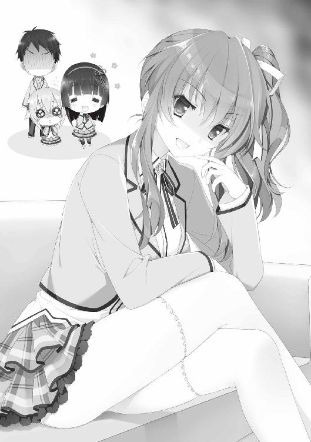
そのタイミングでとりあえず俺は挨拶した。
「えー......男子学部二年の高村集です。昨日から、短歌部の一員になりました」
「......そうか。もし、純真な恋詠をたぶらかすような下衆な輩なら、二週間ほど直立歩行が不可能になる贈答品をくれてやるから覚悟しておけ」
八島先輩はそう言って、湯のみに唇をつけた。
それが脅しではなく本心からの言葉であるということは、先ほどの鋭い眼光からも十二分に感じ取れた。
「ま、そうでない限り恋詠の知人ということは、ボクにとっても知人だ。よろしく頼む」
八島先輩はそう言って、白い右手を差し出す。
「あ、はい、こちらこそ」
ごく自然な流れで、俺も右手を差し出し握り返す......が！
「いいいいいいいいたたあたたたたたたたたたたああああ！」
骨が砕かれんばかりの、体験したことのない圧力が右手を襲う。
「や、八島先輩っ！ 手が、手があああｔｇｙふじこｌｐ；＠：！」
悶絶していると、八島先輩は力を緩めた。
「ふむ。握力も普通だな。恋詠が見込んだ人間ゆえ、なんらかの才があるかと思ったんだが」
八島先輩は事も無げにそう言うと、首を傾げる。
「短歌に握力は関係ありませんよ。大丈夫ですか、高村君？」
俺は粉砕寸前だった手に、ふーふーと息を吹きかけながら、コクリと頷いた。
隣では先ほどと同じように、千紗がガタガタと震えながら、俺に心配そうな視線を注いでいた。
「すまなかったな。許せ、高村集」
反省の色がまったく感じられない口調で言った八島先輩は、テーブルに置かれた茶の、薄緑の水面に視線を落とす。
「で、さっき言ってた〝お願い〟とはなんだ？ 私でよければ力になるが」
「はい」
八島先輩に問われ、恋詠さんはゆっくりとした口調で切り出した。
「部室が欲しいのです。短歌部の」
にこ、と微笑みながら愛らしく小首を傾げる。
「文化棟で、使ってない部室はありませんか？ もし空いている部室があれば、私たちに使わせてもらいたいの」
文化棟というのは女子学部の敷地内にある、文科系部室が集まった四階建ての別棟のことだ。
文化部には手芸部や料理部、茶道部など、女子学部だけで構成された部が多いため、男女構成比率に合わせて女子学部のほうに建てられた――という話を聞いた気がする。
もちろん、ブラスバンド部や美術部など、男女混成で活動している部も存在するので、文化棟に出入りしている男子生徒は、決して少なくはない。
恋詠さんの要請を受けた八島先輩は、両腕を組んでむむ、と唸る。
「部室......か。空いている部室が何部屋かあるのは知っているが、短歌部に供与するとなると話は別だな」
「どういうことですか......？」
「部室供与の件は、ボクの一存では決められない。文化棟を管理している羽月先生に相談してみようか」
八島先輩がそう言うと、俺の傍らにいた千紗が、元気よく挙手する。
「羽月先生、私のクラスの担任なんです！ 私が相談してみましょうか？」
「キミは一年Ｅ組の生徒か。ならば、話を通しやすそうだな。まだ職員室におられるはずなので、今から行ってみよう」
八島先輩の提案に、一同は頷いて同意した。
「え？ 部室が必要......？」
消え入りそうな声でそう言うと、羽月先生はメガネの奥の目を、少しだけ丸くした。
千紗から聞いた話だと、羽月先生はアラサーとのことだったが......童顔ゆえか、無理して制服を着せれば生徒に見えなくもない。図書委員あたりの。
羽月先生との交渉役は、クラスの生徒でもある千紗が担当した。
その後ろに恋詠さんと、八島先輩、さらにオマケで俺という編成だ。
「広さは必要としてないので、空いている部室を使わせてもらえればうれしーなー、と！」
「空いている部屋......ですか」
机の上にあった厚いバインダーに指をかけ、羽月先生は部室情報に関連していると思しき資料を引っ張り出す。
「そうですね......今だと、四階の将棋部部室が空いているみたい。先月三年生が卒業して、今は部員がゼロになってるはずだから」
羽月先生がそう言うと、恋詠さんと千紗は笑みを浮かべて顔を見合わせる。
「鍵のほう、借りられますか？ 生徒会立ち会いのもと、部室のほうを確認してきます」
八島先輩が言うと、羽月先生は引き出しの中から鍵の束を取り出し、その中のひとつを手渡した。
「はい、要返却でよろしくね。それにしても......短歌部ってまだ活動してたのね」
羽月先生の言葉に、千紗が反応する。
「そっかー。羽月先生も確かこの学校の卒業生ですよね？ 先生の在学中にも、短歌部って活動してたんですか？」
「え？ い、いや、私は詳しくは知らないけど......噂には......」
語尾の最後のほうは消え入りそうにか細く、もごもごもご......としか聞こえなかった。
羽月先生も古典の先生らしいが、こんなんで教壇に立てるのかな。男子学部なので羽月先生の授業を受ける機会はないが、頼りない感じは否めない。
「では、行きましょうか」
ともかく鍵は借りたし、予定地も押さえた。
恋詠さんに促され、俺たちは職員室を後にした。
将棋部部室は、文化棟の四階の一番奥まったところにあった。
距離的に、入り口から最も遠い場所にある部室だ。
部室入り口には、かすれかかった文字で書かれた〝将棋部〟のプレートがある。
「三年生が卒業して、部員がいなくなったって言ってましたけど......きっと随分前から使われてなかったんでしょうね」
確かに、部室の周辺は人の気配が絶えて久しい、という感じがする。
「ともあれ、まずは中を見てみましょう。あまりに長い間使われていなかった場合、大掃除する必要があるかもしれませんし」
恋詠さんの言葉に〝そうだな〟と相づちを打ち、鍵を持っていた八島先輩が歩み出る。
「ん......おかしいな。鍵穴に入らない」
八島先輩は銀色の鍵を差し込もうと力を入れるが、鍵は一向に鍵穴に収まらない。
「ち、違う部屋の鍵......とか？」
「いや、ちゃんと将棋部部室と書かれている」
八島先輩はさまざまな角度で鍵を差し込もうとするが、鍵穴に収まる気配はない。
俺は鍵穴に顔を近づけてみた。
「ん？ これ、鍵穴が潰れているみたいですよ」
本来鍵が収まるべき穴が、少しだけ歪んでいる。
鍵穴だけでなく扉自体にも相当ガタがきてるみたいだ。年月の劣化によるものだろうか。
俺が扉に手をかけると、鍵はしっかりとかけられている。
「困りましたね......せっかくの部室が」
不安そうな顔で、恋詠さんが呟く。
が、恋詠さんの言葉を受け――八島先輩が、腕まくりをして扉の前に立つ。
「しょうがない。実力行使といこう」
八島先輩は取っ手に両手をかけると、腰を落として、グッと腕に力を込めた。
「せいッ！」
途端。
ばきーんと何かが砕け散る音が響き、引き戸が右にスライドする。
「す、すごいです、八島先輩！」
「なあに、造作もない」
ある。造作あります。普通の人は鍵を壊せませんよ。
何はともあれ、早速中へ――。
「「「「「あ」」」」」
五つの声が重なった。
俺たち四人と――部屋の中にいた〝見知らぬ女の子〟の声が。
薄暗い部室は、通常の教室の半分ほどの広さ。
その中央に、三十インチほどの液晶モニターが置かれ、仄かな光を放っている。
モニターの前には、大きめのビーズクッションに寝そべった、ジャージ姿の女の子。
突然の闖入者を目にし、ぽかーんと口を開けている。
しばし時が凍りついたが、沈黙を破ったのは、ジャージ少女のほうだった。
「ちょ、ちょっと何よッ、アンタたち!?」
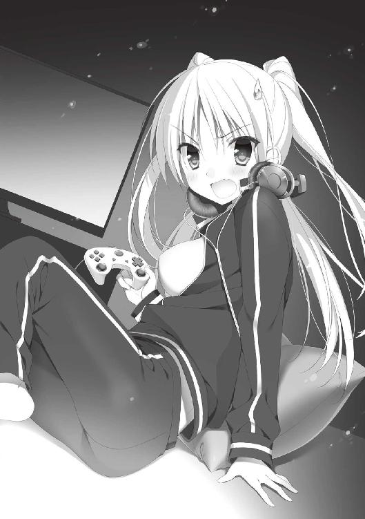
ジャージ少女は被っていたヘッドフォンを外し、俺たちのほうに向き直る。
手には、ゲーム機のコントローラーと思しきものが握られていた。
あっけに取られていた俺たちの中で、最初に反応したのは千紗だった。
「あ、貴方こそ誰ですか！ ここ、将棋部の部室じゃないんですか!?」
千紗の言葉を聞き、ジャージ少女はムッとした表情を浮かべる。
ジャージ少女は、頭の横で髪をふたつくくりにしており、さらに頭の後ろには二本のお下げ。合計四つの尻尾があり〝フォーステール〟とでも呼べばいいのだろうか。
不機嫌な表情をしているものの、よく見ると整った顔立ちだ。
加えて、ジャージの胸部をふたつの山脈がこんもりと押し上げていた。
「で、デカイ......」
「え？ 何がですか高村センパイ？」
「いや、態度が」
すると恋詠さんがスッと前に出て、ジャージ少女に語りかける。
「貴方は......与謝野彩乃さん、ですよね。同じクラスの」
「げっ、恋詠姫じゃん。しかも......鬼の八島先輩までいるし！」
彩乃と呼ばれたジャージ少女は八島先輩の姿を認めると、たじろぐ素振りを見せる。
「与謝野とやら、ここで何をしている」
「え？ ......コンボの練習」
「コンボ？」
「そ。『ウルトラマイティファイター３』のグリズリー・トムの連続技」
「もしかして......それはゲームの話か？」
「そーとも言うかな」
「よし、生徒指導室に連行する」
八島先輩がそう言うと、彩乃はテレビを盾にして身を隠そうとする。
「ちょ、ちょっと待ってよ、アンタたちこそ何よ！ ここ、空き部屋じゃなかったの!?」
室内をよく見ると、ビーズクッションの周りにはうず高く積まれた漫画やゲーム雑誌、ペットボトルやお菓子の袋が散乱している。モニターの前には数台のゲーム機も置かれており、学校内とは思えない光景で、完全に私室といった感じだ。
先ほど〝クラスメイト〟だと言った恋詠さんが、彩乃に話しかける。
「あの、与謝野さん。私たち、この部屋を短歌部の部室として使わせて頂きたくて」
「短歌部？ ここって、将棋部が使ってた部室でしょ？」
「かつては、な。しかし将棋部は部員が全員卒業し、現在は廃部扱いとなっている。ゆえに、短歌部が使うことになったのだ。即刻退去ののち、速やかに明け渡してもらおうか」
有無を言わさぬ口調で八島先輩が言い放つ。
しかし――。
「そ、そうだ......！ なら、あたしが将棋部に入るわよ！ それなら、この部屋を使ってても問題ないっしょ？ 将棋部員なんだしね！」
なんとも強引な論法を彩乃は提示した。
すると、千紗が前に出て、反論を唱えた。
「そんなのズルいですよっ！ 第一、将棋やってないじゃないですか！ ここに置いてあるの、マンガやゲームばっかりだし！」
「ゲ、ゲームは将棋に勝つための駆け引きを養うため。マンガはメンタルトレーニングを兼ねているのよ。何も問題ないわ」
彩乃はフォーステールのひとつをふぁさっ、とかき上げながら、臆面もなく言い放つ。
「問題だらけですよっ！」
千紗は両手を握り締め、上下にぶんぶんと振って不満を露にする。
「じゃ、じゃあ......こーしましょう！ この『ウルトラマイティファイター３』であたしに勝ったら、この部屋を明け渡してあげる。もしアンタたちが負けたら、ここは将棋部の部室として引き続き使わせてもらうというのはどう？ はい決まり！」
彩乃はそう提案したが、八島先輩がそのような取り引きを認めるはずもなく。
「......そもそも校内でゲームに興じることを許すと思うか？ おとなしく縛につけ」
八島先輩はそう言い放つと、ゆらりと一歩を踏み出した。
だが――。
「わかりました！」
千紗が八島先輩と、彩乃の間に割って入る。
「――ふっふっふ、その条件、呑みましょう。私たちが勝ったら、部室を明け渡してもらえるんですよねっ？」
「もっちろん。勝てたらねー」
彩乃はそう言うと、口の端を吊り上げてニンマリと笑う。
一方、恋詠さんは心配そうに千紗の顔を覗き込んだ。
「千紗ちゃん、大丈夫ですか？」
「任せて下さい！ あのゲーム、弟とよく遊んでたんです。私、結構強いんですよ～！」
千紗は控えめなピースサインを出して、モニターの前へと歩み寄る。
「はい、コントローラー。んじゃ、二本先取でいいかな？」
「了解ですっ。恋詠部長や高村センパイと、ここで部活しちゃうんですからね！ 負けるわけにはいきませんっ！」
モニターの前で、コントローラーを構える二人。
その後ろでは、不安そうな顔の恋詠さんと、憮然とした表情の八島先輩が見守っていた。
『キャラクターセレェークト！』
ゲームがスタートすると、二十人ほどの屈強な闘士が並ぶ画面が表示される。
彩乃は熊の如き容姿の屈強な格闘家タイプのキャラ――グリズリー・トム。対する千紗は、くのいちを思わせる小柄な女性キャラ――しぶきを選択した。
ビルの屋上を思わせる闘技場に上空からカメラが寄っていき、〝ラウンド１〟のアナウンスが響く。
「いきますよっ！」
千紗が気合を入れ、試合が始まる。
カチャカチャッ！ とコントローラーの操作音が響き、画面の中の二人のキャラクターが拳を交え合う。
開始直後は一進一退の攻防が続いたが、タイムが残り半分を切ったところで、徐々に千紗の攻撃がヒットし始める。そしてそのまま千紗が押し切る形で、まずは一本先取。
「やった......！」
「すごいです、千紗ちゃん！」
「ほう。ゲームも上手いんだな」
感心する千紗の応援団。
しかし......おかしいな。自信満々で勝負を仕掛けてきた割には、彩乃の動きはいまひとつ精彩を欠いているように見えた。
当の本人も、一本取られたというのにさして焦っている素振りはない。
「もー一度聞くよ。あたしが勝ったら、ここは将棋部部室として引き続き使わせてもらうけど......いいよね？」
「いいですよっ！ でも、勝つのは私ですからっ！」
千紗がそう答えた直後、ラウンド２が開始される。
しかし――。
先ほど演じた一進一退の攻防から一転。
彩乃の操るキャラクターは、くのいちの素早い動きをことごとくブロックし、的確なカウンターを返していく。攻撃の瞬間にレバーを合わせる高等技術だ。
千紗の奮戦もむなしく、二本目はワンサイドゲームの様相を呈し――彩乃の勝利に終わった。
ふふーん、とドヤ顔を披露する彩乃。
千紗は頬をふくらまし、コントローラーを握り締める。
「ま、まだ一対一です！ 次で決めてみせますっ！」
こりゃあ......彩乃、一本目は三味線引いてたな。
二本目の動きを見る限り、腕の差は明らかに思えた。
そしてその不安は、数秒後に現実のものとなった。
「ふぇ......う、うそぉ......」
「にゃーっはっはっはっ！ あたしの勝ちだね！ 約束通り、ここは将棋部の部室として、引き続き使わせてもらうよー」
彩乃は腕を組んで、高笑いを放つ。
笑い声に合わせて、胸のふくらみが豪快に上下している。
「ご、ごめんなさい恋詠部長、高村センパイ......わ、私のせいで......ふぇ......」
千紗は叱られた子犬のように縮こまり、涙目一歩手前だ。
うーん、約束してしまったから仕方がない。が、このまま引き下がるのは......。
八島先輩に力技で解決してもらうのも、何か後味悪いし。
「............」
俺は先ほど、彩乃が告げた勝利条件を思い返していた。
そうだ。まだ勝負は終わってない。
俺は千紗の手から離れたコントローラーを拾い上げ、モニターの前に座った。
「じゃあ、次は俺の番でいい？」
「え？ 何言ってるのよ。この勝負、あたしの勝ちでしょ」
彩乃はあからさまに不満を口にする。
「さっき、〝アンタたち〟が負けたら、って言ったよな。ということは、千紗ちゃんだけじゃなく俺も含まれる。勝利条件を満たすには、俺たち全員に勝たなきゃいけないんじゃない？」
「にゃっ......!?」
「ついでに部室を明け渡す条件は〝あたしに勝ったら〟と言ったよな。回数は指定してないから、俺たちの中の誰かが一回でも勝てば、条件は満たされるということになる」
「き、詭弁よ、詭弁！」
強引さでは君も大概なものだろう、と思ったが、あえて口には出さなかった。
「ふぇ......た、高村せんぱぁい......」
俺は隣で小さくなっている千紗に笑いかけた。
「まあ、やってみるよ」
後ろからは、恋詠さんと八島先輩からも声援が飛ぶ。
「ゲームのことはよくわかりませんが......高村君、頑張って下さいね！」
「うむ、負けたらリアルで即死コンボを喰らわせてやるからな、頑張れ」
一部、声援には聞こえない発言もあったが、とりあえずゲームスタート。
俺はカーソルを、猟師っぽい格好をしたキャラクターに合わせる。
「ほう？ デスマタギ・ジョーを選ぶとは通ね。だけど、ジョーは弱キャラ筆頭。対戦ダイアグラムも、あたしのほうが圧倒的に有利なんだけど」
「これでいいよ」
そう。確かにジョーはこのゲームにおいて強いキャラクターではない。
しかし、同じシステムの上で戦う限り、絶対に勝てないということもない。
現に――。
「う、うそ......っ！」
一本目はジョーの突進技が軽やかに決まり、彩乃のグリズリー・トムの巨体が宙を舞った。
さっき、彩乃は千紗との試合で、一本目は手を抜いて様子を見ていたようだが......俺はそういう無駄な勝負は好きじゃない。勝てる時に勝つ。
「すごいすごい！ 高村センパイ、強いですっ！」
さっきまでしょんぼりの極致だった千紗もすっかり復活し、俺に声援を送っている。
一方の彩乃は、肩をいからせて、ぐぬぬと俺を睨みつける。
「こんのぉ......ボンヤリしてそうで、えげつない攻めしてくれたわねッ」
次は負けない！ とばかりに、彩乃はラウンド２に挑む。
ラウンド１以上の気迫を見せる彩乃だったが、生憎、対戦格闘ゲームは気合で大きく戦況が変わることはない。指先に馴染ませたコンボの技術と、単調にならない攻め。そして相手の技に対する反撃のポイントを逃さぬこと。
これらを合わせた総合力が、格闘ゲームの強さを決めるのだ。
「このっ！ たりゃっ！」
先ほどまで冷静にプレイしていた彩乃だったが、余裕がなくなったのか――画面の中のキャラクターに合わせて、身体が大きく動いている。
そして、彼女が繰り出すオーバーアクションは、時折俺の身体への接触プレイとなって、試合を妨害した。
「ちょ、ちょっと......」
「なによっ！」
どうやら本人はわざとではなく、無意識に身体が動いているらしい。
しかし、問題は――。
むにょん、と柔らかな物体が腕に触れる。
う......！
ジャージの前をけしからんほどに盛り上げていた、あのふくらみが......。
やべっ。気付けば結構体力減ってる。
いかんいかん。俺は気を乱さぬようにゲームに集中し、着実にダメージを与えていく。
「くらえっ、グリズリー・ボム！」
業を煮やした彩乃が、超必殺技の吸い込み技を放った。
狙い通り。俺は焦らず、回避コマンドから背後を取ると、デスマタギショットガンを炸裂させた。
「ひぃっ！」
彩乃の悲鳴が響く。
そして――。
画面の中には、苦みばしった顔で勝利のポーズを決める、デスマタギ・ジョーの姿があった。
「うぞおおおおおおおおおおおおおおおおおっ！」
彩乃は四本のお下げを振り回し、頭を抱えた。
「ま、まさか......まさか......あたしがこんなあっさり負けるなんて......」
先ほどまで見せていた自信満々の態度はどこへやら。
床をゴロゴロと転がりながら、彩乃は打ちのめされていた。
「あ、アンタ何者よ！ 『ウルマイ３』のネットランキングじゃ、あたしカテゴリーＡに入ってんのよ！ それを......こんなあっさり......」
釈然としない口調で、彩乃は俺を睨みつける。
こりゃ説明しておいたほうがいいか。
「あのさ、〝鬼ザクラ〟ってプレイヤー、知ってる？」
「し、知ってるも何も、『ウルマイ３』のネット大会優勝者、ランクＳＳＳの女性プレイヤーじゃん！ これやってる人間なら、誰だって知ってるわよ」
「それな、俺のねーちゃんなんだよ」
「......へ？」
「つまり、俺はいつもねーちゃんに付き合わされて、スパーリング相手をさせられてたんだ。そうしたら、自然と強くなっちまって......」
ネットランキングにはエントリーしてなかったが、俺の腕前をねーちゃんは〝カテゴリーＳＳくらいじゃないか〟って言ってた。つまり、彩乃より数段上、ということだ。
「そ、そんにゃあ......なんなのよ、この展開......」
完敗を悟ったのか、彩乃はガクリとうな垂れる。
「でも、あの鬼ザクラさんの弟じゃ、負けてもしょうがないか......」
涙目の上目遣いで俺を睨んでくる。牙を剥いていた猛獣が、すねた猫に変わったような感じだった。
「やりましたね、高村君」
「はう......高村センパイ、すごすぎます......」
恋詠さんと千紗の短歌部メンバーは、俺の勝利を笑顔で讃えてくれる。
が、しかし。
「そ、そうだ！ まだ一対一！ これでタイよ、勝負はついてなーい！」
彩乃は悪あがきともいえる反論をする。
「そんなのずるいです！ 素直に負けを認めて下さい！」
「そっちこそ、最初にあっさり負けたくせにっ！」
千紗と彩乃はおでこ同士がくっつきそうな距離で、ぐぬぬと牽制し合う。
その時。
「皆、ちょっと待ってくれ」
八島先輩は、通りのいい声を響かせる。
「何か大切なことを忘れていた気がして、調べてみたんだが」
そう言うと、八島先輩は生徒手帳の中ほどを開き、俺たちへと提示した。
書かれている文面と同じものを、八島先輩が言葉にする。
「弥勒院学園・部活動条項二ノ八 部室を使用するには、五人以上の部員を必要とする」
五人......以上？
「だ、だとすると......短歌部は俺を含めて三人......」
「......将棋部はあたし一人だし」
「どちらも、部室を使う資格がない」
俺が言うと、八島先輩が深いため息をつく。
「すっかり失念していた。そうだ、確かにこのような条項があった」
八島先輩の言葉を聞いて、千紗が悲しそうな表情を見せる。
「そ、そんなぁ......じゃあ、短歌部の部室......恋詠部長や高村センパイと過ごせるお部屋は、獲得できないんですかあ？」
「泣きたいのはこっちよ。せっかく、こっそりテレビとゲームを持ち込んで、快適空間を作ったっていうのに......」
千紗に続き、彩乃もうな垂れる。
だが、一人だけ――にこやかな表情を浮かべ、落胆とは無縁の人間がいた。
「それなら、問題はありませんわ」
部室獲得条件を聞いたにもかかわらず、恋詠さんは微笑みを湛えていた。
「問題ありませんと言ってもな......短歌部も将棋部も、部室を得るのは無理だぞ」
八島先輩の言葉に、恋詠さんは首を左右に振った後――この部屋にいた人間、一人一人の顔を、順番に見ていった。
「私と千紗ちゃん、高村君に加え、与謝野さんと翠星が短歌部に入ってくれれば......はい、これで五人！ 部として活動できますよね」
その発言を聞き、恋詠さん以外の人間はあっけに取られた表情を浮かべる。
「ちょ、ちょっと待ちなさいよ！ どうしてあたしが短歌部なんかに入らなくちゃいけないのよっ」
「短歌部に入っていただければ、これまで通り部室を使ってよろしいのですよ？」
「え......？ そうなの？」
「ゲームも、情緒を養うために役に立つかもしれませんし、ね」
恋詠さんは、交換条件を出したのだ。これまで通りに部室でゲームに興じていいから、その代償として短歌部に籍を置くように――と。
恋詠さんが出した提案は検討に値するものだったのか、彩乃は腕組みをしてうーんうーんと悩み出す。
確か、短歌部には〝片想いをしていること〟が入部条件になっていたと思うのだが......今回は特例措置ということなのだろうか。
しかし当然のように八島先輩が反論する。
「わ、私は無理だぞ、生徒会の仕事もあるし......！」
「......翠星、そんな寂しいこと言わないで？ 困っている学生を助けるのも、生徒会の役目と聞きました」
恋詠さんは八島先輩の顔を覗き込み、訴えかける。
「そ、それは確かにそうだが......」
「千紗ちゃんも掛け持ちで頑張ってくれてるんですよ。翠星も困っている私たちのために、一肌脱いで下さいませんか？」
「う......」
「それに、短歌は女心を豊かにする素敵な趣味。翠星、お部屋にはたくさん飾ってあるでしょう？ あの――」
「うああああああああああっ！ ま、待て恋詠！ わ、わかった、わかったから！ それ以上言うなっ！」
八島先輩は顔を紅潮させ、恋詠さんの肩をガクガクと揺さぶった。
恋詠さんの顔は笑顔ながらも、その目がまたしても笑っていなかったことに、俺は気がついた。
きっと何か八島先輩の弱みを握っているのだろう......。
「さ、どうしますかお二方？ 短歌部は今、新入部員を熱烈に歓迎しておりますよ」
彩乃と八島先輩の喉が、同時にゴクリと鳴る。
そして、次の瞬間――二人は観念したように、こっくりと頷いた。
二日前まで、俺はただの〝高村集〟だった。
しかし短歌部兼片想い部所属という、よくわからない状況とともに、俺の日常はこれまでとまったく異なり始めていた。
今朝は遅刻ギリギリで校門を潜り、駐輪場から欠伸混じりで教室へと向かった。
そこまでは、これまで通りの日常。
だが――。
教室に入った瞬間、俺の周囲に瞬く間に人垣が作られた。
十五人はいるだろうか。むさ苦しい肉壁に囲まれ、息苦しくなる。
漏れなく俺に向かって殺気が注がれていた。
「おい高村ッ！ アレはどういうことだ!?」
「昨日、女子学部の文化棟を、恋詠姫と千紗ちゃん、八島先輩と一緒に歩いてたそうだな！」
昨日の一連の流れを目撃されていたのか。
「確かに一緒にいたけど......つーか恋詠〝姫〟って呼び方はなんだ？」
そういえば昨日、彩乃も〝恋詠姫〟とか呼んでたな。
「弥勒院学園の最強アイドル藤原恋詠に決まってるだろ！」
「煌めく黒髪、気品に溢れる物腰、地獄の閻魔すら癒やすスマイル、しかも名だたる藤原コンツェルンの一人娘！」
「三百六十度隙無しのヒロイン、人は彼女のことを、敬虔の念を込めて呼ぶ――恋詠姫と！」
周囲の肉壁が暑苦しく語る。
「さらに三田千紗ちゃんは一年生期待のホープ。八島先輩は『三年連続竹刀でシバかれたい女子』ナンバーワンの才媛だぞ！」
千紗はわかるとして、八島先輩の評価はなんなんだ。
ともかく、俺が知らないだけで、三人とも有名人だったらしい。
「俺なんて、死ぬ前に一度でいいから恋詠姫とお話ししたいって、夢ノートに書いてんだぞ！」
「千紗ちゃんと八島先輩までゲットワイルドしやがってコノヤロウ！」
「さあ吐け、どうやってあのアイドルたちとお近づきになったんだ!?」
「俺たちにも紹介しろ！」
しかしそのへんの経緯を説明するのは激しく面倒くさいし、片想い部は非公認の部活なのだから、隠しておくべきだろう。
「えーと......」
俺がどうしたものかと逡巡していると、いきなり背後から腕を引っ張られ、肉壁から引きずり出される。
「望っ？」
「友よ、あの時の借りを返そう――逃げるぞ、集」
そう言って、望は俺の手を取り、猛然とダッシュし始めた。
背後から追いかけてくる肉壁の怒声を聞きながら、俺も全力で教室から逃げ出した。
「俺が学校休んでる間に、何か楽しそうなことになってるじゃないか」
特別教室棟まで逃げ、ようやく追撃を撒くと、興味津々の眼差しで望が聞いてくる。
「......ただなりゆきで短歌部っていう部活に入っただけなんだけどな」
こうなったのも元はと言えばおまえが原因なのだが。
「ところで望も藤原さんのこと知ってるのか？」
「女子学部の日本人形みたいな子だろ？ ありゃ確かに人気ありそうだ。まあ俺の片想いの相手には敵わないけど......他のメンツもみんな人気のある子たちだから、しばらく身辺には気をつけたほうがいいぞ」
なるほど。いくらこの学校で男女交際が校則で禁止だといっても、当たり前だが恋愛することそのものを禁止にできるわけじゃない。
言うならばあいつらは――恋詠さんたちに片想いをしているわけか。
「ま、集にも春が来るといいな。恋はいいものだぞ！」
望は満面の笑みで俺の肩をぽんぽんと叩く。
恋愛か......俺にはまだ縁がなさそうだけど......と考えたところでホームルームの開始を告げるチャイムが鳴り、俺と望はこっぴどく叱られるハメになった。
放課後。
昨日解散する時に『次は部室のお掃除をしましょう』と恋詠さんの提案があった。
ということで、ジャージ姿で部室に向かった。
扉は昨日、八島先輩が力ずくで破壊して以降、鍵がかからなくなっている。
俺は軽くノックした後、ゆっくりと引き戸を開けた。
室内にいたのは一人。
腹ばいでモニターに向かい、コントローラーを握り締めた彩乃の姿。ヘッドホンを装着し、今日はレースゲームに興じていた。
俺の気配に気付くと、ポーズを押して視線をこちらに向ける。
「あ、鬼ザクラの弟」
「高村集って名前があるんだけど」
「あー、はいはい高村。あたしのことは彩乃でいーよ」
フォーステールを揺らしながら、彩乃は抑揚なく言い放つ。
「ん？ なんでジャージ着てんの？ あたしのマネ？」
「昨日、恋詠さんが言ってただろ、部室の掃除するって。そういえば彩乃は昨日もジャージだったな」
「窮屈だから着てるだけ。高校入ってから、胸がやたらと育っちゃってさあ。制服だと前ボタンが苦しいの」
彩乃は事も無げにそう言うと、再びモニターに視線を移し、ゲームを再開した。
なるほど、確かにこいつの胸は相当なものだ。今も腹ばいになった部分がクッションに押しつけられ、零れて横にはみ出している。
「......やはりデカい......」
「ん？ 何か言った？」
「いや、恋詠さんはまだ来てないんだな」
「ホームルーム終わってないのかも。ウチのクラスの担任、余計なお小言多いからにゃー」
ん？ 彩乃と恋詠さんは同じクラスだと昨日言ってたような。
「どうして彩乃はココにいるんだ？」
「あたし午後の授業から部室にいたからねぇ」
なるほど、サボりか。
「そもそもなんで学校でゲームやってるんだ？ 家に帰ってやれば？」
俺が疑問を呈すと、彩乃は腹ばい状態からゴロリと半身を起こす。
同時に、ジャージの前のふくらみが、たゆんと弾んだ。
「あたしの家、厳しくてさあ。家じゃゲーム禁止なんだよねえ。だからガッコで環境整えて、こうして研鑽にいそしんでいるってわけ」
「家が厳しいのに、授業とかサボって大丈夫なのか」
彩乃は唇の端だけを上げてにっふー、と笑う。
「あたし、弥勒院に入学して以来、学年トップ３から落ちたことないんだよ」
マジかよ？ と呟くと、彩乃もマジマジ、と首を縦に振る。
「まー、成績が落ちない限り、授業を欠席あそばしても大丈夫ってわけ」
画面の中のクルマがカーブに差しかかり、彩乃も少し首を斜めにする。
「授業サボってまでゲームしてんのに、成績が落ちないってすごいな」
「時間をかければ必ずリターンが来る、ってわけじゃないからね。集中力と理解力を、どれだけマックスに保てるか......よっし！ レコード更新！」
彩乃が操作するクルマはゴールラインを通過し、画面にはニューレコードの文字が光り、タイムが表示されている。俺は素直に感心した。
「上手いのは格ゲーだけじゃないんだな」
「ゲームならなんでもやるよー。シューティングもやるしＦＰＳも音ゲーも、ギャルゲもエロゲも歴史シミュレーションだってウェルカム」
確かにテレビの横に乱雑に積まれているゲームソフトの山を見ると、ジャンルはバラバラで一貫性がない。相当な雑食であるとわかる。
「それより高村、昨日はノリで入れられちゃったけど......短歌部って一体何？ 恋詠姫を囲んで、夢ポエムみたいな歌を詠む集まりなわけ？」
「......いや、実は俺もよくわからないんだ」
「よくわからんって......それでなんで短歌部にいるのよ」
「俺も二日前に入ったばかりだからなあ......」
「まあいいや、んじゃ、誰もいないし......とりあえず、しよっか？」
寝転がったまま、彩乃が挑発的な笑みを漏らす。
勝気そうな表情の印象が強いが、整った目鼻立ちは誰も文句のつけようがない、紛れもなく美少女だ。おまけに緩んだ胸元から、チラリと覗く白い肌。
これで「しよっか」とか言われると、変な想像が......。
「あー、なんかエッチなこと考えてない？ 対戦よ対戦。昨日の仇を取るんだから」
「ば、バカ、わかってるよ」
と慌てていると、かららら、と乾いた音を立てて、入り口からひょっこり顔が出た。
ふわりと揺れる漆黒の艶髪――藤原恋詠さんだ。
「あら、もういらしてたのですね」
制服姿の恋詠さんは俺と彩乃の姿を認めると、ちょこんと会釈する。
手にはバケツや箒、モップを持っており、準備は万端という感じ。
「千紗ちゃんはテニス部の助っ人、翠星は生徒会で今日は抜けられないそうです。そんなわけで、部室の掃除は私たちだけでやりましょう。よろしくお願いしますね、高村君、与謝野さん」
寝そべっていた彩乃の顔が曇る。
「えー、あたしもやるの～？」
「はい。与謝野さんも短歌部の一員ですからね」
恋詠さんは彩乃に近づくと、手にしていたフキンを渡した。
「綺麗にしておくと、気持ちも晴れやか。きっとゲームも捗りますよ」
正面から輝くような笑顔を向けられ、彩乃は一瞬たじろぎの表情を浮かべる。
「う......何よその謎理論。ったく、わかったわよ」
彩乃は文句を言いながらも、のそのそと起き上がる。
「与謝野さんは窓をお願いしますね」
恋詠さんは彩乃に指示を出しつつ、鞄から取り出した割烹着と三角巾を手早く身につける。髪型のせいもあって、古きよき日本のお母さんみたいだ。
「これ、家でも使ってる割烹着なんです」
「恋詠姫ってものすごいお嬢じゃなかったっけ？ 家事とかってメイドさんがやるんじゃないの？」
彩乃が首を傾げた。
「いいえ。いつか嫁ぐ時のため、家事全般は私がしています」
恋詠さんは笑顔を浮かべる。
筋金入りのお嬢様というのは、こうも隙がない存在なのか。
「で、俺は何をやればいいかな？」
「高村君は床の拭き掃除を。私が箒で掃いた場所を、モップで乾拭きして下さると助かります」
「わかった」
俺がモップを受け取ると、恋詠さんは手際よく床を掃き始め、ゴミを集めていく。
そのテキパキとした動きから、家事の腕前を容易に推し量ることができた。
俺も遅れを取らぬように黙々と床を拭いていく。
床に散乱していた埃が瞬く間に消え去り、部室は在りし日の姿を徐々に取り戻していった。
恋詠さんは床を掃くだけでなく、彩乃の許可を取りながらゲーム機や攻略本などを手早くまとめ、一箇所に片付けていく。テレビを中心にして広がっていたカオスな空間は、秩序ある世界へと変貌していった。
掃除を開始して一時間強。
そこには――。
昨日と同じ場所とは思えないほど、整然と美化された部室が姿を現した。
「あれ......？ こんなに広かったっけ？」
目を丸くしながら、彩乃が室内を見回す。
「ええ。元から。お二人とも、ご協力ありがとうございました」
三角巾を取りながら、恋詠さんはぺこりと頭を下げる。
そりゃあ、部長自ら甲斐甲斐しく動かれたら、俺たちも頑張るより他はない。
「今、お茶を入れますね。お二人とも、椅子にかけてお待ち下さい」
いつの間に持ち込んだのか、恋詠さんは電子ポットのコンセントを差し込んだ。
数分もしないうちに、部室中央にあるテーブルに、三つの湯のみが置かれた。
湯のみも恋詠さんが用意したものだろうか。薄い紅色で彩られた、品のいい焼き物だ。
彩乃は湯のみを手に取ると、くるくると回しながら口を開いた。
「あのさ、昨日聞きそびれたんだけど。具体的に、短歌部って何をする部なわけ？」
「難しいことはありませんよ。短歌を詠んで、恋をして、恋を応援する部活です」
「は？」
彩乃の頭上に、いくつもの〝？〟マークが点滅するのが見える。
確かにその説明じゃ、混乱するのも無理はない。
「今日はお掃除を頑張りましたから、本格的な活動は明日からですね。お二人とも、引き続きよろしくお願いします」
恋詠さんの言葉に、俺は軽く頷く。
しかし――俺には引っかかることがひとつ。
例の、百日参りの件だ。
黄色い手紙を結び続けていた人物が俺だと、未だに恋詠さんは勘違いしているはずなのだ。
そもそも、俺が短歌部に誘われたのは、俺が誰かに〝片想い〟していると思われたから。そして、その片想いを応援するため。
だが、実際のところ、俺には片想いしている相手などいないのだ。
正直に話したほうがいいとは思うんだけど――どうにもそのタイミングがない。
「あ、このお茶うんまい。高いお茶？ それとも恋詠姫の煎れ方が上手いのかな？」
ぱあっと彩乃の顔が明るくなり、恋詠さんが笑顔で応じる。
俺も一口頂いてみると......確かに美味い。お茶って、こんなにまろやかな味がしたっけ。
そんな俺たちを、恋詠さんはにこにこ笑いながら見ていた。
次の日の放課後は、五人のフルメンバーが部室に集合した。
今日は恋詠さんが短歌について教えてくれるという。
しかし、恋詠さんの講座を聞いているのは俺と千紗だけだ。
八島先輩は生徒会の書類を部室に持ち込んで、何やら整理に追われている。
彩乃は離れたところに座ってゲーム雑誌をパラパラとめくっていた。
「――厳密には文字数に縛られなくとも構いません。五、七、五、七、七に近い文字数の中に、語りたい物語が収まるのでしたら、自由に詠んで大丈夫なんですよ」
千紗はメモを取りながら、恋詠さんの言葉にうんうんと頷く。
少なくとも彼女は、短歌そのものにも興味があるようだ。
「短歌――和歌に最も多いのは恋の歌です。百人一首の中にも、四十三首登場します。恋の歌は昔からテーマとして最もポピュラーですが、日常生活や季節から題材を拾うことも多いですね」
恋詠さんは短歌のイロハを説いていく。
普段、古典の授業などはマッハで眠くなってしまうのが常なのだが、恋詠さんの言葉は溶け込むように頭に入ってくる。先生に向いてるんじゃないだろうか。
「では、ここで簡単な遊びを。今日一日を振り返って、短歌を作ってみましょう」
それではどうぞ高村君、と言わんばかりに、恋詠さんの視線が俺を促す。
「今日一日ったって......特に何もなかったけどなあ」
「遊びと思って気楽にどうぞ」
気楽と言われても......今まで脳みそをそんなことに使ったことないからな......。
恋詠さんはただニコニコ顔を浮かべ、俺の言葉を待っている。
仕方ない。
「ええと......〝授業中 今日もひたすら 眠かった〟......」
そう口にした直後、彩乃が、ぷっと噴き出した。
無関心なフリして聞き耳を立てていたらしい。
「わ、わかりやすくていいと思いますっ、高村センパイ！」
隣にいた千紗がフォローしてくれるが、情緒に欠けることくらい、自分でもよくわかっている。
「では高村君はどうして眠かったのか......その理由を教えてくれますか？」
「録画してた海外ドラマを観てて、夜更かしして......」
「なら......そうですね、下の句は〝真昼も続く 異国の夢ぞ〟というのはいかがでしょうか」
恋詠さんが詠んだ下の句をくっつけると――〝授業中 今日もひたすら 眠かった 真昼も続く 異国の夢ぞ〟となる。
「――なるほど。確かに、俺の今日一日を表現しつつ、なんとなくそれっぽくなってる......」
俺が感心して言うと、脇で書類整理をしていた八島先輩も口を開く。
「恋や季節の要素は皆無だが、キミらしくていい歌じゃないか」
「どうですか？ そんなに悩まずに一句詠めましたね」
「......下の句は恋詠さん頼みだったけど......難しくない気はしてきた」
俺の言葉に、恋詠さんは柔らかな笑みを返した。
なるほど、こういうのも悪くないかもしれない。
勉強だといまいちやる気も起きないけど、自分の日常や思ったことをこうやって形にするのは、少し新鮮だ。
そんなことを、考えてた時。
どだだだだ、と廊下を走る音が響いた後、短歌部の部室ドアがいきなり横に開いた。
「ここだったか、ダーティーウルフ高村集！ ひゃっほおおおおお！」
一同の視線が注がれる中、入り口に姿を現したのは、顔を紅潮させた望であった。
「......誰だキミは？」
ノックもせずに現れた望に向かい、八島先輩が鋭い視線を投げる。
望は何やら興奮しており、鼻息を吹き出しながら目の焦点も虚ろなヘブン状態だった。
何しに来たんだと思いつつ、慌てて俺は望の紹介を代行した。
「俺のクラスメイトの瀬戸望。外見はともかく、中身は残念な奴です」
「あっはい、外見はともかく中身は残念な瀬戸望です！」
望は喜悦の笑みを浮かべて言った。
「そんなことより聞いてくれ集！ ななななんと！ 『魔法幼女 マジキャルほののん』の等身大フィギュア当選のメールが届いていたのだ！ イヤッフォォォ―――！」
望は俺の両肩を掴んで、がくんがくんと前後に振った。
俺はそのマジキャルなんとかには馴染みがないのだが......。
「等身大ほののんは販売促進用に作られた非売品、イベントで展示された後、限定一名にプレゼントされる予定だったのだ。世界にひとつだけのウルトラスーパービッグマキシムグレートストロングレアものなんだ！」
「お前の喜びはわかった。しかしそんなテンションで俺に伝える必要があるのか」
そう返すと、望は満面の笑みを浮かべてウインクをした。
「これもお前が俺の代わりに百日参りを完遂してくれたお陰じゃないか！」
「......え？」
俺はぱちくりと、目をしばたたかせた。
「俺はほののん等身大フィギュアを手に入れるため、百日参りをしてたんだ！」
「お前が片想いしてるのは人間じゃなかったのかよ!?」
「相手が人間じゃなければダメって決まりはないしィ～！」
望は前髪を指でクルクル巻きながらギャル風に言い放つ。うざい。
「お台場のメディアーヌで展示してあるのを見た時からもう一目惚れでさ！ それから当選を祈願して、雨の日も風の日も雪の日も百日参り！ いや～苦労したな、最終日は集に頼んじまったけどさ！」
腕を組みながらうんうんと頷く望。
一方恋詠さんは、テンションの高い闖入者を見ながら、同調するように頷いて笑顔を送る。
「よかったですね、瀬戸さん」
「まったくですよ！ いやあ、宿願の樹サイコー！ んじゃまた！」
台風が過ぎ去るが如く望は去っていった。
「おい、なんだったんだアイツは......」
望が去った短歌部入り口を見ながら、八島先輩が呟く。
千紗も彩乃もあっけに取られた顔をしていた。
ニコニコと微笑んでいるのは、恋詠さんだけである。
そうだ――。
その時俺は気がついた。
恋詠さんに話さなきゃ。
俺が宿願の樹に結ぼうとしていた手紙は、実は俺のものではなく......望のものだったということを。俺は、誰かに片想いをしているわけじゃないってことを。
「......あのさ、恋詠さん」
「はい、なんでしょう」
今まで黙っていたことが知れたら、ものすごく怒られるかもしれない......と躊躇しながらも、俺は口を開いた。
「実は......あの日俺が宿願の樹に結ぼうとしていた手紙、あれはさっきの......望から頼まれたものなんだ」
「はい、知ってましたよ」
「え？」
予想だにしない返答に、俺の動きが固まる。
「瀬戸さんが百日参りにいらしていることは存じておりました。黄色い手紙を結び続けているところを、何度もお見かけしております」
「じゃ、じゃあ、最初からあの手紙は俺のものじゃないって知ってたの？」
「ええっ、そうなんですか!?」
千紗も目を丸くして驚いている。
「でも、入部条件は〝片想いをしていること〟だったよね？ 望のことを知っていたんなら......俺が片想いなんてしてないことも......」
そう質問すると、恋詠さんは胸の前で両手を組み、静かに語り出した。
「......確かに私は、入部条件に〝片想いしていること〟を挙げました。しかし、片想い部の一番大切な役目は、この学校で紡がれていく片想いたちに力を貸してあげること」
恋詠さんはそこで言葉を区切ると、俺の顔を正面から見つめ返す。
「貴方は、友人の片想いを支えてあげることができる人――そう見込んだので、片想い部にお誘いしたのです」
「そ、そうだったんですね！ なるほどなるほど！ ......高村センパイは片想いしてたわけじゃなかった、と......」
千紗はなぜかほっとするように俺を見ている。
「望の手紙の内容も――恋詠さんは知ってた？」
俺が聞くと、恋詠さんは少し伏せ目がちに微笑んだ。
「百日参りの中身を見るということは、礼を欠いた行いに思われるかもしれません。しかし、百日の月日を重ねてまで叶えたいその想い――誰かがきっかけを作ることで形にできるのなら――私たちが宿願の樹の代理を務めるのも、やぶさかではないと思うのです」
そこまで聞いた時、俺の中にひとつの推測――いや、確信に近い考えが浮かんだ。
「もしかして、百日参りってのは......片想い部に心の声を伝えるために用意された儀式だったのか？」
恋詠さんは笑顔をもって応じた。
とすると......片想い部の役割、具体的な行動とは......宿願の樹に成り代わり、百日参りの片想いを叶える手助けをするということなのか。
「ちょ、ちょっと待て！ 先ほどから言ってる〝片想い部〟って一体なんだ!?」
そう声を荒げたのは、八島先輩。
まずい、そうだった......！ 驚きのあまりつい普通に口に出してしまったが、八島先輩と彩乃は、まだ短歌部の裏の顔を知らないのだ。
「それは......かねてから噂されている異性交遊を促進する集まりではないだろうな......？ もしそうなら、生徒会としてそのような部の存続を許すわけには......」
しかし恋詠さんは慌てる様子もなく、やんわりとした口調で応じる。
「その通り。片想い部は短歌部の真の姿であり、片想いを応援する部、なのです」
「そ、そうなのか!? ぼ、ボクは短歌部の正体を知らず、頭数合わせとはいえ入部届けを!?」
「誰かに片想いすること、想いを伝えることそのものは校則違反ではないでしょう？ もし想いが実ったとしても、学園を卒業してからお付き合いすれば、校則にも反してませんし、問題ありませんよね」
「そ、そんな都合のいい解釈があるか！」
恋詠さんは狼狽える八島先輩に近づくと、その手をそっと握った。
「人が一番輝くのは、誰かを好きになっている時。私が翠星を短歌部に誘った理由も、そこにあります。翠星には素敵な恋をしてほしい、誰かを好きになって、もっと輝いてほしいなって」
「ひ、人を好きになるとか......！ そ、そういうのはまだ早い！」
八島先輩はそう言うと、恋詠さんの手を振り払い、書類の前に戻る。
「ぼ、ボクたちには学生としての本分があってだな、恋とか変とか愛とか受けとか攻めとかそういうのは......」
八島先輩は顔を赤らめつつ、シャーペンの後ろをカチカチカチと連打する。
みるみる伸びていくシャーペンの針。
ひとつが机の上に落ちると、新しい芯がすぐに伸びてくる。
......明らかに動揺している。
恋詠さんは続いて、彩乃のほうに向き直った。
「与謝野さんも、同じ理由ですよ」
「へ？ あたし？」
突如話を振られて、彩乃がフォーステールを揺らす。
「与謝野さんにも素敵な恋との出会いが、きっと待ってると思うんです」
「す、素敵な恋って......そ、そんなこと真顔で言われても。あたしはホラ、乙女ゲーで間に合ってるから」
「これのことですね」
そう言うと、恋詠さんは積んであったゲームソフトの山の中から、『鬼のプリンスさま☆』と書かれたゲームのパッケージを掘り出した。俺はやったことはないが、女性向けの恋愛ゲームでアニメ化もした人気タイトルだ。
「これは男女の恋愛を取り扱ったゲームですね。お好きなんですか？」
「まあ、人気タイトルはほとんど押さえているし......それは全ルートクリアしたかなー」
「ということは、与謝野さんは恋愛のエキスパートなんですね」
恋詠さんがにっこり笑うと、彩乃は頭に生えた四つの尻尾を振り乱しながら否定する。
「ちょ！ あくまでゲームよ、ゲーム!?」
「いいえ、相通じるものはきっとあると思います。与謝野さんは、片想い部のよきアドバイザーになってもらえるのではないでしょうか」
完璧なまでの笑顔が、彩乃に向けられる。
「そ、そんな期待に満ちた笑顔であたしを見られても困るんだけど!?」
俺だけでなく、八島先輩も彩乃も、それぞれ恋詠さんなりに意図や目的があって、片想い部に誘われていたらしい。
「ど、どうする八島翠星。片想いだけでは交際とは呼べないし校則違反にならない......しかしいずれ異性交遊に繋がって校則違反の芽となる可能性も......ならばボクがあえて短歌部に身を置き事前に対処するという選択肢も......くうううう......致し方あるまい......」
八島先輩は相変わらず書類の山の前で煩悶していたが、ふと何かに気付いた様子で恋詠さんに話しかける。
「――そういえば、あの瀬戸という男子が言ってたお台場のメディアーヌって、確か藤原グループが運営しているショッピングモールだったな......？」
「そうですね、ふふ」
恋詠さんは悪戯っぽく笑うと、少しだけ首を傾けた。
「何はともあれ、よかったですね。あの方の百日参りが実って」
恋詠さんのその言葉は、俺に向けられたものだった。
――片想いを応援し、叶える部......。
まさか、あれは、恋詠さんが、望の想いを叶えたってことなのか？
そうして、今日の活動が終わったのが、十八時。
彩乃はもう少し残って活動（という名のゲーム）をすると告げ、八島先輩は書類の束を抱えて生徒会室に戻っていった。
俺と恋詠さん、千紗の三人が文化棟から出ると、まだ周囲は明るかった。
春も終わりに近づいていて、だんだんと日が延びてきたんだなあと実感する。
「では、また明日。ごきげんよう」
恋詠さんの挨拶で、俺たちは解散する。
他の学校ならここで一緒に下校――という流れになるのだろうが、我が校では異性と一緒の登下校すら固く禁止されている。
何しろ校外に出る時も、男子学部女子学部、それぞれの門から出入りしなくてはならないのだ。
校外でこっそり待ち合わせすればバレないだろ、と油断するのは甘い。
風紀委員が放課後に校外周辺を見回ることもあり、見つかれば校庭の掲示板に〝この者たちを校則違反で厳重注意とす〟と、男女ペアで名前が張り出されてしまう光景を、俺は何回か見たことがある。
男子学部用の駐輪場に着くと、止めてあったクロスバイクからチェーンを外す。校門まで押していき、公道に出た瞬間にサドルにまたがった。
学校から家までは自転車で二十分ほどだ。
人通りの多い自由が丘駅前を経て、多摩川沿いのサイクリングロードへ。川を遡るように疾走していく。
ジョギングするお年寄りが近づくとスピードを落とし、嬉しそうに散歩している犬を眺めつつ、のんびりとペダルを漕ぐ。
夕焼けに染まるサイクリングロードで銀輪を転がすのは気持ちよかった。
と、そこに。
前方に、何者かがうずくまっているのを発見した。
どうやら自転車にトラブルがあったらしく、前輪部分を覗き込んでいる。
「――あれ？」
「あ！ た、高村センパイ......！」
「千紗ちゃんも帰りの方向、一緒だったのか」
さっき文化棟の前で別れたばかりの千紗だった。
「どうしたの？」
「え、えと、ちょっとタイヤがパンクしちゃったみたいで......」
俺はクロスバイクを降りると、千紗の自転車の前にしゃがみ込む。
前カゴつきのシティサイクル......いわゆるママチャリだ。
タイヤを指で押してみると、弾力がない。
「うう......どうしよう。近くに自転車屋、ありましたっけ......」
飼い主を見失った小犬のような顔で、千紗が不安そうに視線を巡らす。
本来なら、近くのサイクルショップまで運ぶのが良策だとは思うが......見ると、タイヤ自体に大きな裂傷などは見当たらない。ということは、中のタイヤチューブに穴が空いたのだろう。
「ちょっと見せてもらっていいかな」
「あ、はいっ！」
俺は自分のクロスバイクと千紗のママチャリをサイクリングロードの端に寄せ、前輪を取り外し始める。
まだ予備があったはずだよな。
俺は自分のバックの中から、タイヤ交換用のタイヤレバーを見つけ出すと、タイヤとホイールの間に差し込んでいく。ほどなくして、ホイールからタイヤが外れ、中からチューブが姿を現した。
チューブをしげしげと見たが、穴らしきものは見当たらない。俺はチューブを軽く指で押してみて、空気漏れの箇所を探した。
ここか。
シュー、と微かな音が耳に届き、空気が漏れる箇所を発見。
俺はタイヤレバーと一緒に取り出した、簡易的なパンク修理キット――ゴムパッチを空気漏れの箇所に貼りつけた。これで応急手当はできたはずだ。
千紗も俺の横にしゃがみ込み、修理するさまをしげしげと見ている。
隣から仄かに漂ってくる柑橘系の匂いは、男子学部では絶対に縁がない、女の子の薫りだ。
「......高村センパイ、プロの自転車修理職人みたいですねっ」
「それだけに特化した職人はいないと思うけど......俺のクロスバイク、ロード用の細いタイヤだから、しょっちゅうパンクするんだ。だから修理工具をいつも持ってるだけ」
穴を塞いだチューブをホイールに戻した後、バックの底にあったペットボトルより少し小さな筒を取り出す。
それは何？ という千紗の視線が向けられたので、俺は筒に内蔵されていた取っ手を引き出し、本来の姿へと戻した。
「空気入れ」
簡易ポンプから伸びたチューブの先を英式用に設定し、タイヤのバルブに接続。ポンプを押して空気を送り込む。ほどなくして、タイヤは強度を取り戻した。
「簡易的な処置だから。時間がある時にサイクルショップに行って、新しいタイヤチューブと交換するといいよ」
「は、はいっ！ ありがとうございます！ ホントに助かりましたっ」
そう言って、千紗は頭を下げる。
それから俺たちは、自転車を押しながら横に並んで、しばらくサイクリングロードを歩いた。
本来なら禁止されている行為だと思うが、まあいいか。
「本当にありがとうございました。わ、私っ、また高村センパイに助けてもらっちゃいましたね」
「......また？」
そういえば最初から、千紗は俺のことを知っていたようだった。
千紗は一瞬だけ俺の顔を見た後――緩く流れる川のほうへと視線を移す。
「......覚えて、ないですか？ 一年前にも私、センパイに助けてもらったんですよ」
「え？ 俺が？」
「その時も......このサイクリングロードで、自転車を修理してもらったんです」
頭の中で記憶を掘り起こしてみる。
......んー。
確かに昨年の今頃、女の子の自転車を修理してあげた記憶が、おぼろげながら残っている。チェーンが外れて困っていたところに通りかかり、巻き直してあげたのだ。
しかし、その時の子と、今の千紗の姿は似ても似つかない。
こんなに可愛い子なら、覚えててもおかしくないんだけどな。
「あの時は中学生でしたし、髪も長くて、メガネかけてましたから」
「あ、やっぱり、あのチェーンを修理してあげた......」
俺がそう口にすると、千紗は頬を紅くして俯いた。
「......今はコンタクトなんです」
千紗は前カゴに入ってた鞄から生徒手帳を取り出し、挟んであった一枚の写真をかざした。
写真に写っていたのは、髪の長い、メガネをかけた、ちょっと暗そうな雰囲気の少女。
どこかつまらなそうな顔をして、カメラから視線を逸らしている。
「えっと......とあるきっかけで、自分を変えようと思って......あの頃の自分に戻りたくないと思って、昔の写真を持ち歩いてるんです。いわばイマシメ......ですかねっ」
そう言うと、千紗は照れくさそうに笑った。
「驚いた。随分雰囲気、変わったんだね」
「は、はいっ」
照れたように言う千紗の頬は夕日に彩られ、さらに深い朱に染まっていた。
「すっごい夕焼け......。明日も、晴れるといいですね！」
「そうだな。雨の中、自転車は漕ぎたくないからなあ」
「え？ 高村センパイは雨の日も自転車なんですか？ 私今まで、雨の日はバス通してました......修業が足りないですね、もっと頑張らないと！」
千紗は自転車を押す手にぐっ、と力を込めると、意気込む素振りを見せる。
昔の彼女のことはおぼろげな記憶にしか残っていなかったが、今の彼女は、一度話したら忘れられないほど、明るくて気持ちがいい子だなと思う。
常に前向きで元気で、男子学部で人気があるのも頷ける。
そんな彼女にも片想いする人がいて、告白するために片想い部にいるのだ。
自分を変えようと思ったのも、きっとそのためかもしれない。
この子に想われているのは、一体どんな幸せ者なんだと思いながら、俺はクロスバイクを押し続けた。
明くる日。
一時限目の英語Ⅱ、二時限目の地理、三時限目の体育をこなし、腹が減り始めた昼休み前の古典の授業中、ちょっとした試練が待っていた。
芦屋に当てられ、黒板に書かれた虫食いの例文を埋める課題を、俺はクリアできなかったのだ。
「......わかりません」
「基本的なラ行変格活用だぞ。前の授業で何を聞いていた」
神経質そうな声で芦屋が言い放つ。
『ラ行変格活用ッ！』と叫んだら、必殺技の名前みたいだな。
いや、今はそんなことを考えている場合ではない。
芦屋のねめつけるような視線は、まだ俺を捉えている。
「情けないな。そんなことで短歌部が務まるのか？」
ふん、と鼻を鳴らしそうな不満顔で、芦屋が吐き捨てる。
なんでこの先生はいつも一言多いんだろうなあと、重苦しい気分に浸された。
翌日の部活で、俺と千紗は、並んで恋詠さんから短歌のレクチャーを受けていた。
もともと帰宅部だし、放課後にこれといってすることもなかった俺は、なんとなく部活に来るのが当たり前になりつつあった。
例によって彩乃はビーズクッションに身体を預けてポータブルゲームに興じ、八島先輩は生徒会の書類整理に追われている。
彩乃から「生徒会室でやればいいのに」とツッコまれて、「目を離すと不純異性交遊が始まる可能性がある。ボクが見張らないとな。あーいそがしいのに」とか言っていたが、八島先輩の顔を見ていると、ここにいることが嫌そうな雰囲気はない。
たぶん、普段と違って鬼の風紀委員長だとむやみに恐れられることもなく、意外と居心地がいいんじゃないかと俺は思っている。
一時間ほどの短歌講義が終了すると、唐突に恋詠さんがすっくと立ち上がり、一同を見渡した。
「皆さん、提案があります」
彩乃はゲーム、八島先輩も書類作業の手を止め、顔を上げた。
「今度の日曜、歌会を催したいと思うのですが」
皆さんのご予定が合えば、と付け加え、恋詠さんはニコリと微笑んだ。
八島先輩が訝し気な顔をする。
「歌会というと......着物を着て日本庭園で短歌を披露し合う的な奴か」
「ええっ!? 私、着物なんて持ってません！ シックでオフィシャルな服装というと、喪服ぐらいしか......」
千紗が慌てる。喪服て。
「いつも通りの服装で結構ですよ、なぜなら――歌会の会場は、遊園地ですから」
――というわけで、日曜日。
俺たち短歌部は、遊園地に集まっていた。
「今日は皆さんに園内を自由に散策してもらい、歌のテーマを見つけて頂きます。しかるのちに、自由に歌を発表して頂く......という趣向です」
ここは恋詠さんが指定した遊園地――帝都ドームシティの正面ゲート。
隣にドーム球場を擁し、遊園地やステージ、カフェ、レストラン、スーパー銭湯まであるアミューズメントスポットだ。俺も幼稚園の頃、ヒーローショーに連れてきてもらった記憶がある。
初めて見る恋詠さんの私服は、清楚な白ワンピースにストール。黒髪とも相まって、どこから見ても隙のないお嬢様スタイルだ。
「遊園地、久しぶりなので楽しみですっ！」
そう言って小さく飛び跳ねる千紗は、パーカーにショートパンツというアクティブなスタイル。
パンツから伸びた足はボーダーのハイニーソックスに包まれていて、実に可愛らしい。
「まったく、男女同伴で遊園地に行くなど、浮ついた行動にもほどがある。ボクが見張っているから、変な行動はするなよ」
八島先輩は、いつもと同じ制服姿だ。
毅然と言い放っていたが、なぜか時折遊園地をきょろきょろと見回し、その声は心なしか弾んでいるように聞こえた。
ついでに、時間ギリギリに到着したのは彩乃だった。
「おはよー」
栄養ゼリー飲料をチューチューしながら現れた彩乃は、ミニスカートにスニーカー、上着は薔薇と十字架があしらわれた、いわゆるギャルっぽいジャージだった。
「私服もジャージなのか」
「いいじゃん、動きやすいしさー」
ジャージの上からでもわかる巨大なふくらみ、ミニスカートから覗く足もほどよくむちっとしている。
中身はともかく、外見だけならティーンズ雑誌の読者モデルとかやってそうな感じだ。
「では皆様、お受け取り下さいませ」
一同に恋詠さんが取り出したのは入場チケットだった。すべてのアトラクションが無料になるフリーパスだ。
「えーと、いくら？」
俺が財布を取り出そうとすると、八島先輩が首を左右に振る。
「貰っておけ。恋詠の家は、この施設を運営する会社の大株主だ。使い切れんほどの優待券がある」
恋詠さんって本当にお嬢様なんだな......。
俺たちがゲートをくぐり中へと入ると――目の前には、非日常の光景が広がる。
地上十メートル上に張り巡らされたジェットコースター、左右に大きく揺れる巨大な船、近隣のビルを圧倒するようにそびえる観覧車。それらアトラクションに興じる人々の歓声が、園内の至るところから響いていた。
俺たちの頭上を、嬌声とともに、ジェットコースターが駆け抜けていく。
そういえば、こんな風に女の子と遊園地に来たのは初めてだな......。
ちょっとリア充っぽいし、テンションが上がってきた。
しかし――今日は遊びに来たわけではないんだよな。
「それでは、皆さん」
恋詠さんの声に、一同の視線が集まる。
「今は朝十時ですので、十六時までを自由時間とします。それぞれ歌のテーマを園内で見つけてくださいね」
そう言って、恋詠さんは歌会の開始を告げ、俺たちは促されるように散開した。
「どうしたもんかなー」
家族連れの中に混じって歩く。
結局みんなとは別行動なので、一人で来たのと同じことになっていた。
リア充どころか、一人遊園地というハードルの高い一日を、俺はどう過ごせばいいんだろう......。
そう思いながら、しばらく園内を歩いていると。
「たっ、高村センパイっ！」
元気丸出しの声に振り返ってみると、千紗が立っていた。
千紗はとたたた、と駆け寄ってくると、満面の笑顔で俺に語りかける。
「遊園地、楽しいですよねっ。毎日来てもいいくらいです！」
「いやいや、たまに来るから楽しめるんじゃない？」
「でも私、カレーは毎日食べても飽きませんし、平気ですっ」
「そ、そっか。ところで千紗ちゃん、歌のテーマ、見つかりそう？」
「うーん、まだなんとも......」
そもそも、歌のテーマを探しながら過ごすという行為自体が初めてだしな。
「とりあえずせっかくパスがあるんだから、使わないともったいないし――あ、あれに入ってみようかな」
俺は視線の先にある建物を指差した。
「高村センパイ、あれは......！」
そこにはおどろおどろしい外装の建物があった。
「〝絶望迷宮～東西妖怪大集合！〟かあ」
いわゆるお化け屋敷だった。
斧を振りかざす鎧の騎士、ゾンビに追いかけられる民衆や、河童に襲われる子供など、和洋折衷の〝恐怖〟が壁に描かれている。
なんつー統一感のなさだ。
「本当に入るんですか、高村センパイ......とても邪悪な気配がしますよ!? 生きて帰ってこられないかも......」
見ると、千紗の足はがくがくと小刻みに震えている。大袈裟な。
「千紗ちゃんは、ああいうの苦手なの？」
「い、いえっ!! 高村センパイをあんな邪悪なところに一人で行かせるわけにいきません！ 及ばずながら私もお供しますっ......それに、お化け屋敷に二人で入るとか、むしろおいしいというか――いえっ、とにかく並びましょうっ」
「いや、そんな無理しなくても......」
しかし千紗は、すでに覚悟を決めた顔で俺の腕を引っ張っていく。
そんなに列は長くないので、すぐに中に入れそうだ。
「ももも、もし怖かったら、私を頼ってくれていいですからね、高村センパイ」
そう言いながらも、千紗の腰は引けていた。
俺はといえば、こういった類の物には耐性がある。小さい頃からねーちゃんにグロい映画やゲームをさんざん体験させられてきたから。
このお化け屋敷は、名前からすると迷路と妖怪というのがコンセプトらしいが、おそらく家族連れが対象なので、怖いといってもたかが知れているだろう。
そんなことを考えているうちに、俺たちの番が来た。
係員に誘導され、館の中に足を踏み入れる。ひんやりとした空気に包まれた。
館内に入るときに一本だけ懐中電灯を渡されたが、あえて光量が絞られているのか、足元すらほとんど見えない。
「じゃあ、行こうか」
「は、はいっ」
俺の言葉に、薄闇の中の千紗がコクリと頷く。
遠くからは雷が轟くような音や、ドアが軋みながら開く音、先行している入館者の悲鳴が壁越しに響く。
壁には手の形の血糊が連続して押されていたり、割れたフォトフレームに入った写真が並んでいたりと、まあよくある感じのお化け屋敷だ。
「ぜっ、ぜんぜん怖くないですねっ」
「そうだね、けっこうありがちな感じで......」
そう言いながら足を踏み出すと――
ギィッ！ と、床が大きな音を立てて鳴った！
「きゃっ!?」
千紗が短く悲鳴を発し、俺の腕に飛びついてきた。
どうやらフロアの一部分だけ、踏むと大きな音が鳴るような仕掛けらしい。
俺は同じ場所をもう一度踏んでみたが、今度は音が鳴らない。きっと、しばらく時間を置かないと音が出ないような仕組みだろう。
「あ、あはははは。ちょ、ちょっとびっくりしちゃいました。こんなの、子供だましですよね」
と言いつつも、千紗は俺に密着したままだった。
暗闇の中で押しつけられた、華奢ながらも柔らかい体の感触と、荒い息遣いがして――。
「あ、ご、ごめんなさいセンパイ!!」
千紗が慌てて離れようとしたとき。
ふうっ、と。生温かい風が、俺たちの首元を撫でた。
「ひぃぎゃあああああああ!?」
千紗の小さな身体から、館を揺るがすような悲鳴が上がる。
風よりも、千紗の声にビックリしてしまった。
「何が起きたんですか何かいるんですかっ!?」
千紗は首の後ろを押さえながら、周囲をわたわたと見回す。
俺は天井の方に、懐中電灯を向けてみる。
「あ、あそこに送風口があるな。さっきの風は、アレから出たんだ」
千紗も目を凝らして、懐中電灯が照らす光の先を見る。
「な、なーんだ！ そ、そうだったんですね！ 科学で解明できない何かが起こったわけじゃないんですね！」
「うん、全部作り物だから大丈夫だよ」
「違いますよ、高村センパイ」
「え？」
「こういうところにこそ、本物が隠れてるかもしれないじゃないですか......私がお化けだったら、きっとそうします......」
「そ、そっか」
と言いつつ、しばらく行くと、俺たちは行き止まりに突き当たってしまった。
袋小路には鏡が張ってあり、そこから先へは進めない。
「行き止まり......ですよね？」
俺は手に持っていた懐中電灯を、目の前の鏡に当てた。
その瞬間――。
鏡に映っていた俺と千紗の姿が、一瞬のうちに血まみれに！
「ぎゃあああああああああああぁぁぁぁんんんんん！」
薄闇を震わす絶叫が響く。
そして千紗は猛スピードで俺に突進してきた。
「おふっ！」
速度の乗ったぶちかましを腹部に喰らい、思わずうめき声が漏れる。
「きゃああああああああっ！ 血がっ！ 今、血がっ！ どくどくって！」
千紗は半狂乱で叫び続け、俺の胸を、グーパンチでボクサーばりにボコボコ殴り続ける。
「げふっ！ お、落ち着いて千紗ちゃん！ 鏡に血が映ってるだけで、俺たちが血を流してるわけじゃ......」
「いいいいやああああああああああ！」
聞く耳、持ちません。
「怖いっ！ 怖いこわいこわいこわいいいいいいっ！」
その状況にさらに油を注ぐかのように。
続けざまに、先ほどの鏡が左右に割れる！
するとそこには――首のない騎士が、斧を上段に構えて立っていた。
「ひっ......！」
先ほどまで狂乱の渦の中にあった千紗の身体が、瞬間冷凍されたように固まる。
俺も一瞬驚いたが、千紗の錯乱が止まったことに安堵を覚えた。
だが。
「もう、やだああああああああああああああぁぁぁっっ！」
千紗は首無し騎士を突き飛ばすと、中学記録を持つ健脚をいかんなく発揮。
もの凄いスピードで、暗闇の中へと消えていった。
「ちょ、ちょっと待って！」
後を追うが、まったく追いつけない。
前方からは、壁に激突する音と〝何この子!?〟〝ぎゃああああっ！ 出たあ！〟という悲鳴が響く。暗闇を暴走する謎の少女は、客を驚かすのに一役買っているようだった。
しばらくして、ようやくお化け屋敷の外に出ると、体育座りをしてうずくまっている千紗の姿があった。
俺が駆け寄ると、千紗は肩を小刻みに震わせて嗚咽を漏らしている。
「だ、大丈夫か？」
「ううう......ぐすっ、怖かったよぉ......ひっく......」
「ご、ごめん、そんなに怖がるとは思ってなくて」
「い、いえ、高村センパイは悪くありません。おいしいとか思った私にバチが当たったんです......ちょっと、休憩してきますね」
そう言って、ふらふらと千紗は力なく歩き出した。
テーマ、テーマねえ。
家族連れや仲むつまじいカップルを横目に、俺はゲームコーナー横にあるフードコートで買ったポテトを食べていた。
すると、隣のゲームコーナーの入り口に、黒山の人だかりが見えた。
なんだろうと近づいてみる。
すると――。
ドコドコと、太鼓の重低音が鳴り響いているではないか。
人垣の中心にいたのは、バチとフォーステールを振り乱し、鬼神の表情で太鼓の面を打ちつける彩乃であった。
聞き慣れた一昔前のＪ―ＰＯＰの歌詞は、最後のサビに差しかかり――
「これで......フィニッシュ！」
彩乃は片手で器用にクルクルとバチを回転させ、最後の一撃を打ち据えた。
「すっげ！ またフルコンボだ！」
人垣の中から歓声が上がる。
彩乃がプレイしていたのは、太鼓を模した音ゲー〝太鼓の匠〟。
老若男女楽しめる人気ゲームだ。
「あれ、高村？ 見てたの」
俺の姿を見つけ、彩乃が声をかけてくる。
「へぇー、音ゲーも上手いんだなあ」
俺が褒めると、彩乃はフォーステールをふぁさっとかき上げる。
「ふふーん。もっと褒めてくれてもいいんだよー」
ドヤ顔を披露する彩乃は、何かを思い出したかのように、ニヤリと笑う。
「そうだ！ この間の借り、このゲームで返してやるわ！」
そう言うと、彩乃はバチをビシッ、と俺に突きつける。
「さあ、勝負よー！」
「いや、俺は......」
このゲームが苦手なわけじゃないけど、なんでわざわざこんなギャラリーの前で対決しなければいけないのだ......。
彩乃はコインを投入し、２Ｐ側のバチを俺に放り投げた。
「曲は〝万本桜〟でいいわね？ 難易度はデストロイハード」
「ちょっ......お前、勝手に――」
「んじゃ、ゲームスタート！」
曲のイントロが流れ出すと同時に、画面右から大量のオブジェが流れてくる。
俺も仕方なくバチを構え、太鼓の面とフチを打ち分けていく。
ドンドンカッカッと絶え間なく、小刻みに正確に、バチを振るう。
オブジェはほぼ見ていない。反復練習と身体に刻んだリズム感だけが、音ゲーに必要なスキルなのだ。
「おお、こっちの兄ちゃんも凄え！」
背後から、ギャラリーの歓声が飛ぶ。
「あたしについてこれるなんて、なかなかやるじゃない」
ドンドンカッカ！
「よそ見しない方がいいぞ」
ドンドンドンドン！
「目つぶってたってクリアできるわよ」
――とはいえ、俺には「太鼓の匠」に関して少しブランクがあった。そういえばねーちゃんが言っていた。一日バチを置けば、取り戻すために三日はかかる――と。
対して彩乃はかなりやり込んでいる様子――勝てるのか？
「すっげ......どっちが勝つんだ!?」
ギャラリーから声が漏れる。両者ともにノーミス。スコアは僅差。より正確な方が勝つ。あるいはミスした者が負ける。
「早くミスして楽になりなさいよ！」
ドコドコドコドコ！
「そっちこそ！」
ドコドコドコドコ！
曲はサビに入り、いよいよ終盤を迎える。譜面もトリッキーで、ミスを誘うような配置になってくるが、俺も彩乃も互いに譲らない。
背後のギャラリーたちもヒートアップしている。熱気が、背中越しに伝わってくる。
そしてついに曲も終盤。コンボは両者ともに途切れていない。
ということは――最後にやってくる連打ゾーンで、どれだけ太鼓を連打できるかが勝負になる！
「さあここが勝負どころよ！」
ついに訪れた、最後の連打ゾーン！
「いっけぇぇ！」
そう叫ぶと、彩乃はバチを振りかざしながら、より太鼓に密着した。
そして――バチの連打とともに、上半身を激しく左右に捻り始める。
なんだ？ あの打法は......!?
「おお、見ろ！ 女の子のスコアがどんどん伸びていくぞ！」
ギャラリーから歓声とともに、驚きの声が上がる。
俺は連打を続けながら、彩乃のスコアをチラ見する。
「なに......っ!?」
確かに、先ほどは拮抗していたはずのスコアが、徐々に離されていく。
何が......起こっているんだ!?
俺の連打も決して遅くはないはずだ。こわばる両腕の筋肉の感触を確かめながら、俺はさらに連打を加速させた。
くそっ、負けるか！
「でえええええええいっ！ コレで終わりよ！」
気合が入った彩乃の声が飛ぶ。
そして――！
曲が終了し、スコアが算出される。
固唾を呑んで見守る、俺と彩乃と、名も知らぬギャラリーの方々。
表示された、その結果は――！
『１Ｐの勝利だドドン！』
アナウンスとともに、彩乃の顔がぱぁっと明るくなる。
「やったぁああああああああああああ！」
両手を掲げる彩乃に、ギャラリーたちから拍手が寄せられる。
最後の連打......何が起きてたんだ？ あれだけの連打を繰り出せるとか、人間技を超えている。まるで腕が四本ぐらいあるような超絶連打......。
彩乃は不敵な笑みを口元に浮かべ、眼を細めた。
「ふふ......まさか最終奥義を出させられるとは、ね」
そう言うと、彩乃は誇らしげに胸を張り、たわわに育った双球を突き出す。
俺はそこで――恐るべき想像、いや確信にたどり着く。
......ま、まさかお前、バチだけじゃなく......。
ゲームの注意書きには〝おっぱいで太鼓を打たないで下さい〟とは書いてない。
当たり前すぎて書くまでもないことだ。
「いやー、すっきりした。じゃっ、また後でねー」
彩乃はそう言うと、手をひらひらとさせながら、ゲームコーナーから立ち去っていった。
納得のいかない敗北を突きつけられた俺だが、負けは負けである。
〝すぐに頭を切り換えろ。敗者でいる時間を一秒でも減らせ〟
格ゲーの対戦で負けるたび、ねーちゃんがいつも言っていた言葉だ。
そうだな......っていうか、うん、どうでもいいや。忘れよう。
俺は当初の目的――短歌のテーマ探索を続けることにした。
ゲームコーナーには、メダルゲームにかぶりつくちびっ子や、クレーンゲームに興じる女の子たちがいる。
クレーンゲームの景品をなんとなく物色しながら筐体に沿って歩いていると......。
どんっ！
肩口に、軽い衝撃。
「す、すみませんっ！」
うっかり、誰かにぶつかってしまったらしい。
俺は慌てて頭を下げた......が。
「あれ？ 八島先輩」
目の前にいたのは、鬼の風紀委員長であった。
八島先輩はキョトンとした表情で、俺の顔を見ている。
「なんだ、高村集か。いや、こちらこそよそ見していてすまんな」
俺たちの目の前には、くったりとだらけたクマのぬいぐるみが入ったクレーンゲームがある。
「あれ？ 八島先輩、ひょっとしてコレを狙ってたんですか？」
俺がクレーンゲームの筐体を見やると、八島先輩は妙に上ずった声で否定した。
「な、何を言ってるんだ。ボクがこんな気合の入ってないぬいぐるみ、欲しがるはずがないだろう」
八島先輩はそう言うと、腕を組んでそっぽを向く。
「んじゃ、ここで何してたんですか」
「そ、それはだな......」
一瞬、八島先輩の顔に狼狽の色が走る。
そして、俺から視線を外すと――ゲームコーナーの中に視線を泳がせた。
「むっ！」
短く発したその声とともに、八島先輩の視線が、ある一点に釘付けになる。
そこには――いわゆる、パンチ力を測定するマシンが鎮座していた。
「そう、あれ、あれを探していたのだ！ あのパンチングマシーンをな！」
八島先輩は、大股で筐体に歩み寄り、俺もその後に続く。
筐体には、ラバーに覆われた赤いポールが立っており、ポールをグローブで殴ることでパンチ力を測定できる構造になっていた。
筐体の上部には、本日の最高記録として〝１３３ｋｇ〟の数字が点滅している。
八島先輩は筐体に顔を近づけて、注意書きに目を通した。
「ふむ......１００ｋｇを越えるとアマチュアボクサー、１５０ｋｇでプロボクサー。２００ｋｇで......伝説のハードパンチャーか」
今日の記録の１３０ｋｇは中々に好成績ということになる。屈強な猛者が、マシンにパンチを打ち込んだ様が目に浮かぶ。
「ちなみに高村集、キミはどれくらいの数値を出せる？」
「えーと、中学の頃は８０ｋｇ前後だったような......」
俺は記憶の引き出しから数字を取り出した。
特に筋トレとかもやってないので、今の記録も、おそらくそんなものだろう。
「ならば、最低でも８０ｋｇは超えねばならんということか」
そう言いながら、八島先輩は筐体に付属したグローブを着用する。グーパーグーパーと右手を動かし、着用感を確かめる。
コインを入れてスタートボタンを押す。
筐体から〝サンカイ、ナグッテクダサイ〟とのアナウンスが流れた。
「ではいくぞ、まずは小手調べの一発目！」
上体を捻り、右手を振りかぶる。
同時に左足を上げ――勢いをつけて踏み込む！
ズドン！ という、まるでバズーカのような衝撃音が響く。
どれくらいの衝撃だったかというと――店内にいた客たちが、一斉に八島先輩に注目したほどだ。
「ふむ......こんなもんか」
液晶パネルには、１５８ｋｇの数字が点滅していた。
「す、すげ......」
本日の最高記録を余裕で上回るだけでなく、プロボクサー級の数字を弾き出していた。
「八島先輩、記録更新ですよ！」
しかし、その顔はどことなく納得がいっていない様子。
「さっきのは適当に殴っただけだ。次はしっかりと打撃する」
再びグローブを握り直し、八島先輩は上体を捻る。
今度は地に足をつけ、腰につけた拳に力をためている。
気がつくと、俺たちの周囲にぱらぱらとギャラリーが集まり始めていた。
一見、八島先輩は可憐な美少女。そんな彼女が、大人顔負けの記録を叩き出しているのだ。
八島先輩は筐体を見据えると、拳を加速させる。
「はあっ！」
気合い一閃。
ズビズドムッ！ という、日常生活ではまず耳にしない爆裂音が響き、測定用のポールが後方に吹き飛ぶ。
続いて液晶パネルに浮かんだのは、２０８ｋｇの数字。
「おおおおおおおおおおおおおおおっ！」
ギャラリーから、どよめきが上がる。
「あの子、何者？」
「女子プロボクサー？」
「よし。大体のコツは掴めた。次は本気で打たせてもらおうか」
八島先輩は事も無げにそう呟くと、大地につけた足から、腿、腰、胸、肩、腕へと徐々にひねりを加え、弓を引き絞るように、右拳を構えた。
空気の渦が八島先輩の拳に集中していくような錯覚――。
一同は固唾を呑んで、八島先輩の一撃を待った。
そして。
「八島流雷迅拳！」
空気を荒々しく切り裂き伸びる、雷光の右手。
轟！ と巨大な質量が壁にぶつかるような音が、店内に響く。
今少し、筐体が浮かなかったか!?
床を見ると、パンチングマシーンそのものが、少しばかり後方へとずれていた。
なんつー力だ。
続いて、おそるおそる液晶パネルに目をやると......。
そこに、表示されていたのは。
――３１４ｋｇ！
グレイテストレコードの誕生に立ち会った観衆たちは、両手を挙げて歓喜の声を上げる。写メで液晶画面と、八島先輩の姿を撮る者もいた。
ツイッターで拡散されそうだ。
「や、八島先輩......とんでもない記録、作っちゃいましたね」
「ん？ そうか？」
手際よくグローブを外すと、筐体に背を向ける。
「この記録、しばらく抜かれないと思いますよ」
しかし――八島先輩は首を左右に振り、俺の言葉を否定した。
「いや、この程度の記録......すぐに抜けるだろ」
八島先輩の顔は至って真面目だった。
「え？ まさか......八島先輩以上に強いパンチ力を持つ人間に、心当たりが？」
一瞬、恋詠さんかも......と思った。
俺が不思議そうな顔をしていると、八島先輩は左拳を握り、顔の前へと掲げた。
「ボクは左利きなんだ。さっきは雷迅拳（右）だったから、雷迅拳（左）ならすぐ抜けるだろう」
「え？」
八島先輩はそう言い残すと、スタスタと立ち去っていった。
後には呆然とする、俺と観衆たちが残された。
――八島翠星......恐ろしい子ッ！
時計を見ると、まもなく午後二時を回る。
残念ながら、未だに短歌のテーマらしきものはひとつも浮かんでこない。
ふと顔を上げると、眼前にはカラフルな観覧車がそびえ立っていた。
上空からの景色を見れば、何か見つかるかもしれないな......。
「高村君？」
雑踏の中でもよく通る、鈴が鳴るような声。
振り返ると、恋詠さんがいた。
「高村君も、観覧車へ？」
ちょこんと首を傾げるようにして、恋詠さんが問いかける。
「ちょっと視点を変えて、テーマを探してみようかなー、と」
「それならご一緒しましょうか」
「う、うん」
そんなわけで、俺たちは観覧車の列へと並んだ。
列はスムーズに進み、間もなく俺たちの順番がやってきた。
「次のカップルの方、足元に気をつけてどうぞ～」
係員のお姉さんは優しい口調で、揺れるゴンドラに俺たちを誘導する。
カップルか......まあ普通そう思うよな。
密閉型のゴンドラに乗り込んだ俺たちは、対角線上に座った。
ゆっくりと、ゴンドラの外の景色が上昇していく。
すると、恋詠さんが突然、くすりと笑った。
「どうしたの？」
「私たち、カップルなんて言われちゃいましたね」
「まあ、勘違いされてもしょうがないよな」
「――では、こういうのはどうでしょうか」
恋詠さんはおもむろに腰を上げ、俺の隣へと移動した。
「......恋詠さん？」
体が触れるか触れないかという微妙な位置から、女の子特有の甘い香りがふわりと漂う。
「この観覧車が一周するまで――私たちはカップルということにしましょう」
ぱん、と楽しそうな思いつきをしたように手を合わせる。
「え......」
唐突な提案に、どきっとする。
恋詠さんが何を考えているのか、意図が読めない。
俺を面白半分でからかったりするような人ではない気がするし......。
どう振舞ってよいかわからず、なんとなく目を伏せると、ワンピースから伸びた恋詠さんの白い足が視界に入る。
柔らかそうで、すべすべで......いや、変なことを考えると怒られそうだ。やめとこう。
俺が慌てて窓の外に目をやった瞬間、
「あ......！」
恋詠さんが声を上げ、ゴンドラの窓へと顔を寄せる。
視線の先には――地平線に埋まるようにして、頭頂部に雪を被った山が見えた。
「あれ......ひょっとして、富士山？」
「はい」
「こんなところから見えるんだ......」
俺は小さく感嘆して、遙か地平線に霞む富士の山を見つめていた。
「――実は一度だけ、小さな頃、お父様とこの観覧車に乗ったことがあるんです」
「そうなんだ？」
「はい。お父様もお母様も忙しくて、私も習い事がたくさんありましたし、ほとんど一緒にどこかへ出かけた記憶がないんです。でもあの日、たまたまお休みが取れたお父様が、楽しいところに連れていってやるぞって」
そうか......恋詠さんはものすごいお嬢様だって聞いたけど、それはそれでいろいろ大変なんだろうな。
「......あの時もこうして、同じように隣で......高村君がお父様のいた位置に座っていて、ほら富士山が見えるよ、って教えてくれたんです」
俺の頭の中に、お父さんに甘える幼い恋詠さんの姿が浮かんだ。
なるほど、たぶん......さっき恋詠さんが言ったカップル云々というのは口実で、富士山が見えるのはこっち側だったから席を移ったんだ。
――お父さんとの想い出の景色が、ここから見えるかもしれないって。
「でも同じ景色なのに......何か、不思議です」
恋詠さんは呟く。
「不思議？」
そう言うと、恋詠さんは俺の方を振り返った。
「はい」
恋詠さんはにっこり笑って、観覧車の外――地平線の果てにそびえる、日本一の山へと再び視線を移した。
今日は雲もなく、空気も澄んでて、随分くっきりと見える。
ゴンドラは頂点を通過して、ゆっくりと下降していく。
俺と恋詠さんは、ビル群の影に埋もれていく富士山を、ただじっと見つめていた。
※ ※
時刻は十六時。俺たち短歌部はゲート近くへと集合した。
そこから近くのミスドに移動して、各々コーヒーやアイスティーを頼み、いよいよ各々の歌を披露することになった。
各自に短冊が配られ、筆ペンで歌を綴る。
「それではまず、千紗ちゃんからどうぞ」
「は、はいっ！」
恋詠さんに促され、千紗が緊張気味に立ち上がる。
「では......」
暗闇で 逃げた私は いくじなし お化けの世界は 育児なし（字足らず）
お化け屋敷のことを詠んだ歌だ。
ただのダジャレだった。
恋詠さんは〝千紗ちゃんらしい、とってもお気楽で楽しい歌ですね〟と賛辞を送り、その労を称えた。
「では次、与謝野さん、お願いします」
「あたしの作品はコレ！」
自信満々に、彩乃は立ち上がる。
ドンドドン カカッカカカカッ ドドンドン ドドンドンドン フルコンボだドン
うん、次行ってみよう。
五七五七七をちゃんと守っているのがむしろイラっとくる。
ちなみに恋詠さんは「独創的ですね。与謝野さんにしか詠めない歌だと思います」と評した。
「では次、翠星どうぞ」
「うむ、ボクの歌はこれだ！」
背筋を伸ばし、すっくと立ち上がる八島先輩。
質実剛健 明鏡止水 天衣無縫 電光石火 鉄拳制裁
短歌というより漢文ぽくなっちゃってますね。
朗々たる声で読み上げられた歌は、間違いなく八島先輩にしか詠めない歌であった。
恋詠さんは「翠星の人柄がよくあらわれていますね。少し気負いすぎなところは気になりますけれど」と評した。
「――それでは次、私が発表させていただきますね」
短冊を手に持ち、恋詠さんが立ち上がる。
ならぶれば 異なるゆかり おもしろし たがへて映える 春のめでたき
耳に染みこむような、恋詠さんの声が流れてくる。
「ありふれた今日でも、違う誰かと一緒に見る風景が、とても素敵に見えることがある――という感じです」
ニコ、と微笑み、一礼する恋詠さん。
あ......。
きっと俺と乗った観覧車の中のことを、恋詠さんは詠んだのだろう。
あのひと時は、俺にとっても、とても静かで、どこか特別だったと思う。
「では最後、高村君、お願いします」
「ええっと......」
慣れない筆ペンで書いた短歌を、眼前に持ってくる。
俺は軽く息を吸い込むと、一息に歌を詠んだ。
それぞれに 輝く星は 煌めいて 過ぎゆく時は ひと時の夢
「いやその......みんなと一緒にいて、それぞれが個性的なのがわかって......俺は今日すごく楽しかったんだけど......」
たどたどしいながらも、俺はなんとか説明しようとした。
「......そんな楽しかった今日も、あっという間に過ぎて......なんだか終わっちゃうのが寂しいなって......そんなふうに思ったんだ」
自分の気持ちを言葉にするのは、すごく気恥ずかしい。
でも、それを聞いていた部員たちは、茶化したりはしなかった。
「うん、センパイ、わかります！ 私も怖かったけど楽しかったです！」
「へー、なんていうか......うん、悪くない、と思うよ」
「......お前、意外と真面目に短歌に取り組んでたんだな」
千紗、彩乃、八島先輩の顔には、笑顔が浮かんでいた。
よかった......ケチョンケチョンに言われるのも覚悟していたんだが。
少し緊張していたけど、一気に肩の力が抜けた。
「――私も、素敵な歌だと思いますよ、高村君」
恋詠さんのあたたかな声に、心地よい充足感が胸に広がる。
こうして――短歌部初めての歌会は、とりあえずの成功を収めて閉会したのであった。
※ ※
歌会が終わり、次の月曜日。
俺はいつものように放課後、短歌部に足を運んだ。
部室の前に到着し、ノックをする。
......反応がない。
まだ誰も来ていない......もしくは彩乃がヘッドホンをしてゲームをやっているのだろうか。
どうせ鍵は壊れてるしな、と、俺は引き戸の取っ手に手をかける。
――その時。
「ああっ、ちょっと待った！ そこに触っちゃダメ！」
俺の背後から、彩乃の声が響く。
と同時に、指先に何やらねっとりとした感触。
「なんだこれ......？」
扉から手を離すと、粘り気のある〝何か〟が指先を覆っていた。
俺は彩乃のほうに視線を移して、説明を待った。
「あたしもそのトラップに引っかかったのよ。今、手を洗ってきたトコ」
「トラップ......？」
「誰かがそこに塗ったんでしょ、ソレを」
彩乃は濡れた手をハンカチで拭きながら、扉の取っ手を凝視した。
「たぶん、松ヤニみたいなもの？ 水で洗ったらすぐに落ちたし、ヤバイ薬品でもないみたい。拭き取ろうと思って戻ってきたら、高村が次の餌食になっていた、と」
粘つく感触に不快感を覚えながら、俺は指先をムニムニと動かしてみる。
刺激臭もしないし、指に痺れや痛みも感じない。ということは彩乃の言っている通り、危険な薬物ではないらしい。
「悪戯目的......なのか？」
「悪戯だとしても、ここが短歌部の部室と知っててやったのか、不特定多数の人間を狙ってやったのかで、意味合いが違ってくるよね」
彩乃の言葉に、俺はふむふむと同意する。
一瞬、俺が恋詠たちにお近づきになったことを妬んだ、男子学部の誰かによる報復か......とも思ったが、このトラップは恋詠たち自身にも害を及ぼす可能性がある。
信奉者たちが、そのような愚挙を犯すとは思えない。
「悪戯にしてはタチが悪いよね。とりあえず、ここはあたしが拭いとくから、高村は手を洗ってきなよ」
彩乃に促され、俺は廊下の端にある手洗い所へと向かった。
物好きか暇人が、気まぐれに仕掛けた悪戯なのか――。
何にせよ、こんな悪趣味な悪戯はこれきりにしてもらいたいものだ。
だが――その時の俺は、まだ楽観的だった。
これが、短歌部に降りかかってくる災いの幕開けであると、知るよしもなかったのだ。
「部室の入り口に松ヤニ？ それはまた悪趣味な」
腕組みをしながら、八島先輩が眉をひそめる。
短歌部部室の中央に設えられたテーブルを囲むのは、五人の部員。
本日発生した〝松ヤニトラップ事件〟について話し合っていたところだ。
「まさか、部室を取られた腹いせに与謝野センパイが......」
「最初の被害者はあたしだっての！」
彩乃が身を乗り出して言うと、千紗は頭を下げて縮こまる。
「ご、ごめんなさいっ」
彩乃がこっそり将棋部部室を使っていた間には、こんな事件は起こっていなかったという。
もっとも、恋詠さんは〝何かの間違いじゃないでしょうか？ そんな悪いことをする人が、この学園にいるとは思えません〟と、お人よしな主張を掲げていたが。
「まさか......高村、お前が何者かからの恨みを買っているのではないだろうな？」
八島先輩の言葉に、他の部員たちの視線が俺に集まる。
「そうよねえ......人畜無害そうな顔している奴に限って、裏でとんでもないことやってるってパターンが多いわよね」
訝しがるような彩乃の言葉を受け、俺は反論した。
「俺は人様に後ろ指を差されるようなことはやってない」
「でもさー、ミステリーでも、一番怪しくなさそうな奴が元凶じゃない」
彩乃が頬杖をつきながら答える。
「た、高村センパイは裏表のあるような人じゃないです！」
頬をぷくーと膨らませ応じる千紗に、彩乃はフォーステールを揺らして向き直る。
「あら？ んじゃアンタは、コイツのこと全部知ってるわけ？」
「だ、大体は想像つきます！」
「へー。そうなんだ。じゃあ、高村の好きな女子のタイプは？」
「ふぇっ!? そ、そそそそれは......！」
そんなやり取りを放置して、俺は考えていた。
男子学部の憧れの的である、恋詠さんや千紗たちとお近づきになった俺に、敵意を抱いている人間はいるかもしれない。しかしそれなら、短歌部ではなく俺個人を攻撃すればいいだけで、恋詠さんたちを巻き込むようなトラップを仕掛ける必要はないのだ。
これは個人ではなく短歌部全体を狙った悪戯なのでは......。
「なんにせよ、陰でこそこそやるのは感心できない。文句があるなら正面から来てほしいものだなッ！」
八島先輩は握り拳を振りかざす。
鬼の風紀委員長に正面切って戦いを挑む者が弥勒院学園にいるとは思えないが、陰でこそこそやるのは感心できない、という点には同意だ。
と、そこに。
「――池を打つ 無用の石を 投げ入れば わが身に注ぐ 飛沫の報いよ」
突然、朗々とした声で、恋詠さんが一句詠み上げた。
恋詠さんは静かに目を伏せる。
部室の中は、しばし静寂の支配下に置かれた。
「......どういう意味ですか？」
一同を代表するかのように、千紗が問いかける。
「面白半分に池に石を投げ込むと、飛沫は自分にかかってしまいますよね」
うんうん、と千紗が首を小さく上下に振る。
「人を疑うということは、自分が疑われるきっかけを作るということ。むやみに疑いの目を振り撒かず、いつも通りに過ごしましょう」
微笑みを浮かべながら、恋詠さんは諭すようにみんなに告げる。
その言葉を受けて、さっきまで妙に好戦的だった部室内の空気が、毒気を抜かれたかのように和らいだ。
彩乃が上半身をちゃぶ台の上に投げ出し、気だるそうに言葉を継ぐ。
「ま、これで終わってくれればいいけどね」
その言葉に同意するように、一同は軽く頷いた。
トラップ問題が一段落したのを見取って、八島先輩が口を開く。
「そういえば、以前に恋詠に頼まれていた顧問の件だが......まだ調整がついてなくてな」
「そうでしたか。先生方、お忙しいのでしょうか」
正体こそは〝片想い部〟であるが、対外的には〝短歌部〟として存在しているこの部活。正式に部として存続するためには、顧問の存在が必要らしい。
「そうだ！ 羽月先生はどうでしょう？」
千紗が両手を合わせて恋詠さんに提案する。
前に一度会った、文化棟を管理している女の先生で、千紗の担任だったはず。
「手芸部の顧問もやってますけど......古典の先生だから、短歌部にはうってつけだと思うんですよねっ」
千紗の提案を受けて、八島先輩が手を顎に当てる。
「なるほど......他にも顧問を掛け持ちしている先生はいるからな。文化部の顧問は、部活動中に常駐の規約もないし......。わかった、生徒会を通して交渉してみよう」
「はいっ。私からも、先生にお願いしてみますね」
八島先輩と千紗の話がまとまったのを見て、恋詠さんが俺へと向き直る。
「――では、今日の活動ですが」
髪飾りを軽く揺らしながら、恋詠さんの桜色の唇が動く。
「本日は片想い部の活動を行います」
恋詠さんの言葉を受け、八島先輩がちゃぶ台に手をついて立ち上がる。
「お、おいっ！ 校内での不純異性交遊は......」
サイドテールを逆立てんばかりの勢いだ。
しかし、恋詠さんはにこ、と微笑んだだけで八島先輩を牽制した。
「高村君、与謝野さん。貴方たち二人で――宿願の樹と、お話をしてきて下さい」
「は？」
恋詠さんの言葉を受け、思わず疑問符が口から漏れる。
「なんなの、そのメルヘンなオーダーは。意味わかんないんだけど」
俺の疑問を彩乃が代弁した。
だが、恋詠さんは微笑んだままだ。
「難しいことは考えず、宿願の樹の言葉に耳を傾けてきて下さい。お二人なら、きっと何かを得られるはずです」
恋詠さんの言葉に、俺と彩乃は顔を見合わせる。
俺はもちろん、彩乃も意図するところがまったくわからない様子だ。
「あ、あのっ、私も一緒に行きたいです！」
恋詠さんの横で、千紗がそわそわと身体を動かす。
「でも千紗ちゃんは、これからテニス部の助っ人がありますから、次の機会にしましょう？」
恋詠さんに諭されて千紗はしぶしぶといった感じで引き下がる。
そんなにも宿願の樹と会話をしたかったのか......奇特な趣味を持っているんだな。
「では――いってらっしゃいませ」
恋詠さんに促されるように、俺と彩乃は部室を出て、宿願の樹が鎮座する庭園へと向かった。
「うー、かったるい......」
彩乃はジャージ姿のまま、背中を丸めて俺の後ろをついてくる。
背中が丸まっているのは、胸の重さゆえかもしれないが、単に背筋を伸ばすのも面倒くさいだけだろう。
俺たちは文化棟を出て、理智の壁沿いに庭園へと向かう。
「マップをクリックするだけで、目的の場所に転送されるようになんないかなー。テキスト選択肢を選んでの瞬間移動でもいいけど」
歩くのすらかったるいらしく、ブツブツ不満を呟いている。
「あと、下半身パーツをホバーとかキャタピラに換装できるとかさー。階段を楽に登れそうな四脚パーツでもいいかにゃー」
これがゲーム脳というやつか......。彩乃は〝とにかく楽に移動したい〟という旨を呟き続けていた。
最初に会った時から思っていたが、外見は整っているのに......どこかで感じたことがある、このやるせなさ。
「そっか。ねーちゃんに似てるんだ」
俺がそう言うと、彩乃は俺のほうに顔を向ける。
「ん？ 誰が誰に似てるって？」
「彩乃が俺のねーちゃんにな。なんとなく雰囲気が」
「え？ あたしが鬼ザクラに？」
彩乃はそう言うと、つり目気味の瞳を少しだけ丸くした。
「そっかー、鬼ザクラもあたしみたいにラブリーでリリカルで儚げ系なんだー。プレイ動画はいっつも見てるけど、本人の顔までは知らなかったなー」
似ているのは外見ではなく残念な中身なんだが。
ちなみにねーちゃんは去年から短大生をやっているが、登校しているのをほとんど見たことがない。
徹夜睡眠ゲームメシという生活サイクルを繰り返す、自宅警備員同然の生活を送っている。そのことをツッコむと、十二年続けていた空手の威力を、身をもって味わうハメになってしまうのだが。
「今度、鬼ザクラに会わせてよ。一度手合わせしてもらいたいし」
魂を同じくする残念系二人が出会ったら、妙なケミストリーが起こるような気がしてすごく嫌だ。
そうこうするうちに、俺と彩乃は庭園へと到着した。
今日は天気がいいこともあり、庭園で読書している生徒や、スケッチブックを広げて筆を走らせている生徒の姿も見える。
俺と彩乃は宿願の樹の前まで行くと、登頂部が見えないほどに高く茂った巨木を見上げた。
「宿願の樹と会話してこい......ねえ」
俺が呟くと、隣の彩乃は憮然とした表情を浮かべる。
「あたし、樹と話せるようなアビリティはないよ」
「俺だってそうだ」
恋詠さんは、なんだってこんなオーダーを出したんだろう。彼女は〝難しいことは考えず、宿願の樹の声に耳を傾けろ〟と言ってたはずだ。
彼女の性格からいっても、適当な無理難題を押しつけたりはしない気がする。きっと何か、意味があるはずなんだが......。
そんなことを思いながら、樹に視線を巡らせてた、その時。
「あ」
何かに気付いたように、彩乃が口を開く。
「樹の声が聞こえたのか？」
「んなわけないでしょ。ホラ、あの枝の部分......手紙が結びつけてある。あれが、百日参りの願掛けって奴だよね」
彩乃が指差す先。そこには、クリーム色の手紙が結びつけてあった。望が結んでいた黄色い便箋とは違う、別の手紙だ。
「その下のほうも見て。葉っぱに隠れるようにしてるけど、別の手紙もある」
彩乃の声に促され、目を凝らして見てみると......確かに、紫色の便箋が見えた。
「よく見ると、あそこも、あそこも......一番太い枝の後ろにも、ほら」
俺は一歩前に踏み出して、改めて、樹を見上げてみると――葉の影や枝の影に隠れるようにして、ひそやかに。いくつもの手紙が、宿願の樹にくくりつけてあった。
「すげ......十や二十じゃない......もっとあるな。こんなにたくさんの手紙が、樹に結ばれてたんだ」
望の手紙を結ぶ時は、気付きもしなかった。
「これ......全部、うちの生徒が結んだものなんだよね？」
「だろうな。百日参りの伝説を知ってるのは弥勒院学園の連中だけだし、校外からいちいち結びに来るような物好きはいないんじゃないか」
彩乃は視線を上方に固定したまま、樹の周りを歩き出す。
「恋詠姫から聞いた百日参りのハナシが本当なら、手紙を結んだ連中は、全員誰かに片想いしてる......ってことになるよね」
「だろうな」
少なくとも、樹に結んである手紙の数だけ、この学園内に片想いが存在しているということになる。もっとも、心の内に留められている片想いは――これより遥かに多いのかもしれないが。
「恋愛禁止の学校で、こんなにたくさん片想いしている連中がいるなんてにゃー」
樹の周りを一回りし終えた彩乃が、しみじみと呟いた。
「恋愛禁止だから、余計にそうなのかもしれないな」
俺がそう言うと、彩乃は軽く鼻を鳴らして噴き出す。
「いや、恋愛ってそんな天邪鬼的に発生するようなもんじゃないでしょ」
「......そりゃそうだな」
恋愛禁止という環境があろうがなかろうが、ここに結ばれている片想いという感情は、生まれるべくして生まれたものなんだろう。
「――そういえばさ」
樹から視線を逸らさぬまま、唐突に彩乃が呟いた。
「――俺の嫁、って言葉があるじゃん」
「うん？」
いわゆる、嫁にしたいくらいに愛情を注いでいるって意味だよな。
「あたし、あの言葉嫌い。ううん......言葉っていうより、安易に使うのが嫌い......なのかも」
そう言うと、彩乃は胸を押し上げるようにして、自分の前で腕を組んだ。
「ネットで〝○○は俺の嫁〟ってよく言うけど、みんな、その言葉を使っただけで満足しちゃってるような気がしない？」
少しだけ、庭園に風が吹く。
彩乃の頭から生えた四つの尻尾が、ふわりと揺れた。
「〝俺の嫁〟になるまでの過程はどこ行ったの？ ......って。好きになるまでのこととか、想いを叶えるまでのモヤモヤが、恋なんじゃないのかなあ。それに一方通行じゃなくて、好きになってもらうためにいろいろ頑張ったり、苦労したりする展開こそが萌えると思うんだけど」
「それはゲームから得た経験談なのか」
「なぜわかった」
そう言うと、彩乃はわざとらしく真顔でたじろぐポーズを見せた。
「とにかく、俺の嫁って言って満足しちゃうのは思考停止じゃん。嫁の趣味趣向に合わせて自分を変えるとかさ、そーゆー気持ちが感じられないわけよ」
「じゃあ〝○○には俺の嫁になってもらいたいので、相応しい人間になるように頑張ろうと思います〟と表明すればいいのか」
「あはは、まだそっちのほうが納得いくかもにゃー」
彩乃はそう言うと、唇をわずかに動かし、微笑みを浮かべた。
「ここに結びつけてある手紙ってさ、いわば〝俺の嫁〟に近づくための第一歩でしょ。もしかして、これをきっかけに動き出すシナリオもあるかと思うと......胸熱だよね」
それからしばらく――俺と彩乃は、宿願の樹を見上げ続けていた。
遠くから響く、運動部の掛声。
ブラスバンド部が奏でる、管楽器の重低音。
しかし、当然のことながら、宿願の樹は、言葉を発したりしない。ただ、葉が擦れ合う音を、微かに鳴らすだけだった。
「なあ、彩乃......樹の言葉とか、何か聞こえたか？」
「聞こえないわよ」
彩乃は答える。しかし、その顔はどこか満足気だった。
「でも、恋詠姫があたしたちに教えたかったことは、なんとなくわかった気がする」
彩乃は宿願の樹を指差すと、言葉を継ぐ。
「この学園の中には、多くの片想いが育ってる。そして、それを形にしようと頑張ってる人が、これだけいるってこと」
ひとつ、ふたつ、みっつ......彩乃の指先は枝に結ばれた手紙を、次々と指していく。
「他人の片想いを応援する部活って聞いて、最初はナニソレって思ったけど......」
樹を見上げる彩乃の瞳が、少しだけ細くなる。
「神頼みでもなんでもいいから、想いを叶えたいって人がこんなにいるんなら......手助けしてあげるのも悪くないかも」
「......」
先ほど彩乃が語った内容。
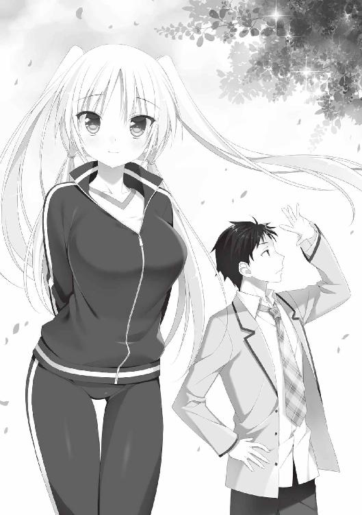
それがおそらく、恋詠さんが俺たちに伝えたかったことであり、〝樹との会話〟がもたらしたものだと俺は思った。
なぜなら俺も――彩乃と同じことを考えてたから。
この学園の中には、人知れず育まれている片想いがいくつも存在する。
どういう方法で、他人の片想いを後押しできるのかはわからないけど。
樹に結ばれているたくさんの想いを、ひとつでも多く形にできるなら――片想い部の役目も悪くないなと思えた。
「――うん、樹が言ってるみたいだな。みんなの片想いをよろしく頼みます、って」
「うわあ......何そのファンタジー発言。ついに樹と会話しちゃったよこの人！」
「お前なあ......」
「あはは。冗談だにゃー。さーて、部室戻ってレベル上げの続きやろーっと」
彩乃は悪戯っぽく笑うと、身を翻して文化棟のほうへと駆け出した。
※ ※
「絶対おかしいですよ！ これはもはや国家的陰謀レベルですよ！」
短歌部部室のちゃぶ台の前。千紗は憤慨し、手に持っていた一枚の紙をぶんぶんと振り回す。
部室入り口・松ヤニトラップ事件が起こった三日後、再び事件は起きた。
放課後、千紗が短歌部の部室に向かい、ドアを開けると――そこに立っていたのは、皮膚が半分剥げ落ちた、人の形をした化け物だった!!
化け物を見た瞬間に千紗は気を失い、続いてやってきた恋詠さんが、倒れていた千紗を介抱したという。正体は、なんのことはない、保健室から運ばれた人体模型だった。
そして明くる日、つまり今日も、立て続けに事件は起こった。
朝、登校すると――〝短歌部の活動を停止せよ〟という警告文が、短歌部メンバーそれぞれの下駄箱の中に入っていたのだ。警告文はプリンターで打ち出されたものだった。
俺の手の中にも、千紗が持っているものと同じ紙が握られている。
一連の事件を協議するために、俺たち短歌部は放課後、部室にて顔を突き合わせていた。
「うむむ、実に奇怪だ。誰がなんのために、このような......」
と、八島先輩。
「短歌部が活動すると、誰かが困ることがあるわけ？」
と、彩乃がポータブルゲームをやりながら。
恋詠さんは、消沈気味だった。
学園に悪い人はいません、これ以上の異変は起こらないはずです......と性善説に基づいた持論を展開していたゆえ、やはりショックを受けているようだ。
「理由はともかく、これは明らかに脅迫だ。何者の犯行であるのか、早々に調べる必要がある。この案件は学園に報告し、生徒会預かりで調査しよう」
八島先輩がそう言うと、恋詠さんは悲しげな瞳を向ける。
「待って、翠星。それでは大事になってしまいます」
「今は警告レベルに留まっているようだが、何か実害が出てからでは遅いのだぞ」
「しかし......誰がやっているかがわかれば、話し合うことだってできると思うの。きっと何か理由があって、このようなことをやっているに違いないのです」
恋詠さんもまた、自分の下駄箱の中に投げ込まれていた警告文を、その手に握っていた。
ぞんざいに扱っている俺たちとは違い、恋詠さんは警告文すら、丁寧に四つ折りしている。
「学園側に知らせずに我々で犯人を見つけたい、というわけか」
八島先輩は秀麗な眉をわずかに歪め、憮然とした表情を浮かべた。
「短歌部の正体が〝片想い部〟だってバレたらヤバイんでしょ？ だったら、学園側に相談するのもマズいかもしれないよね」
彩乃の発言はもっともで、もし短歌部のもうひとつの顔が明らかになれば、男女交際禁止の法のもとに、部がお取り潰しになることは間違いないだろう。
「ひょっとして犯人は、私たちの正体が片想い部であると知っている可能性も......」
不安そうな顔で、千紗が呟く。
俺は首を横に振って否定した。
「いや、それなら学園側に言えば一発で終わりじゃないかな？」
そう、短歌部ではなく〝片想い部〟を潰したいのなら、嫌がらせとか回りくどいことをする必要はない。学園側に密告するだけで、事は済む。
問題を解決する術はないのか......頭を捻らせてみるが、俺に探偵の素養があるわけではない。それは他の短歌部メンバーも同じで、それぞれが、今日の天気と同じような曇り顔を浮かべていた。
が、しかし。
その中に約一名、闘志を失っていない者がいた。
〝女傑〟と呼ぶに相応しい表情を湛え、腕組みとともに立ち上がったのは――鬼の風紀委員長、八島翠星先輩だった。
「とにかく、このような卑劣な脅迫が横行すること自体を、黙って見過ごすわけにはいかないッ！ 学園に頼れないのであれば、ボクがやる！」
グッ、と右拳を胸の前に構え、力を入れる。
「どこかにきっと、手がかりがあるはずだ。来い、高村集！」
「え？ 俺？」
「男子学部を案内しろ。捜査の基本は現場百回と言うだろう。保健室や下駄箱に犯人の痕跡があるかもしれん。我々を脅迫しているのは何者なのか、必ず見つけ出してくれる！」
そう言うなり、八島先輩は俺の襟首をむんずと掴み、部室の入り口へと向かった。
「ちょ、ちょっと、八島先輩......」
八島先輩の腕力に抗うことは不可能で、俺はズルズルと引きずられるように、部室の外へと拉致られていく。
部室から出る瞬間、視界に入ったのは――俺たちへと向けられた、恋詠さんの不安そうな瞳であった。
まず向かったのは、男子学部にある保健室。測定器具などを保管している準備室から、人体模型が運び出されていたことがわかった。
人体模型は女子学部の生徒会経由で保健室に返却しており、表向き事件性はないように装っておいたものの......誰が運び出したのかは、依然謎のままであった。
俺は、タイミングよく保健室にいた非常勤の保健医に、昨日の状況について質問した。
「......じゃあ昨日、先生が保健室を空けたのは昼休みだけだったんですか？」
「そうだねぇ、その間に人体模型が持ち出されたみたいだけどねぇ」
初老の保健医は、俺の質問にモッサリと答えてくれた。
「いつも昼休みは、保健室の鍵はかけないんですか？」
「まあ、昼休みはよく怪我人が来るからねえ。鍵をかけないのが習慣になっているよ。しかしよく女子学部の生徒が、準備室に人体模型があるって知ってたねえ」
保健医の視線が、俺の背後にいた八島先輩に向けられる。
「女子学部の保健室にはなかったもので、ここならば......と思いまして。事後報告になってすみませんでした」
「でもなんだってそんなことを聞くんだい？ 何かおかしなことでも......」
「いえ何も、失礼致します！」
保健医の質問が言い終わる前に会話を打ち切り、八島先輩は俺を引きずって保健室を出た。
そのまま、男子学部の校舎と下駄箱を繋ぐ渡り廊下へと移動する。
「男子学部の保健室から人体模型が持ち出されてたってことは......やっぱり、犯人は男子生徒、ということなんですかね」
俺がそう質問すると、八島先輩は軽く下唇を噛む。八島先輩がそうする時は、どうやら何か考え事をしている時の癖らしい。
「――いや、そうとは限るまい。脅迫文は女子学部の下駄箱――それも女子部員全員の下駄箱に、間違うことなく入れられていた。男子生徒が女子学部の下駄箱の前をウロウロしていたら、怪しいことこの上なかろう」
「でも、俺の下駄箱にも入ってたってことは......」
八島先輩が立ち止まり、俺を振り返る。
「可能性はふたつだ。脅迫犯は男女二人以上、もしくは――」
八島先輩の目が、鋭く光る。
「男子学部、女子学部の両方に出入りして、不審に思われない人物だ」
八島先輩の言葉に、俺の歩みが止まる。
「まさか、それって......」
コクリ、と八島先輩が頷く。
「そう。この学園の教師なら......両学部をウロウロしていても、さほど不審に思われないだろう」
「なるほど......！ で、でも、どうして先生が短歌部に恨みを？ 嫌がらせとかしなくても、短歌部に問題があれば職員会議で――」
「まあ待て、あくまでも可能性の話だ。先生の中に犯人がいると、ここで決めつけてしまうのは早計だろう」
身を乗り出す俺を押し止めるように、八島先輩はそう諭す。
「さっき言ったように、男女複数犯の可能性もある。まずは証拠を集めよう」
確かに、ここで犯人の大枠を断定してしまうのは勇み足かもしれない。
八島先輩の言う通り、まずは犯人に近づくための証拠を集めるのが先か。
「よし、次だ」
八島先輩はそう言うと、ズンズンと大股で、男子学部の下駄箱のほうへと進んでいった。
「何か見つかったか？」
「いえ......特に変わったものは......」
俺は下駄箱の中を覗き込みながら答えた。
下駄箱の中には、俺のスニーカーが入っているだけだ。
「男子生徒にあるまじき長さの髪の毛などは落ちてないか？」
「いや特に......八島先輩、どうしてそんなに離れてるんですか」
「ボクには男子生徒の下駄箱を覗き込むような趣味はないからな」
それは俺も同じなんですが。
犯人は現場になんらかの手がかりを遺しているはず、という八島先輩の言に従って、俺の下駄箱を再調査したものの......これといった手がかりはなかった。
下校時間ということも相まって、〝なぜ、女子学部の鬼の風紀委員長がここに......？〟という、男子生徒たちの好奇の視線が、八島先輩に注がれ続けている。ついでに、〝八島先輩と一緒にいるあいつは誰だ？〟といういぶかしげな視線が、俺へと突き刺さる。
「では次。女子学部の下駄箱に行こう」
八島先輩に促され、捜索場所を移動する。
女子学部に入ると、今度は好奇ではなく〝畏れ敬う〟視線が、八島先輩に注がれているのがわかった。
すれ違う女子生徒が皆、深々と頭を下げていく。八島先輩も、そのひとつひとつに軽く会釈を返す。鬼の風紀委員長としてどれだけ影響力が大きいのか、ひしひしと肌に感じる。
当然ながら女子の下駄箱は、俺の代わりに八島先輩がチェックすることになった。
「無断で調べるのは礼を欠くが、捜査の一環として仕方あるまい」
そう言うと、八島先輩は千紗、恋詠さん、彩乃の順に、下駄箱を開けて中を確認した。
「ふーむ、特に変わったところはないな。周囲に、怪しいものも落ちていない」
彩乃の下駄箱の扉を閉めながら、八島先輩は呟いた。
「後は八島先輩の下駄箱ですよね」
俺がそう言うと――なぜか、八島先輩の動きが硬くなる。
「あ、うん。ボクのは大丈夫だ、問題ない」
「......え？ いやほら、何かあるかもしれませんし......一応確認を」
俺が促すと、八島先輩は明らかに不機嫌そうな顔になった。
「......そうまで言うなら仕方がない」
そう言うと、八島先輩は三年生の下駄箱の前まで歩いていく。
そして、〝八島〟とネームプレートが入った下駄箱の扉に手をかけ......。
「はい大丈夫。問題ないな」
時間にして一秒足らず。
ガガッと扉を開け閉めし、八島先輩は調査終了の旨を告げた。
「ちょ......！ 何言ってるんですか！ 中身、全然見てないじゃないですか！」
「これでいいんだ！ 問題なし！」
あ、明らかに怪しい......！
「......ひょっとして、中に入ってるんじゃないですか。見られたらマズイものとかが」
「し、失敬な！ ボクに限って、校則に反するものを隠し持っているはずがなかろう！」
八島先輩は右手で自分の胸をドン、と叩くと、勢いよく下駄箱の扉を開いた。
俺は恐る恐る、下駄箱の中を覗き込む。
......特に変わったところはない。怪しげなものも入ってない。
革靴の他に、折りたたみ傘が入っているだけである。
......ん？ これって......。
俺はしげしげと置き傘を見た。
ピンクの水玉に加え、だらけ切ったクマの顔が配置された、随分とファンシーな一品である。
「そ、それはだな、間違えて持ってきた傘だ、い、妹の！」
ひょっとして......八島先輩はこの傘を隠そうとしていたのか。
「......八島先輩は一人っ子でしたよね。恋詠さんが、自分も八島先輩も一人っ子なんで姉妹同然に育った......とか言ってた気が」
「き、キミは妙なところだけ記憶力がいいな！」
八島先輩はそう言うと、制服の胸ポケットからハンカチを取り出し、額の汗を拭い始める。しかし――そのハンカチにもまた、可愛らしいピンクの水玉とだらけたクマがあしらわれていた。
「八島先輩......そのハンカチ......」
「ひっ！」
俺の視線に気付いた八島先輩は、慌ててハンカチを懐にしまった。
......。
............。
そういや......遊園地でも八島先輩、クレーンゲームの前で挙動不審だったな。
俺は八島先輩と初めて会った際に、右手を粉砕されそうになったことを思い出した。あの時はすごく痛かったなあ。
「もしかすると」
「......もしかすると、なんだ？」
「先輩ってカワイイもの好きだったりします？」
「な、何を言うか！」
俺がそう聞くと、八島先輩は耳まで真っ赤にして反論した。
眉毛も、キリリと逆八の字になっている。
「ボクは質実剛健堅忍不抜、鬼の風紀委員長だぞ。そのようなフワフワと可愛らしくうわっついたものにうつつを抜かすなど......」
「じゃあ後で、八島先輩のペンケースの中、見せて下さいね」
「なっ!?」
ペンケースの中は個人の趣味が色濃く反映される。その場所も水玉のだらけたクマに支配されているとすれば言い逃れはできない。
「だ、ダメだダメだ！」
「別にいいじゃないですか」
「ダメと言ったらダメだ！ 貴様、一生かかっても償えぬ十字架を背負うつもりか！」
何を大げさな。
「あ、そうだ。明日なら見せてやってもいいぞ」
「それじゃ意味ないでしょう」
俺の中には、八島先輩に借りを返すのはここしかないという闘志が湧いていた。
「下着も水玉のだらけクマさんなんですかね」
俺が呟いた瞬間、八島先輩は両手でスカートを押さえる姿勢を取った。
「き、貴様っ！ 見たのか!? いつの間に!?」
「へ？」
八島先輩の顔が、朱色を超えた真紅へと変わっていく。
「いやその、予想というか想像というか......」
「タカムラァ――――――――ッ！」
目の前の八島先輩の身体から、異様な〝気〟が発散される。
次の瞬間、八島先輩の右手が俺の顔面をガッシと捕らえた。いわゆるアイアンクローだ。
「忘れろ！ 忘れるんだ高村ッ！」
「あいててててててて！ 痛い、痛いですよ八島先輩ッ！」
ギリギリと万力のような圧力がこめかみを締めつける。
八島先輩の手のひらにさえぎられ、視界がまったく確保できない。
さらに両足が地に着いている感覚がない。俺は八島先輩に、片手一本で持ち上げられているのか？ アイアンクローをかけられたまま!?
「ギ......ギブギブ！ ギブンナサイ！」
ごめんなさいとギブアップが悪魔合体した悲鳴が、俺の口から漏れる。
「忘れろ......すべてをな！」
八島先輩がそう言い放った瞬間。俺の頭部を、閃光のような衝撃が包む。
まるで太陽を、押しつけられたかの如く――。
「......ん？ 俺は今まで......何を......」
......頭を振りながら、俺は眼前の光景を見つめる。
ここは......女子学部の昇降口？ 俺は一体......。
「あ、そうか......俺たちは、短歌部を脅迫している犯人を捜してたんですよね」
朦朧とする頭を左右に振りながら、俺は目の前に立つ八島先輩に視線を注いだ。
「お前は何も見てないし何も知らない。下駄箱の調査は問題なく終わった、いいな？」
「は、はあ。よくわかんないですけど......」
こめかみと後頭部がズキズキする。
それよりも、何か重大なことを忘れてしまったような気が......しかし思い出せない。
頭の奥底から何かを引っ張り出そうとすると、痛みが走る。
と、その時。
「......騒いでいたのは、お前たちか」
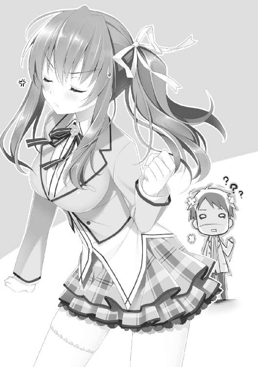
神経質そうな声で、俺たちに話しかけたのは――古典の芦屋だった。
芦屋の後ろを、他の男子学部の先生たちがゾロゾロと通り抜けていく。
おそらく、女子学部のほうで何かの会議をやっていたのだろう。
「いえ、特に騒ぎなどは起こしておりませんし、起こってもおりません。先生の気のせいではないでしょうか」
周囲を見渡しながら、八島先輩は芦屋に向かって告げた。
芦屋は目を細め、俺と八島先輩を交互に見る。その表情に、好意的な色はない。
「高村......また、短歌部とやらか？」
フン、と鼻を鳴らすような仕草とともに、芦屋が言い放つ。
そうだ......宿願の樹の下でも、俺と恋詠さんたちが一緒にいるところを、芦屋に見咎められたんだった。
「部活と同じくらい、授業も真剣に受けろ」
芦屋はそう言うと、俺たちを一瞥して背を向けた。
間違ったことは言ってないが......何かこう、陰湿なものを感じる。
「あの教師......彼は男子学部の生徒指導担当だったな」
「はい。専攻は古典で......それが何か？」
「......いや、なんでもない。あくまで推測にすぎんし、妙な先入観を持つのは、今後の捜査をいびつにしてしまうからな」
見ると、八島先輩も、先ほどとは違った険しい表情を浮かべている。
下唇を軽く噛んでいた。
......彼女が推察していることは、おそらく......。
俺の心の中に渦巻き始めている仮説と同じものかも、しれなかった。
そしてその時に抱いた危惧は、より現実的なものとなる。
下駄箱に脅迫状が投函された次の日――今度は、短歌部部室の中が荒らされたのだ。
彩乃が持ち込んでいたゲーム機や攻略本には実害がなかったが、恋詠さんが用意していた和歌の本や、短歌を綴るための短冊などが、部屋の中にばら撒かれていたのだ。
それは明らかに〝短歌部〟に対する、卑劣な嫌がらせだった。
床に散らばった和歌の本や短冊たち。
その中に――犯人が遺したと思しき、ひとつの句が置かれていた。
『あふことの 絶えてしなくば なかなかに 人をも身をも うらみざらまし』
部員総出で、部室の片付けに取りかかること一時間。
荒らされていた部室内は、ようやく元の姿を取り戻した。
例の如く、ちゃぶ台を囲んで座る、恋詠さん以下短歌部一同。
台の上には、部屋を荒らした犯人が遺したと目される短冊――そこに書かれていた、一首の短歌が置かれていた。
〝あふことの 絶えてしなくば なかなかに 人をも身をも うらみざらまし〟
書かれていた句の意味を解けるのは、この部室の中ではおそらく......恋詠さん一人だ。
部員たちの視線に促され、恋詠さんが口を開く。
「――これは、小倉百人一首に収められている歌で、詠み人は中納言朝忠。『拾遺集』の巻十一にも収録されています」
恋詠さんは歌のデータをすらすらと暗唱した。
しかし、問題はそこではない。歌に込められた意味だ。
「現代語に訳すと、こうなります――貴方に逢わなければ、振り向いてもらえなかったことも、自分自身のふがいなさも恨むことはなかったのに――」
恋詠さんはしんみりとした口調で、歌の意味を披露した。
「なんだか......哀しい感じの歌ですね」
「一般に、悲恋の歌と言われています」
千紗の問いかけに、恋詠さんが応じた。
「〝逢う〟というのは〝男女の関係〟も示しています。この句においては、男女が交流しなくていいのなら――と訳すこともできるでしょう」
恋詠さんの言葉を受け、彩乃が身を乗り出す。
「男女交際しなくていいとか......なんか、うちの校則みたいじゃない。これって、偶然の一致？」
「......犯人も、そのあたりを意識しているのかもしれないな。短歌部の正体を知っているきらいもある」
腕組みをしながら、八島先輩が呟く。
一体、何を目的に犯人はこの歌を遺していったのだろう。
なんらかの警告だとしても、悲恋の歌を選ぶのはミスマッチだと考えながら、俺は言った。
「短歌部ならこの歌の意味を知ってると思ったから、そのチューナゴンアサヅケさんの」
「中納言朝忠」
彩乃からツッコミが飛ぶ。
「――中納言朝忠の歌を遺していったんだろ？ 短歌部に伝えたい、何かしらの意味があるはずだよな......」
そう言いながらも俺の頭の中には、短歌の意味を探ることよりも、もっと具体的に――犯人と思しき人物が、頭に浮かんでいた。
「......あくまで、仮説だけど」
俺がそう切り出すと、一同の視線が集まる。
「男子学部の古典教師――芦屋は、怪しい、と思う......」
「ええっ!? 犯人は先生なんですか!?」
目を見開き、一番敏感に反応したのは千紗だった。
「根拠を、教えて頂けますか？」
恋詠さんに促され、俺は自分なりの推理を披露した。
「松ヤニの件は割愛するけど、千紗ちゃんが気絶した人体模型。――あの模型は、男子学部の保健室から持ち出されていた。男子学部の教師・芦屋なら、人体模型が保健室に置いてあることを知っていただろうし、運び出すのにさほど苦労しないはずだ」
ふんふん、と千紗が頷く。
「そして、下駄箱に入っていた脅迫状。これは男子学部である俺と、女子学部の短歌部メンバー、ふたつの学部にまたがって入れられていた。つまり、二つの学部の下駄箱の前をうろついていても、怪しまれない人間によって行われた犯行ということになる。教師なら――この条件を満たせる」
「まあ、男女複数犯という線もあるがな」
八島先輩の言葉に、俺は〝もちろん、その可能性もありますけど〟と、ワンクッション置いて応じた。
「最後に、荒らされた部室に遺されていた歌。芦屋の担当は古典。百人一首にも精通していることは間違いない」
俺はそこまで言うと、一同を見渡した。
それぞれ何か言いたいことはあるようだが、彼女たちは俺の推理をおおむね受け入れているようだ。
「もし芦屋教諭を犯人と仮定するなら......直接、本人に問い正したほうが早いかもしれんな」
下唇を軽く噛みながら、八島先輩が呟く。
短歌部としてだけでなく、学内の和を保つ風紀委員としても見過ごせない問題なのだろう。
「まあ、ここであーだこーだ言ってるよりも、そのアシヤとかいう先生にカマかけたほうがスッキリするよねえ」
彩乃も首の後ろで両手を組み賛成した。
そんな風に場がまとまりかけたその時――
「......少し待って下さい」
長いまつげに彩られた目を、伏せるようにして。
恋詠さんはポツリと、口を開く。
「明後日になれば、事態は動く――と思います」
「......明後日？ それはどういうことだ」
恋詠さん以外の人間が、怪訝そうな顔を浮かべる。
明後日というと......五月最後の日、金曜日。その日に、何かが起こるというのであろうか。
「今は私の推測を申し上げても意味がありません。きちんと目で確かめる必要があります」
恋詠さんは顔を上げ、きっぱりと言った。
その目は真剣で――有無を言わせない強さがあった。
一同はしばらく無言で、その目力に気圧されていたが、やがて八島先輩が口を開いた。
「......わかった、恋詠が言い出したら聞かないからな」
「......ま、恋詠姫にも何か考えがあるみたいだしね」
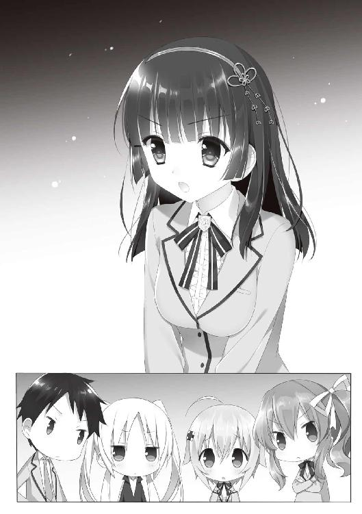
彩乃が賛同し、千紗もこっくりと頷く。
俺も芦屋犯人説を捨て切れないままだったけど、恋詠さんの中にも何か確信めいたものがあるのは感じていた。
「......そうだな、じゃあ恋詠さんの言う通り、明後日を待つことにしよう」
「ありがとうございます。とはいえ、また皆さんにご迷惑をかける事件が起こる可能性もあります。重々、お気をつけ下さい」
そう言うと、恋詠さんは静かに頭を下げる。
それは、〝変なことに巻き込んでしまってごめんなさい〟という、無言の謝罪のようにも感じられた。
その後ほどなくして、本日の部活は終了となった。八島先輩は生徒会へ、彩乃は部室でゲーム機のコントローラーを握り、恋詠さんは〝例の中納言朝忠の歌に、別の解釈がないか調べてみますね〟と、部室に残った。
恋詠さんの手伝いをしようかとも思ったが、短歌に関して戦力外である俺と千紗は、下校の途についた。
文化棟の入り口まで、俺と千紗は並んで歩いていた。
こうして横に並ぶと、千紗は俺よりも頭ひとつ分小さい。もしも俺に妹がいたら、これくらいの身長差なのかな。
「芦屋先生って......前に、宿願の樹の前で会った人ですよね。なんかこう、神経質そうな......。文豪で言うなら芥川系、みたいな？」
「そうそう」
線の細いところは確かに似てるな、と、俺は千紗の言葉に同意した。
「もし、芦屋先生が短歌部に恨みを持ってるとしたら......何が原因なんでしょうね」
......芦屋が個人的に俺のことが嫌い、とか？
しかし、それなら短歌部全体に嫌がらせをする必要もないのでは......と思う。
「やっぱり......犯人は短歌部の正体を知っているのかもしれませんね。片想いを......その、応援なんかさせないぞ、とか考えてて......」
「だけど犯人がそう思ってるんなら、あんな短歌を遺したりしないで、一言書けば済むことなんだよなあ。〝片想い部など許さん〟って。それで、短歌部は首根っこを押さえられたことになるわけだし」
「そ、そうですよね。ならきっと、別の理由があるんですよね」
「......理由か......」
犯人が、短歌部を恨み始めたきっかけ。
それがすべての発端であり、犯人にたどり着くための大きな手がかりになるのは間違いないのだ。その〝理由〟が、この学園のどこかに遺されているとしたら。
「......！ 待てよ......」
以前、恋詠さんは言ってたよな。
〝短歌部は長い歴史を持つ、由緒正しき部活〟であると。
そして、部室を探す時に例のメガネの......羽月先生も言ってたはずだ。
〝短歌部ってまだあったのね〟と。
短歌部が部として活動を続けてきたのなら、きっとどこかに活動記録が残っているはずだ。例えばそう――。
「......？ 高村センパイ、どうかしました？」
「うん、ちょっと用事を思い出して。じゃあ、千紗ちゃん、また明日」
「あ、はい、また明日」
恋詠さんが言う〝事態が動く〟明後日まで、まだ時間がある。
俺は千紗に別れを告げると、一人で庭園のそばにある、学園の図書館へと向かった。
次の日。
二時限目の授業が、ちょうど芦屋の古典だった。
俺は自然を装って、ちらちらと芦屋の様子を窺った。
別段、普通通りだ。特に俺を意識している風でもない。
授業は淡々と進み、居眠りをしていた望が一喝されただけで、特に変わったことは起こらなかった。
授業が終了すると、芦屋は卓上の教科書を手に持ち、そのまま退出していく。
芦屋は生徒指導も担当しており、他の先生よりも学内の風紀の乱れには敏感なはずだ。それゆえ、短歌部の正体が〝片想い部〟であると知ったら、その存在を絶対に許さないだろう。
そう......正体を知っているなら、存続を許さないはずなのだ。
芦屋は後ろ手でドアを閉めると、そのまま廊下へと姿を消した。
そして、数時間後の放課後。
集まった一同に、恋詠さんが告げた。
「明日の朝六時、短歌部は全員、宿願の樹に集合して下さい」
恋詠さんの言葉に、驚く一同。
「おそらくそこに――犯人は現れます」
続けて恋詠さんはゆっくりと口を開くと、とある歌を口ずさんだ。
「――思はじと 言ひてしものを 朱華色の 移ろひやすき 我が心かも」
「何ソレ？」
彩乃の質問に、恋詠さんは答える。
「返歌です」
返歌というと......短歌講座で恋詠さんに聞いたことがあった。
歌のお返しというか、発言にレスをつける......みたいな。
「この句を、短歌部の扉にはさんでおきます。犯人が見れば、きっとこの歌の意味を汲み取ってくれるはずですから」
俺には歌の意味はわからない。
しかし犯人なら、何か感じ取ることがあると、恋詠さんは、そう目算を立てたのだ。
しかし、当の恋詠さんの表情は......心なしか沈んでいるようにも、見えた。
※ ※
「ふぁ......」
あくびをしながら、薄もやの中に沈んだ校門を潜る。
日はまだ完全に昇り切っておらず、目に入る風景は、白く霞んで見える。
一週間前にも、俺は同じ景色を目にしていた。
望に頼まれた手紙を、宿願の樹に結びに行った時だ。
あれから......恋詠さんや千紗に出会い、短歌部に入り、八島先輩や彩乃と知り合った。
ここ一週間で、俺の学園生活は激変した。
そして今、そのすべての始まりとなった、宿願の樹で、何かが起きる――。
学園を分断する理智の壁沿いに、庭園を目指す。
庭園の扉は固く閉ざされていたが、門から少し歩いたところに、柵の隙間があった。そこから庭園の中に滑り込むと、俺は奥にある宿願の樹を目指した。
「高村センパイ！」
樹の下で、手を上げながらぴょんぴょんと飛び跳ねているのは千紗だった。朝から元気が滲み出ている模様だ。その横には、恋詠さんの姿もある。
「おはようございます」
しずしずと、恋詠さんは頭を下げる。
「おはよう......あれ？ 八島先輩と彩乃はまだ来てないのか」
周囲を見渡しながら、俺がそう聞くと、
「すまない、待たせたな」
俺の背後から、毅然とした八島先輩の声が響く。
さらに八島先輩に引きずられるようにして、目をショボつかせている彩乃の姿もあった。珍しく制服を着用している。
「うー。ねーむーいー。だーるーいー」
「シャキっとしないか。昨日、四時に起こしに行くと伝えていただろうが」
八島先輩のその言葉に、俺と恋詠さんは顔を見合わせる。
「いやー、起きれないと思ったから、部室に泊まろうとしたんだけどにゃー。鬼の風紀委員長が許さんって」
「だから私が、与謝野を起こしに行ったわけだ」
よく見ると、いつもは均等に結わえられてるフォーステールの髪の束が、今はてんでバラバラだ。......早起き云々は関係なく、朝が弱いのかもしれない。
「それで恋詠、犯人は本当に現れるんだろうな」
「――まだ暫く時間はあると思いますので、隠れて待ちましょう」
八島先輩の問いにそう答えると、恋詠さんは宿願の樹にほど近い、茂みへと視線を移した。
茂みは俺の身長の半分くらいの高さで、身を屈めれば、宿願の樹からは死角となる。
俺たちは、そそくさと茂みへと移動する。
両端には千紗と八島先輩。俺は恋詠さんと彩乃に挟まれるようにして、茂みに隠れた。
自然と身体が密着していて、なんだか柔らかい。ついでに恋詠さんと彩乃はそれぞれ違うシャンプーを使っているのか、二人から異なるいい香りが漂ってくる。
――いかん、今はトリップしている場合ではない。
恋詠さんが言う〝犯人〟がいつ現れるかわからない。気を抜かないようにしないと......。
もし、犯人が暴力に訴えるような人物だったら、唯一の男である俺がなんとか......いや、その点は問題ないか。
「ん？ どうした高村。私の顔に何かついてるか？」
「いや、八島先輩がいると心強いなと」
――その後しばらくの間、庭園を静寂が支配した。時折、庭園の木々の間から、野鳥の声が響くのみである。
俺たちが茂みに身を潜めて、十分ほど経過しただろうか。腕時計を見ると、間もなく午前六時になるところだ。
「誰も......来ませんね」
トーンを落とした声で、千紗が言う。
見ると、彩乃はうつらうつらと船を漕いでいた。
「寝るなっ、与謝野！」
「ふぇっ!? ね、寝てないわよ!?」
八島先輩にツッコまれ、彩乃は口元に垂れた涎を手で拭う。
と、その直後――俺の隣にいた恋詠さんの身体が、微かに強張るのがわかった。
「しっ......！ 皆さん、来ました」
何者かが......宿願の樹に向かって歩いてくる。
朝もやが晴れ切っていないため、誰なのかははっきりとわからない。
――身長はかなり高い。そのシルエットから、成年の男性であるということは見て取れる。
俺は思わず、つばを飲み込んだ。ごくり、という音が、俺の喉元に響く。
湿った芝生を踏み締める音が、徐々に高くなる。
そして――朝もやの中から姿を現したのは。
「芦屋......！」
声には出さず、唇だけが動く。
俺の周りにいる短歌部の面々も、緊張の面持ちで芦屋の姿を見つめている。
芦屋は宿願の樹の前に立ち止まると、神経質そうな顔で、巨木を見上げた。
「どうする......出ていって芦屋先生を問い詰めるか......？」
恋詠さんに判断を仰ぐように、八島先輩が瞳を鋭くする。
八島先輩の右手は、コキコキと音を立てながら蠢いていた。
八島先輩の恐怖の必殺技、八島クローの構え！
......ん？ なんで俺、それを知ってるんだ？
自分自身をいぶかしく思っていた俺を尻目に、恋詠さんは首を横に振って、今にも飛び出さんばかりの八島先輩を手で制する。
「しかしだな......！」
芦屋は一分ほど宿願の樹を見上げた後、背広のポケットに手を入れる。そこから取り出されたのは、緑色の便せんであった。
「......！」
一同が目を瞠った。
芦屋は巨木に歩み寄り、自分の頭上にあった、しな垂れた一本の枝に手を伸ばす。
その枝には、芦屋の手にある便せんと同じ色のものが、しっかりと結わえられていた。
芦屋は枝に結ばれた便せんをほどくと、新しく取り出した便せんを結わえ直す。
「あれって......百日参り、ですよね。どうして芦屋先生が......」
密やかな声で、千紗が恋詠さんに問いかける。
「芦屋先生は、犯人ではありません」
「何っ!?」
八島先輩は、短く驚きの声を発した。
――そう。芦屋は犯人ではない。
二日前、図書館で過去の短歌部の資料を見つけた時、俺もその仮説にたどり着いた。
恋詠さんの言葉を受け、俺の中にあったもうひとつの仮説が――〝最有力説〟となって、存在感を増していく。
そうこうするうちに、芦屋は身を翻し、宿願の樹の前から離れていった。
「いいの？ 帰っちゃうよ？」
「大丈夫です。本当の犯人は――きっと、間もなく」
彩乃が心配して声をかけるが、恋詠さんは宿願の樹から視線を外すことなく、茂みから様子を窺い続けていた。
そして――。
芦屋と入れ替わるように、異なるシルエットが、宿願の樹の前に現れる。
その人物は、さきほど芦屋が手紙を結びつけた枝の下まで歩み寄り、なんとか手紙に触れようと、爪先立ちで手を伸ばした。
「――今です！」
普段は口調を荒げることのない恋詠さんが、鋭い声を発する。
俺たちは一斉に茂みから飛び出した。
そして――短歌部の活動を妨害していた〝主犯〟と対面したのだ。
「先生......!?」
最初に口を開いたのは、千紗であった。
そこにいた人物。
三つ編みにお下げという、女子学生を思わせるルックス。
どことなく野暮ったいニットのカーディガンと、灰色のタイトスカート。
それは――以前、部室を探す時に女子学部の職員室で会った、羽月江里先生だった。
「羽月......誰？ え？」
「羽月江里教諭。専攻は古典で、文化棟の管理担当。そして、三田のクラス担任だ」
彩乃のために、八島先輩が補足を入れる。
「あ、貴方たち、どうして......」
メガネの下の羽月先生の目に、怯えが走る。
「......もしや、と思いました。そして、私の推察が外れてほしいとも」
寂しそうな口調で、恋詠さんが語りかける。
「中納言朝忠の歌が、ヒントになったんです。〝あふことの、絶えてしなくば、なかなかに〟――貴方に逢わなければよかった。あれは......羽月先生、貴女の心を代弁していたのですね」
恋詠さんが語りかけるが、羽月先生は返事をしない。
目を伏せ、ただただ、項垂れていた。
「ちょ、ちょっと、これってどーゆーことなのよ？ 三行で説明して！」
「三行じゃなくていいから教えて下さい！」
「え、ええと......それは......」
彩乃と千紗が詰め寄るが、恋詠さんは言葉に詰まってしまう。
そこで俺は一歩進み出た。
「――俺が説明するよ。......実は俺も、調べてたんだ。短歌部の歴史から」
そう申し出ると、羽月先生を除いて、一同の視線が俺に注がれる。
「まず芦屋のことだけど――彼はこの学校の前身となった、勒院高等学校の卒業生だった」
「ふむ、現在の男子学部か」
八島先輩が、相づちを打つ。
「だから芦屋が、百日参りのことを知っててもおかしくはない」
俺はそこまで言うと、項垂れている羽月先生に、一瞬だけ視線を送る。
羽月先生は俺の視線に気付いてないのか、気付かないふりをしているのか、無反応なままだ。
「そして同じく、この学校の前身である弥生女子学園の卒業生が、この学園にいた」
俺はそこで言葉を区切ると、再び羽月先生に視線を注いだ。
「それが短歌部に所属していた――羽月江里先生だ」
羽月先生のお下げが、ピクリと揺れる。
俺のそばでは驚きに目を見開いた千紗が、胸の前で握り締めた両手を、上下にブンブンと振っていた。
「そ、卒業生だってことは知ってたけど......羽月先生も短歌部だったんですか!? それじゃ、先生も片想い部のことは......」
「当然、知ってたと思うよ」
俺は、静かに続けた。
「当時は勒院高等学校、弥生女子学園、それぞれに短歌部が存在していた。だから羽月先生は弥生女子学園の短歌部に所属していた。合同で部活は行っていなかったようだけど......隣り合う学校同士、裏で協力して、〝片想い部〟としての活動をしていたんだと思う」
羽月先生は沈黙を守っている。肯定も否定もしないが、その沈黙は――俺の予想を裏づけているように感じられた。
「でもどうして......同じ短歌部だった羽月先生が......嫌がらせを？ 意味がわからないです」
信じられない、という表情で、千紗が首を傾げる。
実はそれは、俺も同じだった。彼女の動機までは、調べたところでわからない。
しかし、短歌部の活動を妨害しなくてはいけないなんらかの理由が、羽月先生の身の上に起こったのは、間違いない。
そう――羽月先生が弥生女子学園に在籍していた、当時に。
「羽月先生は、三年になる前に短歌部を退部している。つまり、二年生の時、何かしらの理由で、短歌部を退部しなくてはいけなかったんだ」
「退部って......」
退部の条件を思い出したのか、千紗が微かに声を震わせる。
「片想い部を退部しなくてはならない条件はふたつ。告白が成功して、めでたく両想いになった時。そしてもうひとつ――告白に失敗して、恋に破れた場合」
そこで、俺は自分の口が重くなるのを感じた。
本人の前でこれ以上踏み込んでいいのか、俺の中に躊躇があった。
俺は判断を委ねるように、恋詠さんを見た。
しかし。
恋詠さんの目は――真っ直ぐに俺を見つめ返していた。続きを、と、言わんばかりに。
俺は頷くと、意を決して、語った。
「羽月先生が退部した年――弥生女子短歌部の活動総評として遺されていた歌があった」
俺はズボンの後ろポケットから二つ折りのメモ用紙を取り出すと、目の前で広げる。
「〝かひなくて 今年も暮れぬ わかの浦の 波の玉藻に あさる蘆たづ〟」
「意味は？」
間髪容れず、彩乃が聞く。
「大した成果を上げることなく、今年も終わってしまった。波に打ち上げられた藻をつつく鶴を見ながら、そのようなことを感じている――平安後期の歌人、藤原隆信という人が詠んだ歌だ」
俺の説明を聞き、八島先輩の眉が曇る。
「その句が総評になっているということは......」
「つまり、この年は短歌部......片想い部としてなんの成果もなかった、ということです。もしも羽月先生が告白を成功させて退部していたら、成果はなかったなんて言わないはずです......よね」
一抹の心苦しさを感じつつ、俺はそう結んだ。
ちなみに、この年に退部したのは、羽月先生と他一名の女生徒だった。
おそらく羽月先生は失恋して――告白に失敗して、短歌部を辞めたのだろう。
そしてその事実が、俺たちへと降りかかった、一連の災難へと繋がっているはずなのだ。
「ふふ......」
突如、羽月先生から、くぐもったような笑い声が漏れる。
それは羽月先生が自らに向けた自嘲のようだった。
「......私、何やってるんだろ。あの時と......全然変わってない。全然、前に進めてない」
ぽつりと、羽月先生が言葉を紡ぐ。
「学生の頃の彼はね......みんなの憧れだった」
羽月先生のその言葉に――現短歌部一同に緊張が走る。
事件の裏にあったもの。数十年前の短歌部に起こった〝何か〟が語られ始めたことを、各々が悟る。
「運動もできて、文学好きで、後輩にも優しくて。王子様......みたいだったんだ」
それは、羽月先生の片想い。
「私も......彼に憧れてね。短歌部に入って、いつか想いを伝えたいって思ってた。同じ短歌部にいた――親友の朱美は、そんな私を応援してくれてた」
親友の朱美、という名前を口にした時、羽月先生は、ほんの少し苦い顔をした。
「そんな中......彼と街の図書館で偶然会って、一緒に勉強する機会があったの」
そう語る羽月先生の顔は、まるで昔日の――学生時代を過ごした頃の、少女の顔に戻っているようだった。
「もちろん図書館では言葉を交わすことはほとんどなかったし、帰り路ぐらいしか話す時間はなかった。でも、こんな時間がいつまでも続けばいいなって......そんなことを思ってた矢先、朱美が――彼に告白したの」
千紗も、彩乃も、八島先輩も、そして恋詠さんも、ただ静かに、羽月先生の次の言葉を待っていた。
「――その想いは、届かなかった。朱美は、短歌部を去ることになった。でも最後に泣きはらした目で私にこう言ったの。〝彼の好きな人は、アンタじゃない。彼にはすでに恋人がいた〟って。彼が好きな人は、他にいると――」
朱美さんという人は、表向き羽月先生を応援しながらも、実は同じ人に想いを抱いていて、告白した。もしも、羽月先生と彼が、仲むつまじく一緒に勉強している光景を、朱美さんが目撃していたら。そこに芽生えるのは――後ろ暗い感情なのかもしれない。親友を出し抜いてでも、告白しようと決意させるほどに。
「それから......彼と一緒に勉強する時間が、苦しくなってしまったの。朱美の言葉を確かめるのも怖かった。だって、私のような冴えない女の子より、彼に相応しい子はいくらでもいたから」
消え入りそうな語尾で、羽月先生は呟いた。
「......私は辛くて苦しくて、何も手につかなくなっていった。そして、図書館に行くことも、短歌部もやめたの。......私は憧れの人と大切な友人......二人を同時に......失った」
羽月先生の肩が、小刻みに震えていた。
「その彼が――芦屋先生、なんですね」
俺が言うと、羽月先生は、静かに頷いた。
「それから十年後......私は赴任した弥勒院学園で、彼と再会した。でも彼は......もう、目すら合わせてくれなかった」
羽月先生が、ゆっくりと顔を上げる。
「未熟だったの、何もかも。恋をする資格なんてなかった。残ったのは後悔だけだったわ」
メガネの下の瞳は、涙に潤んで紅くなっていた。
「未熟なうちに恋なんてしても辛いだけ......私はあんな苦い思いを、後輩に味あわせたくなかった。だから私は......」
続けて漏れたのは、絞り出すような声だった。
「――いえ、違うわ。それは建前ね。私は......見たくなかったの。辛いあの日を思い出すきっかけになる、短歌部そのものを......」
そう言ったきり、羽月先生は再び視線を、下へと落とした。
「............」
過去を思い出させる短歌部を見たくないというのは、本心だろう。
でも、未熟な恋によって経験した辛い思いがあったからこそ、教師として教え子に同じ道を歩ませたくないという気持ちも、本当かもしれないと思えた。
俺は言葉に詰まり、これ以上羽月先生を糾弾することはできなかった。俺以外のメンバーも、皆一様に沈痛の面持ちを浮かべているようだった。
ただ一人、恋詠さんを除いて。
恋詠さんは黒髪をなびかせながら、悠然と羽月先生の前へと歩み出る。
「羽月先生がお辛い想いをされたこと、心中、お察し致します」
恋詠さんは一瞬目を伏せ、痛みを共有するかのような表情で、羽月先生に告げた。
そして――正面から羽月先生を見据えると、桜色の唇を開いた。
「だけど、その恋があったからこそ、今の羽月先生があるんです。そして今の羽月先生も、恋する力を失ってはいない」
「......」
「どのような形であれ、昔日の想いを否定する必要はありません。あの日の想いは――自分自身を形作った恋の年代記として、羽月先生の中に、大切に刻み込まれているはずです」
恋詠さんは自分の胸の前で両手を重ねると、さらに言葉を継ぐ。
「そしてそれは――想いを未来に繋げるために、避けては通れない通過点だったのではないでしょうか」
......そうだよな。痛みを受け入れるより、否定するほうが楽だよな。
誰だって、過去に味わった数々の失敗や恥は、すべて忘れてしまいたい。なかったことにしてしまいたい。
だけど恋詠さんは――それらの痛みも、今の自分を形作る大切な年代記だと、そう言った。失恋した当事者じゃないから、そういう理想論を並べられる......わけじゃない。羽月先生にそのことを伝えたい、伝えるべきだと思ったから、恋詠さんはあえて言葉にしたのだ。
「今日はちょうど、芦屋先生の百日参りの最終日、百日目」
そう言うと、恋詠さんは、芦屋が結びつけた手紙の下へと歩いていく。
「手紙を、見ますか？」
恋詠さんの声に、羽月先生の肩が、ビクっと震える。
そして羽月先生は、おずおずと恋詠さんに視線を向けた。
「手紙に書かれている名前を知れば、貴方の未来をも知ることができるかもしれません。でも――」
そこで恋詠さんは言葉を区切り、羽月先生を正面から見つめ返す。
「結果がわかっている恋など、片想いではありませんよね」
ざっ、と、庭園に風が吹く。
まるで、残っていた朝もやをすべて吹き飛ばすような、その風は。
恋詠さんの絹糸のような黒髪も、軽やかに巻き上げた。
「わからないからこそ、人は自分を高め、必死になり、なけなしの勇気を振り絞って――想いを届けようとするのではないでしょうか」
そう言うと、恋詠さんは枝へと手を伸ばし、芦屋の手紙を手にする。
「選択されるのは、羽月先生ご自身です」
そして紫色の便箋を......羽月先生へと差し出した。
俺たちは、その光景を無言で見守る。誰一人、身じろぎもしなかった。
「......」
ゆっくりと、ゆっくりと、成人女性にしては小さな羽月先生の手が、手紙へと伸びる。
その白い指先が、手紙に触れそうになった、その時。
「......だめ......」
羽月先生は小さく漏らすと、その手を引っ込めた。
「......私には、その中身を見る資格はないわ」
涙混じりの声が、羽月先生の唇から零れ落ちる。
そして、羽月先生は俺たちに背を向けると――そのまま、庭園の外へと消えていった。
その日、千紗のクラスに羽月先生は現れなかった。
そして、土日を挟み、四日間の体調不良を経て登校してきた羽月先生は、以前と変わらぬ様子だったという。
メガネがなくなり、コンタクトになった以外は。
※ ※
宿願の樹の前で、羽月先生と会ってから、早五日が過ぎた。
短歌部への嫌がらせはピタリとやみ、部室にはようやく平穏な時間が訪れていた。
ただ、羽月先生と同じクラスである千紗だけは、少し気まずい思いをしているようだが......。
放課後、俺は例によって部室に寄ると、恋詠さんに薦められた本を広げていた。
〝新古今和歌集〟――俺が勧誘された時に、恋詠さんが読んでいた本だ。当然、短歌の知識がない俺が単品で読んでも不可解なことこの上ないので、恋詠さんは併せて、解釈本も一緒に貸してくれた。
まず自分の力で読んでみて、その後に解釈本を見る。大抵、俺の訳は明後日の方向を向いているわけなんだけど、〝なるほど、こういう意味だったのか......〟と答え合わせをする瞬間は、なかなか面白い。
それに......千年前の人間も、考えていることは俺たちと同じなんだなあと感じることも多い。文明や科学が発達しても、人間の心というのはそう簡単に変わらないのか、と、想いを馳せちゃったりする。
今、部室にいるのは俺と恋詠さん、二人だけだった。千紗は庭園の花壇の手入れ、彩乃は新作ゲームを買いに行くとかで部活を欠席、八島先輩は生徒会と、それぞれの場所に散っていた。
よく考えると、恋詠さんと二人っきりで部室にいるのは初めてだな。
......夕暮れの放課後。女の子と二人きり。
ベタな恋愛フラグを意識しそうになるが、俺は目の前に広げた和歌集に視線を落とし、気持ちを落ち着かせる。
と、その時。恋詠さんは和紙が貼られた小さな小箱を机の上に出し、その蓋を開けようとしていた。
「......その箱は？」
「この箱はですね......百日参りを終えた手紙を入れておくものなんです」
「へー」
「百日参りの後は三日間だけ樹に結んでおき、その後は短歌部が回収するのが習わしなんですよ」
見ると、蓋の中には三通ほどの手紙が入っている。
黄色のは見覚えある。望のだ。
そして、先日結ばれた......芦屋の紫色の便箋もある。
「で、その手紙はどうするの？ どこかに保管するのかな」
「ビリビリに破ります。細かく、細かく」
恋詠さんはニッコリと笑い、怖いことを口にする。
「や、破くって......」
「悪意があって破くわけじゃありませんよ。〝儀式〟のためなんです」
「儀式......？」
「ちょうど今から、儀式を行います。本来は、部長が一人で行うべきものらしいのですが......よかったら、高村君もご一緒しませんか？」
恋詠さんが向かったのは、文化棟の屋上だった。
屋上出口の踊り場から外に出た俺たちは、夕日を反射して朱に染まった床の眩しさに、少しだけ目を細めた。
眼下に広がる町並みの中を、私鉄線が走っていく。
多摩川のきらめきも、風景の中に確認できた。
恋詠さんは屋上の中心へと歩いていき、俺もそれに続く。
中心部を過ぎ、背の低いフェンス近くまで来ると、恋詠さんは歩みを止めた。
「では、始めましょうか」
恋詠さんは小箱を開け、中から手紙を取り出す。
「まずは細かく、文字が読めないほどに破りましょう」
「あのさ、望のはともかく......芦屋の手紙も、破っちゃっていいわけ？ まだ、想いが叶ったわけじゃないんだろ？」
俺がそう聞くと、恋詠さんは柔らかな笑顔を浮かべ、言葉を返す。
「大丈夫です。芦屋先生の想いはきっと、もう届いていますから」
恋詠さんがそう言うんならそうなんだろう、恋詠さんの中ではな！ ......とは思わず、俺はその言葉を不思議とすとん、と信じられた。
恋詠さんは、宿願の樹に宿った想いを知り、それを繋げようとしている。
芦屋のことも、羽月先生のことも、俺が調べるまでもなく、きっとすべてわかっていたのだ。
俺と恋詠さんは、手紙たちを細かく細かく破いた。文字を判別するのが難しいレベルまで、丁寧に細かくしていく。
小箱の中には、小さくなった手紙の欠片。
恋詠さんは破かれた手紙を指でつまみ上げると――それを、宙へと撒いた。
「〝萌芽の儀〟と言うらしいです」
想いの欠片たちは、空の中を踊るようにして、夕日に染まった風景の中へと消えていく。
「みんなの想いが籠もった手紙を、風に乗せて撒く。そしてそれは、次の片想いを連れてくる――」
恋詠さんの手が動くたび、夕日を受けて輝く紙片が、風とともに消えていく。
それはどこか、幻想的な風景だった。
まるで霊験あらたかな巫女が、厳かに儀式を執り行うかのようで――
とても、綺麗だった。
俺はしばらく、彼女の姿に、見とれてしまう。
「言葉に魂が籠もって言霊になるように、手紙にも想いが、魂が籠もるもの。手紙の欠片に触れた人も、もしかすると――自分の中にある片想いに、気付けるかもしれません」
自分の中にある片想い――か。
......と、俺は〝あること〟に気付いた。
千紗ちゃんは、自分が片想いをしているから部に入った、と言っていた。
片想いが片想い部に入るための条件だから、想い人がいるのは当然だ（俺や彩乃、八島先輩というケースもあるが）。
そして――部長である恋詠さんもまた、想い人がいるからこそ、片想い部に入ったのではないだろうか。
恋詠さんの想い人って......一体誰なんだろう。
そう思った時、心の隅っこが、チクリと痛むような感覚がした。
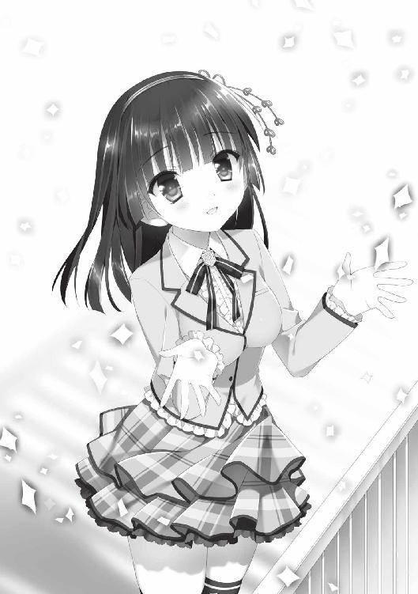
自分でも......よくわからない。
......なんだろう、この気持ち。
黒髪を風に躍らせる少女を仰ぎ見ながら、俺は自分でも思わず、口にしていた。
「あの、恋詠さん......」
「はい？」
「......恋詠さんの......」
俺が、口を開いた瞬間。
突如、ゴウッという音とともに、激しい突風が、俺たちを襲った。
それと同時に。
バターンという轟音とともに、半開きにしていた屋上の扉が――締まった。
「すごい風......では、高村君、そろそろ帰りましょうか」
「......うん」
俺が聞こうとしたことも、突風に流されてしまった。
......ま、いいか。
しかし。
「......え......？ ちょっ......」
俺は屋上のドアノブを握って、愕然とした。
......まるで、瞬間接着剤で固めたように、ピクリとも動かない。
「まさか......」
そういえばこのドア、内側からは開けるが、一旦閉めると外側からは鍵がかかってしまい開かない種類のものだ。だから扉は半開きにしてあったのだ。
「マズイ、内側から鍵がかかったみたいだ」
「ど、どうしましょう......」
口元に右手を当て、恋詠さんが珍しく慌てた表情を見せる。
「すみません、高村君まで巻き込んでしまって」
「いや、恋詠さんが悪いわけじゃないし......っていうか、参ったな......」
俺は屋上を見渡してみる。
コンクリートの床が広がっているだけで、鉄の扉をこじ開けられるようなアイテムは置いてない。
歩き回ってみても、何も見つからなかった。
ダメ元で、扉を叩いてみる。
ドンドンと地味な音が響くだけで、誰かが気付いてくれるとは思えない。
時間的に、文化棟に生徒が残っている可能性も低かった。
くそ......ケータイがあれば、楽に助けを呼べるのに......弥勒院学園は持ち込み禁止だもんなあ。
文化棟は四階建て。誰かが文化棟の前を通った時に、フェンス越しに大声で叫べば、助けを呼べるかもしれないが......今眼下に見える校庭に、生徒の姿は皆無。
どうしたものか......と脱出策を練っていた、その時。
何やら、恋詠さんの様子がおかしいことに気付いた。
スカートを押さえ、内股で、妙にもじもじとしている。
「......どうかした？」
俺が聞くと、恋詠さんはびくっ、と肩を震わせた。
「え？ あ、あの、じ、実は......その」
もじもじが加速する。
「そ、その......ちょっと、ご不浄に......」
ごふじょう......？ ああ、トイレのこと......ええっ!?
俺はオロオロしながら、恋詠さんに問いかけた。
「だ、大丈夫？ 我慢できる？」
「え、ええ。で、ですが......そんなに長くは......」
扉が閉まって、すでに十分ほどが経過していた。
決して長い時間とはいえないが、屋上に吹く風や、〝閉じ込められている〟という精神的な圧迫などが、尿意を加速させているのかもしれない。
誰か文化棟の下を通らないかと思い、フェンス越しに注視する。
五分、十分......こんな時に限り、人っ子一人通らない。
傍らの恋詠さんに目をやると、真っ直ぐ立つのも苦しくなったのか、腰が下方へと落ちてきている。
「う、ううう......っ」
「だ、大丈夫？ 恋詠さん」
「す、すみませんっ、こんなはしたないところを......」
そう言う恋詠さんの頬は微かに上気し、
「はぁ......んっ......！」
桜色の唇から、苦悶の息が漏れる。よほど辛いのだろうか。
「そ、そうだ！ 何かで気を紛らわしましょう！」
仕方ない、ここは俺がなんとかしなければ。
「高村集の豆知識コーナー！ 実は琵琶湖って法的には河川扱いなんですよね！」
「ぞ、存じて......おります......ひぅ......っ」
「シマウマの地毛って、実は黒いんですよ！ 白い毛が部分的に生えてるだけなんです！」
「以前、テレビで拝見......しまうま............」
だ、ダメだ。付け焼刃の豆知識コーナーなんかじゃ、気を紛らわすことはできない！
こ、このままでは、恋詠さんの身体が限界を迎えちゃう......！
「だ、大丈夫です、恋詠さん！ 俺は後ろを向いてますし耳も塞いでます！ 全然気にしませんから！」
「わ、私が気にします！」
恋詠さんの顔が、徐々に震え、青ざめていく。
いざという時は、俺が責任を取らねばならないのか！
具体的にどう責任を取らねばならないのかはわかりませんが！
「そ、そうだ！ 以前、八島先輩が〝恋詠さんは自分より強い〟って言ってましたよね？ もしかして......この扉、力押しでなんとかなりませんか!?」
部室の鍵を壊し、遊園地で恐ろしいパンチ力を見せつけた八島先輩。恋詠さんがあれ以上の力を秘めているなら、なんとかなるかもしれない！
「や......やってみます......！」
恋詠さんがドアノブに手をかけ、力の限り引っ張り始める。
「頑張って！」
「......ひぁっ......ち、力が入りません......けどっ......」
しかしそのうち、バキッと蝶番から音がして、鉄の扉はミシミシと音を立て始めた。
す、すごい。さらにミシミシミシと扉が歪み始め、これ本当に開いちゃうんじゃないか!? と思ったその時。
ガチャリ、と音を響かせ、扉が開いた。
「あなたたち......まだ屋上にいたのね？」
そこから覗いたのは、メガネではなくコンタクトに変えた、羽月先生の顔だった。
次の瞬間。
俺の横を、一迅の風が駆け抜けた。
続いて、とたたたたたたと、階段を駆け下りる音。
無論、足音の主は恋詠さんだ。
地獄にホトケとはまさにこのこと、羽月先生のお陰で、恋詠さんは窮地を脱したのだ。
よかった......。
「で、羽月先生......なぜ、ここに？」
「少し前に、貴方たちが屋上に登っていくのを見たのよ」
そこで言葉を区切ると、羽月先生は少しだけ、悲しそうに笑う。
「私も元短歌部だからわかるわ。萌芽の儀かな、って」
そうか......羽月先生も知ってたんだ。
「でも、短歌部の部室にも戻ってないようだったし、ちょっと遅いな......って思って、念のために見に来たら......」
俺たちが閉じ込められてた、というわけだ。
「あ、ありがとうございます」
先日のこともあり、少しバツが悪かったが......俺は羽月先生の顔を真っ直ぐに見て、深々と頭を下げた。
「屋上......久々に来たなぁ」
羽月先生はそう言うと、夕焼けに染まる屋上へと、歩を踏み出した。
「〝思はじと 言ひてしものを 朱華色の 移ろひやすき 我が心かも〟」
夕日に染まる眼下の風景を見つめながら、羽月先生が呟く。
「短歌部の扉に挟まれていた句。きっと、藤原さんが用意した返歌ね」
俺がぽかーんとしているのを見て〝理解してないな〟と悟ったのか、羽月先生は言葉を続けた。
「もう恋なんてしないと決めていたのに、心は庭梅の色のように変わりやすいもの。そしてまた、私は恋をする――大伴坂上郎女の歌よ」
薄く微笑みながら、羽月先生は解説する。
「短歌には〝あなたの想い人だったかもしれない方が、明日、百日参りを終えます〟と添えてあったの。だから――まさかと思いながら、宿願の樹に足を運んでしまった」
メガネからコンタクトに変えただけで、随分垢抜けたように見える。いや、垢抜けるも何も、もともと羽月先生は、可愛らしい顔立ちをしていたんだなとわかった。
羽月先生はフェンスの向こうへと視線を動かすと、夕日の中、ゆっくりと口を開く。
「私ね、告白してみようと思うの」
俺はその言葉を、噛み締めるように、心へと呑み込んだ。
「それでまた......傷を作っちゃうかもしれないけど。今度は決して、後悔しないつもり」
羽月先生は淀みのない口調で、そう告げた。
それは俺に聞かせる言葉ではなく、自分自身に言い聞かせてるようでもあった。
「はい、頑張って下さい！」
成功しますよ！ なんて、言えるはずもなかった。
だけど、その結論にたどり着いた羽月先生のことを、とても素敵だと思った。
なけなしの勇気を振り絞って、片想いを叶えようとしている姿が、そこにあったから。
俺と恋詠さんが屋上に閉じ込められた次の日。
羽月先生が、短歌部に姿を現した。
「......すぐに謝りに来なくて、本当にごめんなさい」
そう言うと、羽月先生は俺たちの前で、深々と頭を下げた。
松ヤニや怪文書、部室荒らしはもちろん、男子学部保健室から人体模型を運び出したのも彼女だった。そのガッツには、少々面食らってしまったが。
確かに一連の嫌がらせは、迷惑であった。
しかし今では、羽月先生が短歌部の活動を妨害した理由も、彼女の過去も、短歌部全員が知ってしまった。その上で、あえて羽月先生を糾弾しようという者は一人もいなかった。
代表して、恋詠さんが声をかける。
「頭を上げて下さい、羽月先生」
「......謝っても許してもらえるとは思ってません。だけど......」
「ならば、ひとつだけ......お願いを聞いて頂けますか？」
「お願い？ ......私にできることなら」
「私たちの、顧問をお願いできますか？」
恋詠さんの頼みを聞いて、羽月先生は目を丸くする。
「私......が？」
「すでに手芸部の顧問も担当されていると伺ってますので、常駐をお願いするわけではありません。時折顔を出して、ご指導頂ければ」
「で、でも、私は......学生の時は短歌部を退部しているし、先生になってからは貴方たちに酷いことを......」
羽月先輩はそう言うと、視線を床へと下げる。
「問題ないと思いますよ。古典の先生なんて、短歌部にうってつけじゃないですかねー」
俺はあえて軽い口調で助け舟を出す。
「そ、そうですよ！ 羽月先生が顧問なら、片想い部のことも隠さなくていいですし！」
千紗も前のめりに後押しする。
「顧問がいないと部として正式に認められないと、校則にもあります。生徒会としても、先生に短歌部を担当して頂けると助かるのですが」
「......えっと、部室でゲームしてて、すみません......」
八島先輩と彩乃にも、異論はないようだった。
羽月先生は心配そうな顔で、恋詠さんを見る。
不安を打ち消すかのように、彼女はコクリ、と首を縦に振った。
「......わかりました。私のようなふつつかものでよければ、末永くよろしくお願いします」
「なんだかお嫁に行くみたいですねっ！」
千紗のツッコミに、羽月先生はわたわたと両手を動かす。
「あ、あのっ、よろしくお願いします。今度こそ、途中で投げ出さずに......短歌部と一緒に歩いていきたいです」
俺は、拍手を送った。
それはみんなに広がり、万雷の拍手となって羽月先生を包んだ。
こうして、部室の獲得から遅れること十日あまり――短歌部に、正式な顧問が就任したのであった。
さらにその数日後。
俺たち短歌部は、校内の廊下を談笑しながら歩く、羽月先生と芦屋の姿を目撃することになる。一同が小さくガッツポーズをしたのは、言うまでもない。
※ ※
ゴールデンウィークの前になると、庭園の緑が一気に芽吹き、藍々とした色彩が四方から宿願の樹を包む。
その日、四時限目の古典が終了すると、珍しく芦屋から声をかけられた。
「高村......ちょっといいか？」
いつもの険しさがなかったので、俺は〝少なくともお小言ではないな〟と見込み、そのまま一緒に庭園の近くにあるベンチへと同行した。
放課後まで庭園は開放されないので、庭園の手前にあるベンチで、揃って座る。
手には、なぜか芦屋から奢ってもらったメロンパンとコーヒー牛乳を持っている。
「実はその......羽月先生からいろいろと聞かされてな」
いろいろというのは短歌部......片想い部の活動のことだろうか。
羽月先生と芦屋が再会したのは、今から二年前だそうだ。それぞれが二十五歳の頃。
学生時代の羽月先生はメガネをかけてなかったため、最初は別人だと思っていたという。
後で名簿を見て、ようやく芦屋は、羽月先生であると気付いたらしい。
「最初に挨拶しそびれて......その後、妙に声をかけ辛くてな」
芦屋もまた、学生時代――羽月先生との勉強時間を、心から楽しみにしていたという。要するに、彼らは両想いだったわけだ。当時、彼女もいなかったらしい。
しかし、羽月先生は芦屋と距離を置いてしまい、その後、二人が同じ時間を過ごすことはなかった。
教師として再会してからも、芦屋の中で、羽月先生に対する想いは消えていなかった。しかし、話を切り出すタイミングが掴めない......そこで思い出したのだ。宿願の樹に伝わる、百日参りの伝説を。
俺が望の手紙を結びに行った時、早朝に芦屋を見かけたのは、見回りなどではなかったのだ。芦屋もまた、百日参りの伝説の力を借りて、片想いを形にしたいと望んでいた一人だった。
「あの......芦屋先生、羽月先生から、どこまで話、聞いてます？」
「短歌部の正体、までかな」
「マジですか」
「心配するな。表立って活動しない限り、お前たちを咎めることはせん。密やかに活動するのだろう？ 片想い部は」
そう言うと芦屋は軽く笑みを浮かべた。
あれ？ 俺ひょっとして芦屋が笑ったところ、初めて見たような。
「今、なんだか芦屋先生......すっごく話しやすいんですけど。なんていうか......話のわかる兄貴、みたいな？ ......でも、どうしていつもはピリピリしてるんですか？」
俺がそう聞くと、芦屋は軽く髪をかき上げて、口を開いた。
「えーっとな、それはアレだ。ムカつく教師がいると、生徒の連帯感が高まるだろ？ 〝アイツむかつくよな〟〝ああ、わかるわかる〟みたいな......」
「え、まさか、先生はわざと嫌われようとしてるんですか？」
「俺が学生の頃はそうだったからな。一人、偉そうな教師がいて、そいつの悪口を言うことで、みんなストレス発散してた」
そう言うと芦屋はまるで悪戯っ子のように、ニヤっと笑った。
「ま、赴任当初の頃は、生徒に舐められないように、無駄に気を吐いていたこともあったけどな。最初にイメージが定着すると、なかなか変えられねぇわー」
今までの厳しい芦屋とは同一人物と思えないような口調で、そう言葉を継いだ。
「あ、じゃあ、イメージを変える策として、朝の校門指導を緩めるってのはどうですかねっ？」
俺が提案すると、すぐさま顔に険しさが戻った。
「それとこれとはハナシが別だ。お前はなぜいつも遅刻ギリギリに登校する。校門指導はこれまで以上に取り締まるぞ。当然、古典の授業もな」
「状況は全然変わってねえ......」
そう呟く俺の横で、芦屋は王子様のように白い歯を見せながら、楽しそうに笑っていた。
そして放課後。
俺が部室に到着すると、部員は恋詠さん以下、フルメンバーが揃っていた。
「おっ、ちょうどいいところに来た。新作の格ゲー買ってきたんで、ちょっち相手してくんない？」
新作ソフトのパッケージを掲げながら、彩乃が提案する。
格ゲーの相手をするというのは、短歌部の活動とはまったく縁もゆかりもない気がするが......正直このユルさ、俺は嫌いじゃない。
「いいけど、その前作も俺、結構やり込んでるぞ」
「ふふん、あたしもだし！ 何か賭ける？」
「おし、じゃあ負けたらジュース奢る」
「んじゃあたしは、膝枕してあげるにゃー」
そうニヤリと笑って、彩乃はジャージに包まれた太股を、手でぱんぱんと叩いた。
だがそこに。
「そ、そんなのダメですよ高村センパイ！ 私なら勝負に勝たなくとも膝枕させてあげますよ！ いつでもどこでも今すぐにでも！」
鼻息荒く、千紗が俺と彩乃の間に割り込んでくる。なんだこのテンションは。
「ちょ、ちょっと！ これから格ゲーで勝負するってのに、何癒やしタイムに突入しようとしてんのよ！」
「膝枕は譲りませんよ！ ぐぬー！ どうしてもと言うなら、私を倒してからにして下さい！」
そう言うと、千紗は彩乃に向かってコントローラーを突きつける。
「受けて立つわ！ かかってきなさい！」
「うおおおおお！ ゲームスタート！」
彩乃と千紗はいつ果てるともわからない戦いへと突入した。
その傍ら――。
「見てみろ高村集、ボクのペンケースを」
なぜかドヤ顔で、八島先輩がペンケースの中身を俺に披露する。
「え？ なんですか？」
「よ、よく見ろ！ 質実剛健な筆入れだろう！」
何をムキになって主張しようとしているのか、意味がわからない。
俺が戸惑っていると、八島先輩はフン、と鼻を鳴らした。
「まあ、ともかくだ。今回は教師同士の恋愛ということで、ボクは口出ししなかった。恋愛禁止の校則は、教師には適用されないからな」
八島先輩はそう言うと、目を閉じて腕を組んだ。
「しかし......！ ボクの目が黒いうちは、生徒同士の異性交遊は許さないぞ。片想い部は、ボクがしっかりと見張るッ！」
八島先輩は俺に人差し指をビッ、と突きつけ、声高らかに宣言した。
それは俺にではなく、部長の恋詠さんに言うべきでは......。
俺はテーブルの前で歌集を読んでいる、恋詠さんに視線を移した。
結局あの日、屋上で――。
恋詠さんに想い人がいるのかどうか、聞くことができなかった。
萌芽の儀の後に起こった事件のことは、すでに恋詠さんの中でのタブーとなっているらしく、〝なんのことでしょうかうふふ〟と、威圧のオーラとともに、歴史の闇の中に封印された模様だ。
しかしまあ、今となっては、聞かなくてよかったような気もする。
恋詠さんと一緒にいれば、そのうちわかることかもしれないし。
そんなことを考えていると――恋詠さんの視線が、俺を捉える。
恋詠さんは歌集を閉じると、何やらメモ帳を取り出した。どうやらそれは、スケジュール帳のようであった。
「高村君、ゴールデンウィークはご予定ありますか？」
「いや、今のところは特に......」
「そうですか、好都合です。それならゴールデンウィークは、みんなで合宿をするのもいいかもしれませんね」
恋詠さんが言うと、子犬のようにぴこんと耳を立て、千紗が反応する。
「合宿！ 賛成ですっ！ 部活の王道イベントですよね！」
「あっ、こらっ、勝手にポーズかけないでよね！」
対戦中の彩乃もこちらを振り返る。
「ゲーム機持ち込んでいいんなら行ってもいいよー」
手をひらひらさせながら、彩乃も合宿に賛成一票を投じた。
「合宿を行うなら生徒会の許可を取る必要がある。計画内容次第ではボクが許さないが......で、どこに行くつもりだ？」
妙にワクテカとした顔で、八島先輩が聞いてくる。ひょっとして、八島先輩は基本的にイベント好きなんじゃないのか。
一堂を見渡しながら、恋詠さんはにこやかに笑顔を浮かべた。
「いい機会なので、もっともっと、みんなで短歌に親しみましょう」
鈴が鳴るような声で、少女は続ける。
「そして、いつか、自分だけの恋の歌を――紡げるといいですね」
――自分だけの恋の歌、か。
それを詠める日が、俺にも来るのだろうか。
今はまだ、その取っかかり......上の句すら、見つからないけど。
この学園にたゆたう片想いたちとともに過ごすことで、俺にも恋の年代記を紡げる日が来るかもしれない――そんな予感が生まれていた。
数ある作品の中から本書をお手に取って下さり、まことにありがとうございます。
あとがきにてお伝えしたい趣旨は以上の一行で終わってしまうわけですが、なんと四ページもの広大なあとがきスペースを頂きましたので、本書についてもう少しご説明させて頂きます。
本作『恋詠クロニクル』は、ごく普通の主人公が〝短歌部〟に強制入部させられ、四人の個性的なヒロインたちと交流を深めていくお話です。
物語の柱となっている〝短歌〟は五、七、五、七、七の句体で構成される、日本古来から親しまれてきた、和歌のひとつです。もともと、奈良時代から読まれていた〝長歌（五、七、五、七の句が続き、最後を七、七で締めくくったもの）〟に対し、三十一句の短い句体で構成される歌のことが短歌と呼ばれていました。今では〝和歌といえば短歌〟という扱いが一般的で、皆さんも学校の授業でそのように習ったのではないでしょうか。
本書は物語のターニングポイントで短歌が登場しますが、短歌の知識がまったく無くても大丈夫。あくまで学園ラブコメディのエッセンスに留まっておりますので、古典の授業中に船を漕いでいた方も、そもそも選択授業で古典を選択されてない方も、お茶でも飲みながらサクサク読み進めて頂けることと思います。
話は変わりまして。
小学校の頃、月に一回〝俳句の日〟というものが授業で設けられておりまして、優秀賞は校長室の前に張り出される上、小学生の俳句大会である〝一茶祭〟にも出展されることもあって、鼻息荒いキッズたちは〝いっちょ一山当ててやらあ〟と、毎月俳句のネタ、テーマを探して奔走しておりました。
俳句は短歌よりも短い五、七、五、十七句の中に、テーマおよび季節を感じさせるネタを放り込まなければならず、余計な寄り道が許されないシビアな語句チョイスが必要となります。当時はテーマの方向性が迷走していたり、無理に季節感を出そうとして文字数オーバーしてしまったりと、小学生が挑むにはややハードルが高い授業のような気もしておりました。さすが〝世界最短の文学〟と呼ばれるだけのことはありますね。
俳句の日が近づいてくると、〝そうだ、今月のネタを探さなきゃくちゃなあ〟などと考え、春の菜の花畑、夏の渓流、秋のススキ野原、冬のナマハゲ襲来など、いろいろな場所に出向いたり、イベントに参加してたりして、俳句ネタを追い求めておりました。俳句のネタを探しているときは、不思議といろいろな発見があるもので。いつも見慣れた風景の中に新たな発見があったり、普段は見過ごしていたことに気付いてみたりと、何でもなく通り過ぎてた日常の中に、素敵な輝きが埋まっているのを感じました。
ここまで書くと、筆者はさぞセンシティブな文学少年時代を送っていたのだろう......などと予想されると思いますが、センシティブのセの字も無い、蛮勇のままに野山を駆け回る、ただの荒くれ小学生でした。野良猫を追い回して「俳句ネタをなにかよこせやウラアア！」と逆ナマハゲ状態でエキサイティンしてみたり、学校のトイレットペーパーに前日からひんやりヘアトニックを染み込ませてみたり、遊泳禁止の河川に突撃して２ｋｍほど流されてみたり（本当）、もはや俳句のネタなどはまったく関係ない、ただの無法者、まさに外道な幼少時代でありました。
そんな私が、何の因果か短歌を扱ったライトノベルを執筆する羽目になろうとは、誰が想像できたでしょう。もしかすると、あの時追い回した野良猫さまたちの呪いか、はたまたひんやりトイレットペーパーの犠牲になった同級生の恨みでしょうか。何はともあれ、俳句と短歌、形式は違うものの、想いを詠むという手法自体は同じもの。〝もっと真面目にやっときゃよかった！〟と頭を抱えたのは言うまでもありません。
ひとしきり後悔を済ませたところで、本書を制作するにあたってお世話になった方々への感謝の言葉を強制贈呈いたします。物語の方向性やプロット作成、膨大な修正作業など、完成まで尽力して頂きましたノベル編集部のＫ井さま、そして可愛らしく、魅力的なイラストを添えて頂きましたさくらねこさまのお二人には、格別の感謝をば。さくらねこさまから頂いた、恋詠たちのラフイラストを拝見して以降は、執筆速度がかなり加速（当社比）したような気がいたします。やっぱりライトノベルはイラストが胆なんだなあと、しみじみと感じ入りました次第です。また、今回のお仕事の話を繋いで下さった、ポストメディア編集部のＫ田さまにも大変お世話になりました。いつも苦笑いレベルのムック企画ばかり送りつけてしまい申しわけございません。
本書の執筆中、モバ○スの雫フェスでギリギリ入賞できずに（２０×８位）血涙を流したり、高尾山から自転車で大垂水峠を攻めている最中、ヒルクライム時にチェーンが外れて頭からすっころんでみたりと、実に困ったイベントが満載でありました。
しかし、それらの苦難も『恋詠クロニクル』の完成に必要な通過儀礼だったに違いないと、今は強く確信しております（白目）。
本書がほんの少しでも、皆様の心に残るような物語に仕上がっておりましたら、これ以上の幸せはございません。
それではまた、どこかで。
田渕リョウ
恋詠クロニクル
２０１４年10月１日 初版発行
著 者 田渕リョウ
発行者 杉野庸介
発行所 株式会社一迅社
〒１６０―００２２
東京都新宿区新宿２―５―10 成信ビル８Ｆ
制 作 大日本印刷株式会社
©Ryo Tabuchi／一迅社
本書はフィクションです。実際の人物・団体・事件などには関係ありません。
本書の内容を無断で複製、複写、放送、データ配信等することは、堅くお断りいたします。